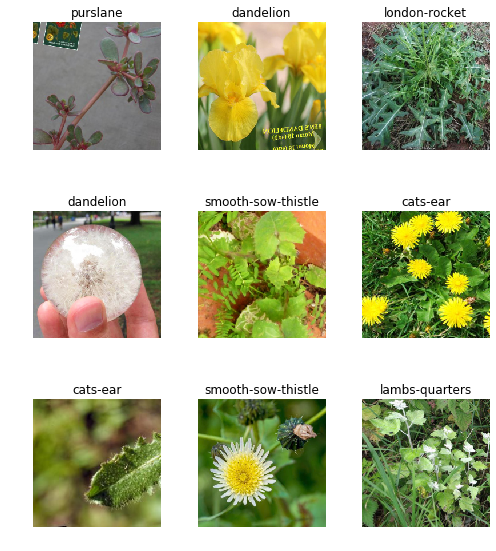
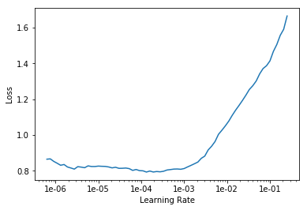
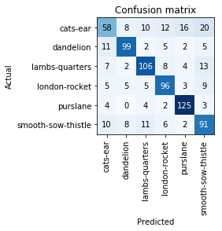

Building an image dataset
Table of Contents
Beginning
Imports
Python
from pathlib import Path
PyPi
The lecture uses javascript pasted into the browser to download images but I'm going to try a python library built to download images - Google Imaged Download. The documentation mentions that it uses Selenium but it doesn't explicitly state (or at least not that I could see) that it requires you to install Chrome Driver (not Gecko Driver like I originally did), and therefore you need a Chromium-based browser as well.
from google_images_download.google_images_download import googleimagesdownload as GoogleImages
from fastai.metrics import error_rate
from fastai.vision.data import (imagenet_stats, ImageDataBunch, verify_images)
from fastai.vision.learner import cnn_learner, ClassificationInterpretation
from fastai.vision import models
from fastai.vision.transform import get_transforms
import numpy
My Stuff
from graeae import EnvironmentLoader
Set Up
The Environment
environment = EnvironmentLoader()
The Download
google_images = GoogleImages()
The Output Path
weed_path = Path(environment["WEEDS"]).expanduser()
Middle
Downloading
Dandelions
keywords = dict(
keywords="dandelion",
limit=1000,
type="photo",
output_directory=str(weed_path),
chromedriver="/usr/local/bin/chromedriver",
)
The library can't find the chromedriver for some reason, even though it's on the path. Also, in creating the output folder it appears to expect that the output directory is a string so you have to convert the path.
paths = google_images.download(keywords)
Item no.: 1 --> Item name = dandelion Evaluating... Getting you a lot of images. This may take a few moments... Reached end of Page. Starting Download... Completed Image ====> 1.dandelion-benefits-1296x728-feature.jpg Completed Image ====> 2.324083_1100.jpg Completed Image ====> 3.DandelionFlower.jpg Completed Image ====> 4.Dandelion-in-Spring.jpg Completed Image ====> 5.220px-TaraxacumOfficinaleSeed.JPG Completed Image ====> 6.dandelions-in-a-field.jpg Completed Image ====> 7.dandelionleaves2.jpg Completed Image ====> 8.81MteT13V7L._SX425_.jpg Completed Image ====> 9._103888633_hi016427699.jpg Completed Image ====> 10.21711_dandelion1.rev.1401296268.jpg Completed Image ====> 11.dandelions-1030x687.jpg Completed Image ====> 12.dandelions.jpg Completed Image ====> 13.6caf5b570c7c435ea2f0258b2337b964.jpg Completed Image ====> 14.dandelion-2065913_1920.jpg Completed Image ====> 15.urban-foraging.png Completed Image ====> 16.Newly-discovered-form-of-natural-flight-found-in-dandelion-seeds-730x410.jpg Completed Image ====> 17.dandelion-uses.jpg Completed Image ====> 18.Dandelion-GettyImages-135558263-588f7eb73df78caebc084c58.jpg Completed Image ====> 19.Yellow-and-fluffy-white-dandelions.jpg Completed Image ====> 20.howdandelion.jpg Invalid or missing image format. Skipping... Completed Image ====> 21.Use-dandelions-for-food-and-medicine.jpg Completed Image ====> 22.1400945145878.jpeg Completed Image ====> 23.00951_01_dandelion.jpg Completed Image ====> 24.Dan_1024x1024.jpg Completed Image ====> 25.dandel08-l.jpg Completed Image ====> 26.Dandelion-Meaning.jpg Completed Image ====> 27.shutterstock_529155295-860x430.jpg Completed Image ====> 28.hotw-dandelion1-e1533580213163-300x300.jpg Completed Image ====> 29.TM_Header_Dandelion101_02.jpg Completed Image ====> 30.2017-04-05-01.jpg Completed Image ====> 31.dandelion-taraxacum-officinale-primary_400a4ee2-b6fd-4307-b372-d2b529c0e4dc_300x.jpg Completed Image ====> 32.overhead.jpg Completed Image ====> 33.dandelions_1.jpg Completed Image ====> 34.dandelion.jpg Completed Image ====> 35.Dandelion-seeds.jpg Completed Image ====> 36.Dandelion-Salad-with-Warm-Pecan-Vinaigrette-500x500.jpg Completed Image ====> 37.tankist276_shutterstock_31471963.jpg Completed Image ====> 38.dandelion.jpg Completed Image ====> 39.Screen_Shot_2016-01-17_at_5.52.50_PM_1024x1024.png Completed Image ====> 40.bullseye-dandelion-blossom.jpg Completed Image ====> 41.719fF478nPL._SL1323_.jpg Completed Image ====> 42.Dandelion_Bloom.jpg Completed Image ====> 43.dandelion-wine-tall18.jpg Completed Image ====> 44.220px-Dandelion_seedhead_with_only_a_single_seed_still_attached.jpg Completed Image ====> 45.dandelion-meadow-full_0.jpg Completed Image ====> 46.dandelion-gummy-bears-11.jpg Completed Image ====> 47.dan-860x430.jpg Completed Image ====> 48.stock-photo-dandelions-130064053_master.jpg Completed Image ====> 49.dandelion-1306911_1920.jpg Completed Image ====> 50.image_6521e-Dandelion.jpg Completed Image ====> 51.Dandelion-in-Australia.jpg Completed Image ====> 52.DandelionMeanings3.jpg Completed Image ====> 53.220px-Kantoutanpopo.jpg Completed Image ====> 54.101618_HT_dandelion_feat.jpg Completed Image ====> 55.Dandelion-group.JPG Completed Image ====> 56.shutterstock_274297355-800x450.jpg Completed Image ====> 57.dandelion-810x378.jpg Completed Image ====> 58.dandelions-on-a-chopping-board.jpg Completed Image ====> 59.81575be68362cb4059be6363a2aed906_grande.png Completed Image ====> 60.16893922_web1_190519-pdn-andrew-may1-web.jpg Completed Image ====> 61.Dandelion-in-a-gout-diet-500x300.jpg Completed Image ====> 62.dandelion-flowers-field_0.jpg Completed Image ====> 63.181022-dandelion-full.gif Completed Image ====> 64.dandelion-flowers.jpg Completed Image ====> 65.dandelion-shortbread-7.jpg Completed Image ====> 66.1484330534065.jpg Completed Image ====> 67.dandelion_1600.jpg Completed Image ====> 68.vegetable-organic-dandelion-greens-1_1024x1024.jpg Invalid or missing image format. Skipping... Completed Image ====> 69.IMG_0813-1024x1024.jpg Completed Image ====> 70.f_12.jpg Completed Image ====> 71.642x361_7_Ways_Dandelion_Tea_Could_Be_Good_for_You.jpg Completed Image ====> 72.1525109821_5ae7543d0dc81.JPG Completed Image ====> 73.dandelion-seed-head-400x300.jpg Completed Image ====> 74.2017-04-05-06.jpg Completed Image ====> 75.dandelion-1024x769.jpg Completed Image ====> 76.1678-28-Amazing-Benefits-Of-Dandelion-Dudal-For-Skin-Hair-And-Health-ss.jpg Completed Image ====> 77.Dandelion.width-800.jpg Completed Image ====> 78.Basket-of-Dandelions.jpg Completed Image ====> 79.maxresdefault.jpg Completed Image ====> 80.dandelion-field-maigi.jpg Completed Image ====> 81.5aec5ff6cb772.image.jpg Completed Image ====> 82.gettyimages-157508237-1555967430.jpg Completed Image ====> 83.dandelion-field-flora-159081.jpg Completed Image ====> 84.dandelion-seeds.jpg Completed Image ====> 85.7181016_xl-1050x519.png Invalid or missing image format. Skipping... Completed Image ====> 86.Dandelion_and_bee_350.jpg Completed Image ====> 87.dandelion-1.jpg Completed Image ====> 88.Dandelion-5.jpeg Completed Image ====> 89.Benefits-Of-Dandelion.jpg Completed Image ====> 90.Dandelion.jpg Completed Image ====> 91.dandelions.jpg Completed Image ====> 92.diy-dandelion-playdough-recipe.jpg Completed Image ====> 93.47000037%402x.jpg Completed Image ====> 94.2-dandelion-blowing-bess-hamiti.jpg Completed Image ====> 95.dandy.jpg Completed Image ====> 96.Dandelion-5.jpg Completed Image ====> 97.101456886_feature.png Completed Image ====> 98.ingredient-IQ-dandelions-1142x474-c.jpg Completed Image ====> 99.Dandelion-5.jpg Completed Image ====> 100.dandelion-2260690_960_720.jpg Completed Image ====> 101.d41586-018-07032-6_16203056.jpg Completed Image ====> 102.DandelionBG.jpg Completed Image ====> 103.h-yellow-dandelion-flower.jpg Completed Image ====> 104.GettyImages-145629450-581829635f9b581c0b104942.jpg Completed Image ====> 105.115738809%282%29.jpg Completed Image ====> 106.dandelion_smart-fix.jpg Completed Image ====> 107.dandelion-tea-620_620x350_71484652381.jpg Completed Image ====> 108.dandelion-1-ADJUSTED-248x300.jpg Completed Image ====> 109.dandelion-pesto-1-1030x687.jpg Completed Image ====> 110.Grandmas-Dandelion-Soup-overheadW-700x542.jpg Completed Image ====> 111.Health-benefits-of-Dandelion-2.jpg Completed Image ====> 112.814v-YsM2dL._SL1201_.jpg Invalid or missing image format. Skipping... Completed Image ====> 113.making-dandelion-vinegar-500x375.jpg Completed Image ====> 114.dandelions.jpg Completed Image ====> 115.sow-thistle-vs-dandelion.jpg Completed Image ====> 116.dandelions_article.jpg Completed Image ====> 117.Dandelion_Feature_xl_10556655_(Custom).jpg Completed Image ====> 118.Dandelion_1-2000x1180.jpg Completed Image ====> 119.1-dandelion-seeds-bess-hamiti.jpg Completed Image ====> 120.DandelionTincture.JPG Invalid or missing image format. Skipping... Completed Image ====> 121.dandelion-leaves-500x500.png Completed Image ====> 122.Dandelion_tires_technology_Continental.jpg Completed Image ====> 123.violet-in-dandelions.jpg Completed Image ====> 124.yellow-dandelions-bright-flowers-on-260nw-598445252.jpg Completed Image ====> 125.Dandelion-300x225.jpg Completed Image ====> 126.dandelion.jpg Completed Image ====> 127.Dandelion%20Festival%20Webpage%20Image.jpg Completed Image ====> 128.dandelion-3.jpg Completed Image ====> 129.DandelionHoney-5a840cb33128340037a09e0e.jpg Completed Image ====> 130.AN150-Dandelion-Greens-732x549-thumb.jpg Completed Image ====> 131.Dandelion_400x400.jpg Completed Image ====> 132.dandelion.JPG Completed Image ====> 133.5ac3a71a821e5.image.jpg Completed Image ====> 134.BENS_DANDELION.jpg Completed Image ====> 135.dandelion-flowers-big.jpg Completed Image ====> 136.sauteed-dandelions-with-eggs-leeks-and-feta-1-9-600x900.jpg Completed Image ====> 137.13979689_f1024.jpg Completed Image ====> 138.177102678.jpg Completed Image ====> 139.dandelion-wine-recipe-1.jpg Completed Image ====> 140.10881341-large.jpg Completed Image ====> 141.DandelionTeaUpdate_Header.jpg Completed Image ====> 142.dandelion-wild-taraxacum-officinale-seeds-amkha-seed_716.jpg Completed Image ====> 143.dandelionbeer-banner-panorama.jpg Completed Image ====> 144.maxresdefault.jpg Completed Image ====> 145.east-coast-dandelion.jpg Completed Image ====> 146.dandelion-seeds-in-the-sunlight-vector-20571994.jpg Completed Image ====> 147.dandelions.jpg Completed Image ====> 148.TM_Embed_Dandelion101_SS.jpg Completed Image ====> 149.Dandelion1.jpg Completed Image ====> 150.Washing-Dandelions.jpg Completed Image ====> 151.best+way+to+get+rid+of+dandelions+permanently.jpeg Completed Image ====> 152.14239953175_96bc487474_b.jpg Completed Image ====> 153.pink_dandelion_-_3.jpg Completed Image ====> 154.dandelion-plants.jpg URLError on an image...trying next one... Error: <urlopen error [SSL: CERTIFICATE_VERIFY_FAILED] certificate verify failed: unable to get local issuer certificate (_ssl.c:1056)> Completed Image ====> 155.dandelion_flower_full.jpg Completed Image ====> 156.Common_Dandelion.jpg Completed Image ====> 157.480453655_0.jpg Completed Image ====> 158.dandelion-vinegar-FB.jpg Completed Image ====> 159.medicinal-mixology-dandelion.jpg Completed Image ====> 160.93298382-blue-abstract-dandelion-flower-texture-background-sunrise-extreme-macro-soft-focus-.jpg Completed Image ====> 161.5b60acbc92c3f9c95ecadc52_dandelion-health-salad-flowers-161568.jpg Completed Image ====> 162.170px-Seed_head_dandelion.jpg Completed Image ====> 163.dandelion.jpg Completed Image ====> 164.pexels-photo-1099105.jpeg Invalid or missing image format. Skipping... Completed Image ====> 165.fieldofDandelions.jpg Completed Image ====> 166.dandelion-leaves1-400x300.jpg Completed Image ====> 167.30f917292dac4b478a665f319c982f69.jpg Completed Image ====> 168.dandelion-root-tea-health-benefits-bright.jpg Completed Image ====> 169.2016-10-18-dandelion.jpg Completed Image ====> 170.Dandelion-seeds20150806-30610-1836jds.jpg Completed Image ====> 171.220px-A_dandelion.jpg Completed Image ====> 172.5644-004-BBAB2EF4.jpg Completed Image ====> 173.858X1920_2a3d0912ec2465521b06b14633c8cfac.png Completed Image ====> 174.dandelion-flower-300x225.jpg Completed Image ====> 175.dandelion-recipes-1.jpg Invalid or missing image format. Skipping... Completed Image ====> 176.5c13ef0e9848de205dc3a28d_g94Z7beTiBSs4qZSinKk9w13jAr2BFLyiT7BBYNHDZcw-v5pf_AAjSvgmYxqawn3EA45mtke5B79v6ay5rhjYrD4um0_4Ib42i9EJV7CrsuixS0tWzQfi5m55t5CX2S3Y7rBmjw7.jpeg Completed Image ====> 177.dandelion-flower-02.jpg Completed Image ====> 178.dan3.gif Completed Image ====> 179.boiled-dandelion-greens-810x455.jpg Completed Image ====> 180.dandylion_0.jpg Completed Image ====> 181.issue43_main.jpg Completed Image ====> 182.D5a6ytyX4AAQXsL.jpg Completed Image ====> 183.IMG_1291-1024x1024.jpg Completed Image ====> 184.Dandelion-Oil-Pin-2.jpg Completed Image ====> 185.Small-Dandelion-Flower-Temporary-Tattoo-Design-Idea-Shoulder.jpg Completed Image ====> 186.Taraxacum_officinale_02_Fr_web_2015_fullsize.jpg Invalid or missing image format. Skipping... Completed Image ====> 187.wild-dandelion-recipes-jpg.jpg Completed Image ====> 188.Pic+Dandelion+Leaf.jpg Completed Image ====> 189.Dandelions-Harvesting-Health-Benefits-Recipes-683x1024.jpg Completed Image ====> 190.dandy-31a.jpg Completed Image ====> 191.08recipehealth_600-articleLarge.jpg Completed Image ====> 192.Thumb_01.jpg Completed Image ====> 193.dandelion-timelapse_1024.gif Completed Image ====> 194.dandelion-1557110__340.jpg Completed Image ====> 195.Holistic_Dadelion_3840x2160.jpg Completed Image ====> 196.Dandelions.jpg Completed Image ====> 197.glass-of-dandelion-mead.jpg Completed Image ====> 198.1469054896651.jpg Completed Image ====> 199.dandelion1.jpg Completed Image ====> 200.970c5432eea14b5988b0c9c3d94e4656.jpg Completed Image ====> 201.WP_20130506_004-300x225.jpg Completed Image ====> 202.Fun-with-Dandelions-FB.jpg Completed Image ====> 203.35405.jpg Completed Image ====> 204.dandelion1205.jpg Completed Image ====> 205.CarolinaFalseDandelion_DSC_2728.jpg Completed Image ====> 206.dandelion_root_leaf_prod.jpeg Completed Image ====> 207.maxresdefault.jpg Completed Image ====> 208.dandelion1.jpg Completed Image ====> 209.dandelion-salad-recipe-taraxacum-officinalis-750x420.png Completed Image ====> 210.FOR-WEB_Dandelions.jpg Completed Image ====> 211.abstract-black-dandelion-flying-seeds-260nw-1220847928.jpg Completed Image ====> 212.how-control-dandelions-1.jpg Completed Image ====> 213.DandelionFlowersForPost.jpg Completed Image ====> 214.dandelion-leaves.jpg Completed Image ====> 215.solitarybeeondandelion.jpg Completed Image ====> 216.dandelion-taraxacum-officinale-4250938.jpg.webp Completed Image ====> 217.single-stem-dandelion-artificial-flowers.jpg Completed Image ====> 218.dandelions-682x1024.png Completed Image ====> 219.IMG_1712-768x268.jpg Completed Image ====> 220.Dandelion-1024x768.jpg Completed Image ====> 221.image_16.jpg Completed Image ====> 222.hotw-notadandelion3-wild-lettuce-Lactuca-serriola-e1533581057911-300x300.jpg Completed Image ====> 223.russian_dandelion_rubber_root-01.jpg Completed Image ====> 224.dandelion_seeds_full.jpg Completed Image ====> 225.244875.jpg Completed Image ====> 226.D3916383-6EF5-4803-8B6A-608064271CBA_w250_r0_s.jpg Completed Image ====> 227.Manuel_Findeis_shutterstock_638530378.jpg Completed Image ====> 228.dsc_0027.jpg Completed Image ====> 229.dandelion-yard-harvest-2018-750x563.jpg Completed Image ====> 230.D7l6ZWLWsAUpcKg.jpg Completed Image ====> 231.Dandelion-Plant.jpg Completed Image ====> 232.how-to-get-rid-of-dandelions-1-920x425.jpg Completed Image ====> 233.ela-henry-dandelion2.jpg Completed Image ====> 234.157482566-56a47d4e3df78cf77282b010.jpg Completed Image ====> 235.Dandelion-DNM.jpg Completed Image ====> 236.DANDELIONS_848x480_1241231939639.jpg Completed Image ====> 237.dandelion-tea-new-wide.jpeg Completed Image ====> 238.sow-thistle.jpg Invalid or missing image format. Skipping... Completed Image ====> 239.dandelion-flower.jpg Completed Image ====> 240.taraxacum-officinale-004.jpg Completed Image ====> 241.dandelion-greens-recipes-salad-1068x713.jpg Completed Image ====> 242.dandelion-tea-benefits.jpg Completed Image ====> 243.Greens1_grande.jpg Completed Image ====> 244.78425884_XS.jpg Completed Image ====> 245.tenor.gif Completed Image ====> 246.51hy7xMx0HL._SL500_AC_SS350_.jpg Completed Image ====> 247.common-dandelion-300px.jpg Completed Image ====> 248.dandy-21a.jpg Completed Image ====> 249.dandelion-feature.jpg Completed Image ====> 250.GettyImages-575385175-dd039eb.jpg Completed Image ====> 251.Dandelion.jpg Completed Image ====> 252.dandelion-greens-weeds-950x535.png Completed Image ====> 253.GettyImages-535804358-5acd2fa6c5542e003619cd9d.jpg Completed Image ====> 254.20130124-222423.jpg Completed Image ====> 255.dandelion-puntarelle-salad-header.jpg Completed Image ====> 256.FEATURED-Best-Dandelion-Killer.jpg Completed Image ====> 257.20554032-flower-dandelion-white-on-black-background-vector-illustration.jpg Completed Image ====> 258.lessons-learned-from-the-dandelion-facebook-post.jpg Completed Image ====> 259.dandelions.jpg Completed Image ====> 260.95794138-2b59-4778-bac5-04361b868857.jpg Completed Image ====> 261.dandelion-seeds.jpg Completed Image ====> 262.dandelion_benefits_article.jpg Completed Image ====> 263.false-dandelion-poisoning.jpg Completed Image ====> 264.dandelion-tea-2.jpg Completed Image ====> 265.dandelion.jpg Completed Image ====> 266.image.jpg Completed Image ====> 267.flower_2_750.jpg Invalid or missing image format. Skipping... Completed Image ====> 268.33984953915_d19a51a3c0.jpg Completed Image ====> 269.dandelion-rubber-taraxagum-lab-anklam-764x375.jpg Completed Image ====> 270.20160507-dandelion.png Completed Image ====> 271.Dandelion-Greens-Benefits-Nutrition-and-Recipes.jpg Completed Image ====> 272.Dandelion-Doodle-7.jpg Completed Image ====> 273.Dandelion-Flower-in-Bloom-700x543.jpg Completed Image ====> 274.creamy-dandelion-soup-ck-x.jpg Completed Image ====> 275.bf064e25455239bdfff071b426af008c.jpg Completed Image ====> 276.dandelion-magnesium-lotion-update-FB-800x419.jpg Completed Image ====> 277.yellow-dandelion.jpg Completed Image ====> 278.How-to-Get-Rid-of-Dandelions.jpg Completed Image ====> 279.dandelion-in-seed.jpg Completed Image ====> 280.2261.png Invalid or missing image format. Skipping... Invalid or missing image format. Skipping... Completed Image ====> 281.blog-featured-dandelion-20171221-1300.jpg Completed Image ====> 282.dandelion_trueandfalse3.jpg Completed Image ====> 283.dandelion_pic-200x300_large.jpg Completed Image ====> 284.Maelkebotte05.jpg Completed Image ====> 285.Dandelion.jpg Invalid or missing image format. Skipping... Completed Image ====> 286.01_dandelion_things-doctors-wish-you-knew-about-using-dandelion-root-for-detox_483980608-eskymaks-760x506.jpg Completed Image ====> 287.dandelion-vector-background.jpg Completed Image ====> 288.Dandelion_Summer_2011-II_harvest.jpg Completed Image ====> 289.521962154-577d12ea5f9b585875b16536.jpg Completed Image ====> 290.1.jpg Completed Image ====> 291.78fb14fd-2df1-4d71-a558-7c933957afb5.png Completed Image ====> 292.Dandelions-health-benefits-Naturimedica.jpg Completed Image ====> 293.dandelion-seed-Jev7rl3-600.jpg Completed Image ====> 294.Dandy-beer-sm-765x1024.jpg Completed Image ====> 295.Dandelions-at-Cottage-Creek.jpg Completed Image ====> 296.mid_1476817137_dandelion.jpg Completed Image ====> 297.DandelionTincture.JPG Invalid or missing image format. Skipping... Completed Image ====> 298.dandelion-soap-short-pin.jpg Completed Image ====> 299.mountain_dandelion_lg.jpg Completed Image ====> 300.36b47bc13eb896724cc1793ab283b26f.jpg Completed Image ====> 301.Dandelion-jelly-pin2.png Completed Image ====> 302.Garden-Thugs-and-Bedwetters-How-to-Eat-More-Dandelion.jpg Invalid or missing image format. Skipping... Completed Image ====> 303.dandelion_true.jpg Completed Image ====> 304.dandelion-4228400__340.jpg Completed Image ====> 305.burkmarr_dandelion_120404_2.JPG Completed Image ====> 306.Harvesting-Dandelion-Root-Tea-from-Your-Garden.jpg Completed Image ====> 307.dandelion-recipes.jpg Completed Image ====> 308.dandelion-greens.jpg Completed Image ====> 309.Fun-with-Dandelions-Cover.jpg Completed Image ====> 310.dandelions.jpg Completed Image ====> 311.dandelion-1311709_1920-678x381.jpg Completed Image ====> 312.dandelion-jelly-815x1024.jpg Completed Image ====> 313.flowers_Hawkweed_wiki.jpg Invalid or missing image format. Skipping... Completed Image ====> 314.health-benefits-dandelions.png Completed Image ====> 315.dandelion-680x248.jpg Completed Image ====> 316.48337e5f4230737fdb3467f22a9d9a6c.jpg Completed Image ====> 317.dandelion-wall-decal.jpg Completed Image ====> 318.dandelion.jpg Completed Image ====> 319.Chicory-Dandelion-Italiko-Rosso-RC106C-LSS-000_5320.jpg Completed Image ====> 320.header-dandelion.jpg Completed Image ====> 321.dandelion.jpg Completed Image ====> 322.8c160acd-1672-4011-a892-1baa844cbe29-2060x1236.jpeg Completed Image ====> 323.erock3d_dandelions_promo_830_large-900x0.jpg Completed Image ====> 324.dandelionbasket-300x225.jpg Completed Image ====> 325.dandelion-seeds-nature-spring-101538.jpeg Completed Image ====> 326.Pic+Dandelions+on+Table.jpg Completed Image ====> 327.carolina-false-dandelion-11511-carolinafalsedandelion-dsc-2746.jpg Completed Image ====> 328.Bircham-dense-dandelions-640.jpg Completed Image ====> 329.How-To-Harvest-Dandelion-Roots-7-Ways-To-Use-It.jpg Completed Image ====> 330.dandelion-tea.jpg Completed Image ====> 331.87685360_XS.jpg Completed Image ====> 332.1280-687839744-yellow-white-dandelion-macro.jpg Completed Image ====> 333.5-Weeds-FeaturedImage.png Completed Image ====> 334.Dandelion-structure-251x300.jpg Completed Image ====> 335.image_06.jpg Completed Image ====> 336.taraxacum-officinale-005.jpg Completed Image ====> 337.6151_IMG02499.JPG Completed Image ====> 338.Dandelion-False-Hairy-Cats-Ear-Hypochaeris-Radicata-6.jpg Completed Image ====> 339.D59VaEvWkAA21CS.jpg Completed Image ====> 340.dandelion-wine-stefan-steinbauer-107535-unsplash-600x400.jpg Completed Image ====> 341.kill-dandelion4-e1522653020254.png Completed Image ====> 342.The-Natural-Health-Benefits-of-Dandelions744.jpg Completed Image ====> 343.Dandelion-6.jpg Invalid or missing image format. Skipping... Completed Image ====> 344.3508699639_7f84f1e059.jpg Completed Image ====> 345.511353956_1280x720.jpg Completed Image ====> 346.Dandelion-seed-head.JPG Completed Image ====> 347.1469056164106.jpg Completed Image ====> 348.Honey-bee-on-Dandelion.jpg Completed Image ====> 349.dandelion_full_width.jpg Completed Image ====> 350.IMG_0366-1.jpg Completed Image ====> 351.maxresdefault.jpg Completed Image ====> 352.Using-Dandelions-for-Gift-Giving-for-Image-Hort.jpg Completed Image ====> 353.487456455.0.jpg Completed Image ====> 354.DandelionsWeedsx450.jpg Completed Image ====> 355.dandelion-seeds-close-blowing-blue-260nw-614668772.jpg Completed Image ====> 356.Dandelion-roots-leaves-and-flowers-are-powerful-superfoods.jpg Completed Image ====> 357.white-dandelion-closeup-natural-spring-background_78450-189.jpg Completed Image ====> 358.dandelion-greens-harvest-2018-1-750x478.jpg Completed Image ====> 359.Dandelion-Infused-Carrier-Oil.jpg Completed Image ====> 360.common-dandelion-taraxacum-officinale-agg-asteraceae-XD18NA.jpg Completed Image ====> 361.aid2229943-v4-1200px-Get-Rid-of-Dandelions-in-a-Lawn-Step-12.jpg Completed Image ====> 362.Radicchio-Italiko-Rossa-dandelion-RC106-LSS-000_6639.jpg Completed Image ====> 363.seedneeds-dandelion.jpeg Completed Image ====> 364.Dandelion7-1024x768.jpg Completed Image ====> 365.dandelions-rev.jpg Completed Image ====> 366.photo_for_Grandms_Says_large.jpg Completed Image ====> 367.04_Dandelion_Things-Doctors-Wish-You-Knew-About-Using-Dandelion-Root-for-Detox_617857592-Creative-Family-760x506.jpg Completed Image ====> 368.1280-687213634-few-yellow-dandelions-flowers-green-leaves.jpg Completed Image ====> 369.mid_1473552572_dandelion-health-benefits.png Completed Image ====> 370.how-to-get-rid-of-dandelions.jpg Completed Image ====> 371.dandelion-4.jpeg Completed Image ====> 372.Dandelion_Cover_S1illustration-1.jpg Completed Image ====> 373.dandelions.jpg Completed Image ====> 374.Dandelion-Mead-2238.jpg Completed Image ====> 375.5454.jpg Completed Image ====> 376.d41586-018-07084-8_16206024.jpg Completed Image ====> 377.Dandelion-fritters.jpg Completed Image ====> 378.Dandelion.jpg Completed Image ====> 379.Dandelion-Buds-for-Capers-1.jpg Completed Image ====> 380.2017-04-05-07.jpg Completed Image ====> 381.hotw-notadandelion4-lesser-celandine-Ficaria-verna-300x300.jpg Completed Image ====> 382.Dandelion.png Completed Image ====> 383.Dandelion_155.jpg Completed Image ====> 384.dandelion%20seeds%20resize.jpg Completed Image ====> 385.how-control-dandelions-2.jpg Completed Image ====> 386.1.-Dandelion-Taraoffi-open-flower.jpg Completed Image ====> 387.IMG_5207-e1496971515552-1024x1365.jpg Completed Image ====> 388.Dandelions.jpg Completed Image ====> 389.4608685970.jpg Completed Image ====> 390.dandelion-2817950_960_720.jpg Completed Image ====> 391.dandelion-2.jpg Completed Image ====> 392.9770-featured_image-dandelion-root-can-help-cancer-patients.jpg Completed Image ====> 393.Dandelion_[fasciated]_2015_05_02_Adlington_Rivington_Drinking_001p3.jpg Completed Image ====> 394.dandelion_falseclose.jpg Completed Image ====> 395.DandelionMeanings5.jpg Completed Image ====> 396.dandelion-salve-600.jpg Completed Image ====> 397.dandelion2.jpg Completed Image ====> 398.a820e7d5a9ccfa10378178542c78b826.jpg Completed Image ====> 399.220px-Dandelion_greens_for_sale_at_Whole_Foods.jpg Completed Image ====> 400.dandelion_greens_7.jpg Completed Image ====> 401.austin-1000.jpg Completed Image ====> 402.flowers_750.jpg Completed Image ====> 403.Screen_Shot_2018-08-14_at_10.59.57_AM_1024x1024.png Completed Image ====> 404.Dandelion-1-1.jpg Completed Image ====> 405.dandelion2.jpg Completed Image ====> 406.tenor.gif Completed Image ====> 407.dandelion1.jpg Completed Image ====> 408.FWJSJB5JHKUBNMH.LARGE.jpg Completed Image ====> 409.yellow-dandelion-flowers-with-leaves-green-grass_88211-498.jpg Completed Image ====> 410.141339732_be1addc651_b.jpg Completed Image ====> 411.dandelion-flower.jpg Completed Image ====> 412.Dandelion-0X7A0972.jpg Completed Image ====> 413.natural-dandelion-killer-p1.jpg Completed Image ====> 414.Beauty-Dandelion-Flower-Nature-Spring-Summer-4126160.jpg Completed Image ====> 415.dandelion-products-2.jpg Completed Image ====> 416.Dandelion11.jpg Completed Image ====> 417.1-Taraxacum_officinale__Dandelion_.JPG Completed Image ====> 418.129100129-56a6d33b5f9b58b7d0e4ff0b.jpg Completed Image ====> 419.CF004390.jpg Completed Image ====> 420.411aZphlo1L._SL500_AC_SS350_.jpg Completed Image ====> 421.600x600bf.png Completed Image ====> 422.diente_leon_taraxacum2.jpeg Completed Image ====> 423.dandelion-oil-recipe.jpg Completed Image ====> 424.130862457-56a47d633df78cf77282b064.jpg Completed Image ====> 425.violet-in-dandelions-2.jpg Completed Image ====> 426.dandelion.jpg Completed Image ====> 427.Dandelion-False-Hairy-Cats-Ear-Hypochaeris-Radicata-3.jpg Completed Image ====> 428.big_dandelion_leaves.jpg Completed Image ====> 429.howto-Get-Rid-of-Dandelions.jpg Completed Image ====> 430.dandelionwhole-225x300.jpg Completed Image ====> 431.MJR051210Dandelion.jpg Completed Image ====> 432.Organic-Dandelion-Root-Tea_735x1102-no-text.jpg Completed Image ====> 433.dandelion-cover-1400x407.jpg Completed Image ====> 434.dandelions%20large_0.jpg Completed Image ====> 435.dandelion-bunch.jpg Invalid or missing image format. Skipping... Completed Image ====> 436.dandelion-3.jpg Completed Image ====> 437.How-to-make-tassel-flowers-dandelion-36.jpg Completed Image ====> 438.D68o0TZU0AE-R1a.jpg Completed Image ====> 439.dandelionjuice.jpg Completed Image ====> 440.dandelions-uncurling-with-bee.jpg Completed Image ====> 441.IMG_5910.JPG Completed Image ====> 442.image_07.jpg Completed Image ====> 443.How-to-Make-Dandelion-Wine-with-These-2-Easy-Recipes.jpg Completed Image ====> 444.dandelion-background-8948.jpg Completed Image ====> 445.Dandelion-Tea-During-Pregnancy.jpg Completed Image ====> 446.4559568.jpg Completed Image ====> 447.maxresdefault.jpg Completed Image ====> 448.dandelion-400x265.jpg Completed Image ====> 449.img-crabgrass-control.jpg Invalid or missing image format. Skipping... Completed Image ====> 450.dandelionflower.jpg Completed Image ====> 451.spring-foraging-dandelions.jpg Completed Image ====> 452.IMG_4782-300x255.jpg Completed Image ====> 453.dandelion.jpg Completed Image ====> 454.03358_01_italiko_red.jpg Completed Image ====> 455.weeds-dandelion-taraxacum-officinale-dock-leaf-rumex-obtusifolius-BAJ7JD.jpg Invalid or missing image format. Skipping... Completed Image ====> 456.taraxacum-erythrospermum-25.jpg Completed Image ====> 457.dandelion-baby.jpg Completed Image ====> 458.dandelion-madness-wide18.jpg Completed Image ====> 459.dandelion-800x600.jpg Completed Image ====> 460.Dandelion-1.jpg Completed Image ====> 461.dandelion-root-uses-side-effects-benefits-of-dandelion-root-tea-picture-of-dandelion.jpg Completed Image ====> 462.Dandelion-Green-Smoothie.jpg Completed Image ====> 463.Radicchio-Italiko-Rossa-dandelion-RC106-LSS-000_66421.jpg Completed Image ====> 464.71100863.jpg Completed Image ====> 465.Featured-images-dandelion-salve.png Completed Image ====> 466.dandelion-field2.jpg Completed Image ====> 467.3+Pick+dandelions+to+make+a+crown.JPG Completed Image ====> 468.dandelions.jpg Completed Image ====> 469.common-dandelion.gif Completed Image ====> 470.pexels-photo-54300.jpeg Completed Image ====> 471.dandelion-coffee-710x473.jpg Completed Image ====> 472.fotolia_7485888_XS.jpg Completed Image ====> 473.dandelion.jpg Completed Image ====> 474.3.-Dandelion-all-seeds-ripe-past-mid-bloom.jpg Completed Image ====> 475.Cats-ear1-996x1024.jpg Completed Image ====> 476.tumblr_pj49mhW3na1rf9609_540.jpg Completed Image ====> 477.Dandelion.jpg Completed Image ====> 478.b05141.jpg Invalid or missing image format. Skipping... Completed Image ====> 479.KMA_Cumber_030511_0104.jpg Completed Image ====> 480.taraxacum-officinale.jpg Completed Image ====> 481.dandelion_catsearclose.jpg Completed Image ====> 482.dandelion_root_1.png Completed Image ====> 483.5b9ee04e2200005600da32c9.jpeg Completed Image ====> 484.kuva4564.jpg Completed Image ====> 485.Dandelion-5.jpg Completed Image ====> 486.dandelion-seeds-1.jpg Completed Image ====> 487.make-dandelion-pesto.jpg Completed Image ====> 488.Dandy.jpg Completed Image ====> 489.1280-685976962-landscape-with-white-dandelions.jpg Completed Image ====> 490.dandelion-root-vs-leaf.jpg Completed Image ====> 491.product_Dandelion-Root.jpg Completed Image ====> 492.productlifestyle_herbal_DandelionLeafRoot.03.jpg Completed Image ====> 493.dandelion.jpg Completed Image ====> 494.Dandelion-Salad_exps8314CW143041D01_09_2b_RMS-696x696.jpg Completed Image ====> 495.Making-and-Using-Dandelion-Oil-harvest.jpg Completed Image ====> 496.5566871810_9d6a6c31f9.jpg Completed Image ====> 497.dandelion.jpg Completed Image ====> 498.common-dandelion-11475-p1050689.jpg Completed Image ====> 499.1264555489_08aeda6936_b.jpg Completed Image ====> 500.dandelion.jpg Completed Image ====> 501.pr_dandelion3.jpg Completed Image ====> 502.b588d853274f473be15b774715e5d368.jpg Completed Image ====> 503.323710_256.jpg Completed Image ====> 504.picking-dandelions.jpg Completed Image ====> 505.common-dandelion.jpg Completed Image ====> 506.dandelion_plant.jpg Completed Image ====> 507.dandelion-seeds-before-wind.jpg Completed Image ====> 508.7184130_orig.jpeg Completed Image ====> 509.DandelionMeaning.jpg Completed Image ====> 510.Pet-Safe-Dandelion-Killer.jpg Completed Image ====> 511.dandelion-greens-nutrition-facts.jpg Completed Image ====> 512.d72ce06565df4294117f1a7e580361e1.png Completed Image ====> 513.dandelion.jpg Completed Image ====> 514.front-5-1-of-1.jpg Completed Image ====> 515.flower_3_750.jpg Completed Image ====> 516.close-blooming-yellow-dandelion-flowers-260nw-586117580.jpg Completed Image ====> 517.95ce9f089c3f15129c4c1549997bca3a.jpg Completed Image ====> 518.dendy-5a7a44538e1b6e00374b0bd2.jpg Completed Image ====> 519.the-fascination-of-the-dandelion-4214388__340.jpg Completed Image ====> 520.dandelion-pollinators.jpg Invalid or missing image format. Skipping... Completed Image ====> 521.tg-03052017-dandelions_large.jpg Completed Image ====> 522.dandelion-tea-min-ef607fdada.jpg Completed Image ====> 523.Dandelion-Tea-for-health.jpg Completed Image ====> 524.hotw-dandelion4-300x300.jpg Completed Image ====> 525.dandelion-40436_186x186.jpg Completed Image ====> 526.DandelionCloseup2_1024x1024.jpg Completed Image ====> 527.Dandelion-bud.jpg Completed Image ====> 528.yellow-dandelions.jpg Invalid or missing image format. Skipping... Invalid or missing image format. Skipping... Completed Image ====> 529.Dandelions.jpg Completed Image ====> 530.maxresdefault.jpg Completed Image ====> 531.photo4.jpg Completed Image ====> 532.dandelion-vinegar-top.jpg Completed Image ====> 533.set-realistic-images-yellow-white-dandelion-flowers-with-leaves-different-stages-flowering-isolated_1284-20369.jpg Completed Image ====> 534.Dandelion_seeds.jpg Completed Image ====> 535.dandelion-root-cures-cancer-14.jpg Completed Image ====> 536.image_18.jpg Completed Image ====> 537.tumblr_pj49mfNZpS1rf9609_540.jpg Completed Image ====> 538.tenor.gif Completed Image ====> 539.D5ul7YwWwAAmDQ3.jpg Completed Image ====> 540.dandelion%20black%20011814.jpg Completed Image ====> 541.35407.jpg Completed Image ====> 542.dandelion-greens-0201.jpg Invalid or missing image format. Skipping... Completed Image ====> 543.220px-Danedlion_Maria_Sibylla_Merian.png Completed Image ====> 544.Pic+Dandelion+seeds.jpg Completed Image ====> 545.b9c34c540c2eb313518e98c69ebe541a.jpg Completed Image ====> 546.How-to-make-tassel-flowers-dandelion-28.jpg Completed Image ====> 547.taraxacum-officinale-erythrospermum-leaves.jpg Completed Image ====> 548.Dandelion-False-Hairy-Cats-Ear-Hypochaeris-Radicata-5.jpg Invalid or missing image format. Skipping... Completed Image ====> 549.Dandelion%20and%20Rabbits.jpg Completed Image ====> 550.4B23ACC2-6259-4728-ABCB-9F5BA2BFF115_w408_r1_s.jpg Completed Image ====> 551.DandelionNoFlower_JENKS266.png Completed Image ====> 552.Dandelion-8-1.jpg Completed Image ====> 553.1200-39502840-closeup-view-of-dandelion.jpg Completed Image ====> 554.dandelion+taproot.jpg Completed Image ====> 555.flower-flight-seeds-air-705187.jpeg Completed Image ====> 556.Dandelion-Leaves-in-Spinner.jpg Completed Image ====> 557.large.jpg Completed Image ====> 558.23327027036_aafb55e8d5.jpg Completed Image ====> 559.Dandelion-Magnesium-Lotion-Updated-Pin-2.jpg Completed Image ====> 560.dandelion-sketch-drawing-2.jpg Completed Image ====> 561.Dandelion-2.jpg Completed Image ====> 562.Zadiraka_Evgenii_shutterstock_428696311.jpg Completed Image ====> 563.Radicchio-Italiko-Rossa-dandelion-RC106-LSS-000_6640.jpg Completed Image ====> 564.carolina-false-dandelion-11511-carolinafalsedandelion-dsc-2749.jpg Completed Image ====> 565.DSCN8514.jpg Completed Image ====> 566.dandelion-47.jpg Invalid or missing image format. Skipping... Completed Image ====> 567.dandelion_ed_sm.jpg Completed Image ====> 568.775759.jpg Completed Image ====> 569.Dandelion-Roots-and-Greens.jpg Completed Image ====> 570.common-dandelion-dandelion-flower-bud-56896.jpeg Completed Image ====> 571.dandelion3.jpg Completed Image ====> 572.field-spring-grass-green-yellow-dandelion-flower-nature-plant-switzerland-flora-XE9W9X.jpg Completed Image ====> 573.italian_dandelion_bn.jpg Completed Image ====> 574.dandelion-seed.jpg Completed Image ====> 575.Dandelion8-813x1024.jpg Invalid or missing image format. Skipping... Completed Image ====> 576.KMA_Cumber_030511_0101.jpg Completed Image ====> 577.dandelion-flowers.jpg Invalid or missing image format. Skipping... Completed Image ====> 578.dandelion-bloom-big-56a586013df78cf77288b0e4.jpg Completed Image ====> 579.HalfSeeded-Dandelion.jpg Completed Image ====> 580.dandelion-flower-4000x2667-florets-blue-sky-4k-4837.jpg Completed Image ====> 581.dandelion_and_me.jpg Completed Image ====> 582.35466.jpg Completed Image ====> 583.105663996_XS.jpg Completed Image ====> 584.8af259449855a9de879e32130dfc6cea--dandelion-recipes-tea-recipes.jpg Invalid or missing image format. Skipping... Completed Image ====> 585.giphy.gif Completed Image ====> 586.434711.jpg Completed Image ====> 587.image_17.jpg Completed Image ====> 588.dandelion-3416140__340.jpg Completed Image ====> 589.xdandelions_03.jpg Completed Image ====> 590.dandelion-lookalike-300x225.jpg Completed Image ====> 591.D5ul8kLWAAERGVa.jpg Completed Image ====> 592.taraxacum-erythrospermum-36-2.jpg Completed Image ====> 593.hqdefault.jpg Completed Image ====> 594.Dandelion-False-Hairy-Cats-Ear-Hypochaeris-Radicata-Dandelion-Common-Taraxacum-Officinale-1-Names-left-to-right-1.jpg Completed Image ====> 595.dandelion-260nw-705892267.jpg Completed Image ====> 596.hotw-notadandelion2-hawkweed-Hieracium-sp-e1533580997451-300x300.jpg Completed Image ====> 597.1280-683362620-dandelions-in-the-meadow.jpg Completed Image ====> 598.dandelion-jelly-recipe.jpg Invalid or missing image format. Skipping... Completed Image ====> 599.Dandelion_258756.jpg Completed Image ====> 600.dandy-fritters-4.jpg Completed Image ====> 601.29644459615_67c226b51c.jpg Completed Image ====> 602.Dandelion5-768x1024.jpg Completed Image ====> 603.Dandelions-600x469.jpg Completed Image ====> 604.a-wild-dandelion-flower-growing-in-a-field-of-herbal-lavender-plants-M1NF68.jpg Completed Image ====> 605.dandelion-cultivated.jpg Completed Image ====> 606.02634_01_clio.jpg Completed Image ====> 607.common-dandelion-11475-p1050600.jpg Completed Image ====> 608.pexels-photo-289323.jpeg Completed Image ====> 609.dandelionleaf-300x268.jpg Completed Image ====> 610.image_20.jpg Completed Image ====> 611.dandelion-3381676__340.jpg Completed Image ====> 612.taraxacum-officinale-3.jpg Completed Image ====> 613.Dandelions-in-a-basket.jpg Completed Image ====> 614.f2466aa07c857ea6ff2a4c1a737bc803--dandelion-clock-dandelion-seeds.jpg Completed Image ====> 615.woman-blowing-on-dandelion-muted-260nw-159554021.jpg Completed Image ====> 616.dandelion-leaf.jpg Completed Image ====> 617.35408.jpg Completed Image ====> 618.dandelions.jpg Completed Image ====> 619.78493247_XS.jpg Invalid or missing image format. Skipping... Completed Image ====> 620.hqdefault.jpg Completed Image ====> 621.dandy-fritters-6.jpg Completed Image ====> 622.hotw-notadandelion1-cats-ear-Hypochaeris-radicata-300x300.jpg Completed Image ====> 623.Dandelion2-768x1024.jpg Completed Image ====> 624.D5ul9FPWAAExe88.jpg Completed Image ====> 625.a-crop-of-yellow-dandelion-wildflowers-seen-in-bloom-along-a-country-lane-during-spring-in-the-midwest-MP2FHF.jpg Completed Image ====> 626.cats-ear-dandelion-11666-catseardandelion-dsc-0943.jpg Completed Image ====> 627.1280-655540010-dandelions-in-meadow.jpg Completed Image ====> 628.image_09.jpg Completed Image ====> 629.d0a8a5846634d3916ea064ec1ac299e7.jpg Completed Image ====> 630.dandelion-soap-with-flowers.jpg Completed Image ====> 631.vector-dandelion-flying-seeds-on-260nw-600709604.jpg Completed Image ====> 632.dandelion-sky-flower-nature-39669.jpeg Completed Image ====> 633.Cats-ear-and-dandelion.jpg Completed Image ====> 634.bumblebee-dandelion-01.jpg Completed Image ====> 635.taraxacum-erythrospermum-26.jpg Completed Image ====> 636.dandelion-808255__340.jpg Completed Image ====> 637.hqdefault.jpg Invalid or missing image format. Skipping... Completed Image ====> 638.dandelion-root-2-710x556.jpg Completed Image ====> 639.dandelion-roots.jpg Completed Image ====> 640.common-dandelion-11475-p1050186.jpg Completed Image ====> 641.image_19.jpg Completed Image ====> 642.cd54390321e2aaf9c38a8f31ebecfc80--dandelion-painting-creative-art.jpg Completed Image ====> 643.meadow-dandelions-on-sunny-day-260nw-1080645086.jpg Completed Image ====> 644.dandelion-recipes-short-pin.jpg Completed Image ====> 645.Cats-ear4-1024x968.jpg Completed Image ====> 646.AdobeStock_206345546.jpg Completed Image ====> 647.dandelion-142969__340.jpg Completed Image ====> 648.common-dandelion-11475-crown.jpg Completed Image ====> 649.dandelion-infestation.jpg Completed Image ====> 650.17fba7eedcc069e1843e0b730f27c4d6--iphone-wallpaper-quotes-phone-backgrounds.jpg Completed Image ====> 651.blowing-dandelion-seeds-white-background-260nw-1110414380.jpg Completed Image ====> 652.Thumb_02.jpg Completed Image ====> 653.Dandelion1-1024x768.jpg Completed Image ====> 654.dandelion-mead-2.jpg Completed Image ====> 655.hqdefault.jpg Completed Image ====> 656.dandelion-445228__340.jpg Completed Image ====> 657.carolina-false-dandelion-11511-carolinafalsedandelion-dsc-2759.jpg Completed Image ====> 658.c28d5f9dd784f5a5fe3d4be50b42fea3.jpg Completed Image ====> 659.closeup-dandelion-on-natural-background-260nw-282705149.jpg Completed Image ====> 660.dandelion-control.jpg Completed Image ====> 661.Cats-ear5-1024x768.jpg Completed Image ====> 662.maxresdefault.jpg Completed Image ====> 663.field_CarolinaFalseDandelion_plan_nc.jpg Completed Image ====> 664.13309c9c828345aa1787e915522b0c98.jpg Completed Image ====> 665.dandelion-flower-on-white-background-260nw-626460182.jpg Completed Image ====> 666.image_01.jpg Completed Image ====> 667.Dandelion6-882x1024.jpg Completed Image ====> 668.common-dandelion-11475-crown2.jpg Completed Image ====> 669.maxresdefault.jpg Completed Image ====> 670.530255bf511721d0deb0432fb73b2834.jpg Completed Image ====> 671.9f9ec10577b1098067c833188e86e64f--precious-children-beautiful-children.jpg Unfortunately all 1000 could not be downloaded because some images were not downloadable. 671 is all we got for this search filter! Errors: 34
Cat's Ear
keywords["keywords"] = "cat's ear weed"
cats_ear_paths = google_images.download(keywords)
Item no.: 1 --> Item name = cat's ear weed Evaluating... Getting you a lot of images. This may take a few moments... Reached end of Page. Starting Download... Completed Image ====> 1.cats-ear-a.jpg Completed Image ====> 2.hypochaerisleaves_bl.jpg Completed Image ====> 3.commoncatsear4.jpg Completed Image ====> 4.commoncatsear5.jpg Completed Image ====> 5.catsear-root.jpg Completed Image ====> 6.weeds2.jpg Completed Image ====> 7.catsear%20N1.jpg Completed Image ====> 8.cats-ear-dandelion-11666-weed5.jpg Completed Image ====> 9.catsear-d.jpg Completed Image ====> 10.cats-ear-400x267.jpg Completed Image ====> 11.cats-ear-400x299.jpg Completed Image ====> 12.0910catsearwhole3.jpg Completed Image ====> 13.hqdefault.jpg Completed Image ====> 14.cats-ear-dandelion-11666-weeds.jpg Completed Image ====> 15.common_catsear_leaves.gif Completed Image ====> 16.commoncatsear3.jpg Completed Image ====> 17.hypochaerisradicata24.jpg Completed Image ====> 18.Hairy_Catsear004_Forest_Kim_Starr_StarrEnvironmental_bugwood.org.jpg Completed Image ====> 19.cats-ear-dandelion-11666-weed3.jpg Completed Image ====> 20.catsear.jpg Completed Image ====> 21.cats-ear-dandelion-11666-weeds2.jpg Completed Image ====> 22.A-large-common-catsear-plant-665x509.jpg Completed Image ====> 23.Catsear-Eat-Medicinally.jpg Completed Image ====> 24.hypochaerisradicata12.jpg Completed Image ====> 25.hairy-cats-ear.jpg Completed Image ====> 26.cats-ear-weed.jpg Completed Image ====> 27.radicata3a.jpg Completed Image ====> 28.cats-ear-common-hypochoeris-radicata-miw251235-X3H67K.jpg Completed Image ====> 29.1hairycatsear.jpg Completed Image ====> 30.flatweed%20leaves%20N2.jpg Completed Image ====> 31.Hypochaeris%2Bradicata%2BCats%2BEar%2BLawn%2BWeed.JPG Completed Image ====> 32.hryra456w.jpg Completed Image ====> 33.commoncatsear6.jpg Completed Image ====> 34.hypochaeris-radicata-flat-weed-catsear-450w-401971948.jpg Completed Image ====> 35.IMG_3733-800x600.jpg Completed Image ====> 36.Dandelion-False-Hairy-Cats-Ear-Hypochaeris-Radicata-1.jpg Completed Image ====> 37.1-cats-ear-bcfarmsandfood.jpg Completed Image ====> 38.cats-ear-dandelion-11666-weed4.jpg Completed Image ====> 39.21fbdef630731afef86dc698ccdc5359.jpg Completed Image ====> 40.3f6214d352afd3ae4f0690701af56a51--small-white-flowers-root-system.jpg Completed Image ====> 41.cats-ear-dandelion-11666-p1060807-catseardandelion.jpg Completed Image ====> 42.Smoothcatsear.jpg Completed Image ====> 43.cats_ear_young_rosette.jpg Completed Image ====> 44.6971204959_edc5453fb0.jpg Completed Image ====> 45.hairy-wild-lettuce-weed-hypochoeris-radicata-l-spotted-cat-s-ear-growing-field-originated-europe-widely-spread-36599587.jpg Completed Image ====> 46.weed-cats-ear-1.jpg Completed Image ====> 47.Cat%27s_Ear_03_0.jpg Completed Image ====> 48.8d568cf5b869971da7b8cd25bc56bb2b--lawn-turf-seeded.jpg Completed Image ====> 49.depositphotos_169837052-stock-photo-cats-ear-weed.jpg Completed Image ====> 50.Hairy_Catsear001_OhioStateUniv_bugwood.org.jpg Completed Image ====> 51.Catsear.jpg Completed Image ====> 52.cats-ear.jpg Completed Image ====> 53.dandelions-696x389.jpg IOError on an image...trying next one... Error: [Errno 104] Connection reset by peer Completed Image ====> 54.22494268149_babe30dbdf.jpg Completed Image ====> 55.avopix-401971945.jpg Completed Image ====> 56.cats-ear-dandelion-11666-catseardandelion2.jpg Completed Image ====> 57.220px-Hypochaeris_radicata_3285.JPG Completed Image ====> 58.6dfedb655a994e9ba06853e5bec5710d--purple-flowers-weed.jpg Completed Image ====> 59.hypochaeris-radicata-cats-ear-weed-F0W6JC.jpg Completed Image ====> 60.hypochaerisradicata30.jpg Completed Image ====> 61.Dandelion-False-Hairy-Cats-Ear-Hypochaeris-Radicata-Dandelion-Common-Taraxacum-Officinale-1-Names-left-to-right-1.jpg Completed Image ====> 62.7968ae66dca9b2dce70683ffc502b3b079208cb5_hypochaeris-radicata-855538_1920.jpg Completed Image ====> 63.yellow-flower-surrounding-green-leafs-450w-772058455.jpg Completed Image ====> 64.cats-ear-weed-Hypochaeris-radicata.png Completed Image ====> 65.Hypochoeris%20radica%20FOM%201204%20plant.JPG Completed Image ====> 66.6971201505_4597311f45.jpg Completed Image ====> 67.stock-photo-hypochaeris-radicata-flat-weed-cat-s-ear-spotted-cat-s-ear-rosetted-annual-herb-leaves-rough-401971933.jpg Completed Image ====> 68.Hypochaeris-radicata_5524931_Rob-Routledge-Custom.jpg Completed Image ====> 69.e40db66802af5867cb31ec3ba3b1e3af--wild-geranium-garden-weeds.jpg Completed Image ====> 70.Hypochoeris%20radicata%20FOM%201204%20base%20fl%20stem.JPG Completed Image ====> 71.Cats-Ear-weed.jpg Completed Image ====> 72.resizedflora2new.jpg Completed Image ====> 73.hypochaerisradicata18.jpg Invalid or missing image format. Skipping... Completed Image ====> 74.cats-ear-common-hypochoeris-radicata-miw251235-GGJE6F.jpg Completed Image ====> 75.Dandelion-False-Hairy-Cats-Ear-Hypochaeris-Radicata-2.jpg Completed Image ====> 76.cats_ear_hairy_leaves.jpg Completed Image ====> 77.Spotted_catsear--Hypochaeris_radicata--m.s.jpg Completed Image ====> 78.206b27b09c92e64a11fe9fb07f9f6f30--bad-bad-cat-ears.jpg Completed Image ====> 79.Hairy_Catsear003_BMacDonald_SaultCollege_bugwood.org.jpg Completed Image ====> 80.Catsear.jpg Completed Image ====> 81.flat-broad-leaf-weeds-1-la.jpg Completed Image ====> 82.salad2ee612.jpg Completed Image ====> 83.il_794xN.1433296245_tbjj.jpg Completed Image ====> 84.Catsear-Leaf-e1526729175371-1024x474.jpg Completed Image ====> 85.Catsear-400x533.jpg Completed Image ====> 86.bishops-weed-poisoning.jpg Completed Image ====> 87.Hypochaeris-radicata_1555100_Ohio-State-Weed-Lab.jpg Completed Image ====> 88.cats-ear-dandelion-11666-catseardandelion-dsc-0852.jpg Completed Image ====> 89.stock-photo-flatweed-aka-catsear-or-hairy-cats-air-the-plant-is-an-invasive-weed-and-commonly-found-in-lawns-1405386989.jpg Completed Image ====> 90.220px-Hypochaeris.radicata.Alan.JPG Completed Image ====> 91.7594b2248e5c277a2432cb10a4367d26--erecta-perennial.jpg Completed Image ====> 92.big_catsear20002.JPG Completed Image ====> 93.cats-ear-2.jpg Completed Image ====> 94.glaucous_goosefoot_plant.jpg Completed Image ====> 95.cats-ear-flower-P582XH.jpg Completed Image ====> 96.hqdefault.jpg Completed Image ====> 97.il_794xN.1169788393_4i7s.jpg Completed Image ====> 98.hypochaeris-radicata-flat-weed-catsear-450w-401971930.jpg Completed Image ====> 99.foodanddrink_flavor1-1-7e214cd899f0f8fe.jpg Completed Image ====> 100.hairy-cats-ear.jpg Completed Image ====> 101.Cats-ear-Dandelion.jpg Completed Image ====> 102.catsear-800x600.jpg Completed Image ====> 103.cats-ear-flowers.jpg Completed Image ====> 104.flatweed%20stems%20N2.jpg Completed Image ====> 105.man-picking-out-hairy-cat-ear-yard-doing-work-wild-weed-name-weed-93068245.jpg Completed Image ====> 106.cats-ear-picture.png Completed Image ====> 107.Cats_Ear_400.jpg Completed Image ====> 108.sjm-l-foraging-08xx-3.jpg Completed Image ====> 109.catsear-f.jpg Completed Image ====> 110.Marijuana-plant-1062908_1920-588a59853df78caebc1562c3.jpg Completed Image ====> 111.Hairy_Catsear002_OhioStateUniv_bugwood.org.jpg Completed Image ====> 112.220px-Hypochaeris_radicata_3294.JPG Completed Image ====> 113.53270f55f3affe0d9b731603d710878e--plantago-garden-weeds.jpg Completed Image ====> 114.dandelions-1.jpg Completed Image ====> 115.catsear+1.JPG Completed Image ====> 116.tall-yellow-flowers-weed-spring-print-special-prints-only-limited-time-only-tall-green-weed-yellow-flowers.jpg Invalid or missing image format. Skipping... Completed Image ====> 117.Cat%27s_Ear_04_0.jpg Completed Image ====> 118.image003.jpg Completed Image ====> 119.spotted-cats-ear-hypochaeris-radicata-_0394-small.jpg Completed Image ====> 120.Flat_weed_%283148973339%29.jpg Completed Image ====> 121.hairy-cats-ear-2.jpg Completed Image ====> 122.SUBU-UrbanForaging-HairyCatsEar.jpg Completed Image ====> 123.cats-ear-seed-head-P5828X.jpg Completed Image ====> 124.il_794xN.1123180936_2153.jpg Completed Image ====> 125.1c5907_04c2da8055f14522bfd4ba2219f71cbf_mv2_1024x768.png Completed Image ====> 126.wicker-img-115.jpg Completed Image ====> 127.hyrad3.jpg Completed Image ====> 128.stock-photo-common-hypochaeris-radicata-rough-catsear-hairy-dandelion-with-small-yellow-rosette-flowers-is-449030662.jpg Completed Image ====> 129.180921-urban-foraging-edible-weeds-Common-Cats-Ear-350x467.jpg Completed Image ====> 130.hyrad0.jpg Completed Image ====> 131.hypochaerisradicata33.jpg Completed Image ====> 132.cats-ears-rosette1.jpg Completed Image ====> 133.more-early-spring-weeds-024.jpg Completed Image ====> 134.hryar0866w.jpg Completed Image ====> 135.cats-ear-leaf.jpg Completed Image ====> 136.22872980622_f2143c35a5.jpg Completed Image ====> 137.Cats-Ear.jpg Completed Image ====> 138.catsear.jpg Completed Image ====> 139.catsear.jpg Completed Image ====> 140.fi-cats-ear-400x250.jpg Completed Image ====> 141.catsear_sm.jpg Completed Image ====> 142.9a5dc2821d4819d8450d5cdec70b40ec--white-flowers-weed.jpg Completed Image ====> 143.common-cats-ear-flowers-hypochaeris-radicata-growing-on-a-road-near-B8KCYY.jpg Completed Image ====> 144.Cat%27s_Ear_02_0.jpg Completed Image ====> 145.Jolt-Bottle-10L.jpg Completed Image ====> 146.stock-photo-hypochaeris-radicata-flat-weed-cat-s-ear-spotted-cat-s-ear-rosetted-annual-herb-leaves-rough-401971939.jpg Completed Image ====> 147.cats-ear-dandelion-11666-catseardandelion-dsc-0943.jpg Completed Image ====> 148.rgh_catear1.jpg Completed Image ====> 149.57262993_1833695570063461_5251219451713260277_n.jpg Completed Image ====> 150.cats-ears-flowers.jpg Completed Image ====> 151.weed17.JPG Completed Image ====> 152.hypochaeris_radicata.jpg Completed Image ====> 153.180921-urban-foraging-edible-weeds-Bristly-Oxtongue-700x525.jpg Completed Image ====> 154.leaveshairy.jpg Completed Image ====> 155.Cats-Ear-Dandelion-300x225.jpeg Completed Image ====> 156.1555112.jpg Invalid or missing image format. Skipping... Completed Image ====> 157.very-tall-yellow-flowers-cats-ears-flowering-in-the-yard-tall-yellow-flowers-uk.jpg Completed Image ====> 158.c06340.jpg Completed Image ====> 159.stock-photo-cat-s-ears-weed-blooming-1365578216.jpg Completed Image ====> 160.Cat%2527s+Ear+Hypochaeris+radicata.JPG Completed Image ====> 161.Capeweed.jpg Completed Image ====> 162.Sonchus_oleraceus.CA.1.jpg Completed Image ====> 163.e552a1409669b3da20115d918169fdae---day-blue-flowers.jpg Invalid or missing image format. Skipping... Completed Image ====> 164.61161833_319462918969475_1265022715123205547_n.jpg Completed Image ====> 165.catsear4-25b-500x500.jpg Completed Image ====> 166.Catsear-Weed-Source-Macleay-Grass-Man-600x600.jpg Completed Image ====> 167.purslane1-150x150.jpg Completed Image ====> 168.CatsearDandelion.jpg Completed Image ====> 169.hygla3.jpg Completed Image ====> 170.dune-grass-with-cats-ear-flower-weed-aberdovey-wales-A38949.jpg Completed Image ====> 171.13613.jpg Completed Image ====> 172.A-weed-tea-in-the-garden-as-a-cold-sets-in.jpg Completed Image ====> 173.il_794xN.1123137668_ab0a.jpg Completed Image ====> 174.cats_ear_flower_involucre.jpg Completed Image ====> 175.city-dandelions_main.jpg Completed Image ====> 176.tree-white-sweet-flower-animal-cute-looking-bush-pet-fur-portrait-young-green-fluffy-kitten-cat-sitting-feline-mammal-garden-fauna-eyes-whiskers-kitty-furry-ears-vertebrate-weeds-domestic-adorable-small-to-medium-sized-cats-cat-like-mammal-domestic-short-haired-cat-778591.jpg Completed Image ====> 177.cats-ear-p1.jpg Completed Image ====> 178.resizedcats-ear.jpg Completed Image ====> 179.Hypochoeris%20radica%20FOM%200105%20flower%20n%20seed.JPG Completed Image ====> 180.hypochaerisradicata28.jpg Completed Image ====> 181.weed_sowthistle.jpg URLError on an image...trying next one... Error: <urlopen error unknown url type: x-raw-image> Completed Image ====> 182.cats_ear_20-2-2018.JPG Completed Image ====> 183.catsear-c.jpg Completed Image ====> 184.Hypochaeris-radicata_1553145_Theodore-Webster.jpg Completed Image ====> 185.Erodium_cicutarium.jpg Completed Image ====> 186.Cats-Ear-MagicZoom.jpg Completed Image ====> 187.mixed-weeds450.jpg Completed Image ====> 188.cats-ear-leaves.jpg Completed Image ====> 189.Cats-Ear.jpg Completed Image ====> 190.white-evil-cat-dirt-weeds-background-looking-walks-to-camera-fur-body-short-darker-hair-head-ears-blue-eyes-mouth-107341620.jpg Completed Image ====> 191.tall-yellow-flowers-plant-yellow-flowers-stock-photos-tall-yellow-flowers-tall-yellow-flower-weed-mullein.jpg Completed Image ====> 192.Chamberbitter.jpg Completed Image ====> 193.18342238_10210932305478001_2194864223501874184_n-2.jpg Completed Image ====> 194.cats_ear.jpg Completed Image ====> 195.Hypochoeris%20radicata%20leaf1.JPG Completed Image ====> 196.hryar3172w.jpg Completed Image ====> 197.CATSEAR.jpeg Completed Image ====> 198.cats_ear_30-7-2017.JPG Completed Image ====> 199.51Dl1xkwsFL._SX466_.jpg Completed Image ====> 200.1493844821307.jpg Completed Image ====> 201.catsear-flowers.jpg Completed Image ====> 202.yellow-flower-weed-bright-yellow-flowers-have-five-petals-prolific-seed-producer-pods-will-scatter-seed-for-several-feet-when-touched-yellow-flower-weed-georgia.jpg Invalid or missing image format. Skipping... Completed Image ====> 203.2167069%20Bindii%20weed_1_0.jpg Completed Image ====> 204.catsear02.jpg Completed Image ====> 205.cats_ear_plants.jpg Completed Image ====> 206.Cats-Ear-2000x500.jpg Completed Image ====> 207.hygla0.jpg Completed Image ====> 208.Hypochaeris_glabra.CA.1.jpg Completed Image ====> 209.Wintergrass.jpg Completed Image ====> 210.common-plantain-bcfarmsandfood-350.jpg Completed Image ====> 211.catsear_weed.jpg Completed Image ====> 212.sjm-l-foraging-08xx-2.jpg Completed Image ====> 213.20111209_0399.jpg Completed Image ====> 214.HypochoerisRadicata2.jpg Completed Image ====> 215.cats-ear.jpg Completed Image ====> 216.flatweed-aka-catsear-hairy-cats-260nw-1407002897.jpg Completed Image ====> 217.dandelion-leaves1-150x150.jpg Completed Image ====> 218.1555110.jpg Completed Image ====> 219.lampu4-25b.jpg Completed Image ====> 220.stock-photo-flowers-on-the-meadow-455171974.jpg Completed Image ====> 221.dandelion-lookalike-300x225.jpg Completed Image ====> 222.weedy-herb-garden-pre-vinegar-530x398.jpg Completed Image ====> 223.Hawkbit-MagicZoom.jpg Completed Image ====> 224.weedsdangeroustopets1.png Completed Image ====> 225.mouse-ear-chickweed-identification-uk.png Completed Image ====> 226.51kp43W4s7L._UX385_.jpg Completed Image ====> 227.pc1.jpg Completed Image ====> 228.Philip-Stark-collects-wild-greens-in-a-bowl-900x600.jpeg Completed Image ====> 229.adorable-animal-cat-1049260.jpg Completed Image ====> 230.dandelion-for-parrots.jpg Completed Image ====> 231.87617533.jpg Completed Image ====> 232.paleo1549d8.jpg Completed Image ====> 233.22468103028_b936aee910.jpg Completed Image ====> 234.cats-ears-rosette2.jpg Completed Image ====> 235.1408532.large.jpg Completed Image ====> 236.20141005_083252.jpg URLError on an image...trying next one... Error: <urlopen error unknown url type: x-raw-image> URLError on an image...trying next one... Error: <urlopen error unknown url type: x-raw-image> Completed Image ====> 237.1-Agrostemma_githago-001.JPG Completed Image ====> 238.cats-ear-dandelion-11666-rosette.jpg Completed Image ====> 239.hypochoerisglabra3.jpg Completed Image ====> 240.broadsword_1200x1200.jpg Completed Image ====> 241.American-Burnweed-300x225.jpeg Completed Image ====> 242.Cat%27s_Ear_01_0.jpg Completed Image ====> 243.sweet_vernal_grass_mix.jpg Completed Image ====> 244.cats_ear_flower.jpg Completed Image ====> 245.purple-deadnettle2-bcfarmsandfood-350.jpg Completed Image ====> 246.avopix-401971936.jpg Completed Image ====> 247.hyrad5.jpg Completed Image ====> 248.Sonchus_oleraceus.CA.5.jpg Completed Image ====> 249.IMG_5626.jpg Completed Image ====> 250.cats-ear-flower.jpg Completed Image ====> 251.hryar1076w.jpg Completed Image ====> 252.White-Clover-MagicZoom.jpg Completed Image ====> 253.tiny_weed_rosette_30-7-2018.JPG Completed Image ====> 254.Weeds.png Completed Image ====> 255.Catsear-1-Turf-Finder.jpg Completed Image ====> 256.450px-Conyza_canadensis_5.jpg Completed Image ====> 257.catsear11.jpg Completed Image ====> 258.50780572_2184030598357710_2118009451204679055_n.jpg Completed Image ====> 259.cats%2Bear%2B7583.jpg Completed Image ====> 260.dandelion-150x150.jpg Completed Image ====> 261.weed-dandelion-yellow.jpg Invalid or missing image format. Skipping... Completed Image ====> 262.61gTJ2OEnLL._UX679_.jpg Completed Image ====> 263.prickly-lettuce-bouquet.jpg Completed Image ====> 264.catsear-b.jpg Completed Image ====> 265.IKdvqQIAStyaS8GFLgUV_20180925_170436_medium.jpg Completed Image ====> 266.180921-urban-foraging-edible-weeds-top1-1200x800.jpg Invalid or missing image format. Skipping... Completed Image ====> 267.bindii-lawn-weeds-2-copy.jpg Completed Image ====> 268.foxglove.jpg URLError on an image...trying next one... Error: <urlopen error unknown url type: x-raw-image> Completed Image ====> 269.cannabis-pets-cbd-plant-boulder-holistic.jpg Completed Image ====> 270.mallowedibleweeds.jpg Completed Image ====> 271.cudweed.jpg Completed Image ====> 272.55855669_801504030226629_90144045439261161_n.jpg Completed Image ====> 273.2-dandelion-bcfarmsandfood-600x450.jpg Completed Image ====> 274.165wh.jpg Completed Image ====> 275.Dandelion-False-Hairy-Cats-Ear-Hypochaeris-Radicata-4.jpg Completed Image ====> 276.catsear_smooth3b.jpg Completed Image ====> 277.hyrad6.jpg Completed Image ====> 278.APratt2-107-1.jpg Completed Image ====> 279.elephant-ear-poison-225x300.jpg Completed Image ====> 280.get-rid-cats-dogs-marijuana.jpg URLError on an image...trying next one... Error: <urlopen error [SSL: CERTIFICATE_VERIFY_FAILED] certificate verify failed: Hostname mismatch, certificate is not valid for 'assets.hightimes.com'. (_ssl.c:1056)> URLError on an image...trying next one... Error: <urlopen error unknown url type: x-raw-image> URLError on an image...trying next one... Error: <urlopen error unknown url type: x-raw-image> Completed Image ====> 281.Pic546-to-600.jpg Invalid or missing image format. Skipping... Completed Image ====> 282.hypochaerisradicata13.jpg Completed Image ====> 283.Birds-Foot-Trefoil-MagicZoom.jpg Completed Image ====> 284.catsear+2.JPG Completed Image ====> 285.Hypochaeris_radicata.1.jpg Completed Image ====> 286.weeds-blackberry.jpg URLError on an image...trying next one... Error: <urlopen error unknown url type: x-raw-image> Completed Image ====> 287.cats_ear_fruit.jpg Completed Image ====> 288.snw.jpg Completed Image ====> 289.1491442973779.jpg Invalid or missing image format. Skipping... Completed Image ====> 290.zone-8-kale-150x150.jpg Completed Image ====> 291.lambs-ears-ground-cover-plant.jpg Completed Image ====> 292.hryar0885w.jpg Completed Image ====> 293.252.jpg Completed Image ====> 294.Spotted_catsear--Hypochaeris_radicata--s.s.jpg Completed Image ====> 295.dsc_6761.jpg Invalid or missing image format. Skipping... Completed Image ====> 296.catsear13.jpg Invalid or missing image format. Skipping... Completed Image ====> 297.White-Clover-300x300.jpg Completed Image ====> 298.Ammi-majus.jpg Completed Image ====> 299.queen-annes-lace-bcfarmsandfood-350.jpg Completed Image ====> 300.chickweed-Mouse-Ear.jpg Invalid or missing image format. Skipping... Completed Image ====> 301.jimsonweed.jpg Completed Image ====> 302.maxresdefault.jpg Completed Image ====> 303.Pic544-to-600.jpg Completed Image ====> 304.weed-identification.jpg Completed Image ====> 305.weeds-panic-veldt-grassjpg.jpg Completed Image ====> 306.toad_rush.jpg URLError on an image...trying next one... Error: <urlopen error unknown url type: x-raw-image> Completed Image ====> 307.Cirsium_arvense.2.jpg Completed Image ====> 308.hypochoerisglabra5.jpg Completed Image ====> 309.Get-Rid-of-Foxtails-Step-12.jpg Completed Image ====> 310.cat-marijuana-1024x576.jpg Completed Image ====> 311.0488276-05.jpg Completed Image ====> 312.agriculture-weeds-smooth-catsear-hypochaeris-glabra-aka-false-dandelion-flatweed-glabrous-catsear-flowering-plants-california-usa-x432r3.jpg Completed Image ====> 313.weed_dandelion.jpg URLError on an image...trying next one... Error: <urlopen error unknown url type: x-raw-image> Completed Image ====> 314.cannabis.jpg URLError on an image...trying next one... Error: <urlopen error unknown url type: x-raw-image> Completed Image ====> 315.25343015684_f8d326024c.jpg Completed Image ====> 316.Kalanchoe-Daigremontiana-Mother-of-Thousands.jpg Completed Image ====> 317.aquilegia2_24-5-2013.JPG Completed Image ====> 318.8206A.jpg Completed Image ====> 319.catsear12.jpg Completed Image ====> 320.935.jpg Completed Image ====> 321.cats-ear-dandelion-11666-backofleaf.jpg Completed Image ====> 322.sjm-l-foraging-08xx-1.jpg Completed Image ====> 323.Taraxacum%20officinale%20flower%20n%20leaves%20FOM%200305.JPG Completed Image ====> 324.Crows-foot.jpg Completed Image ====> 325.209440.jpg Completed Image ====> 326.mouse-ear-chickweed-leaf-300x200.jpg URLError on an image...trying next one... Error: <urlopen error unknown url type: x-raw-image> Completed Image ====> 327.HIGH-compressor-1.jpg Completed Image ====> 328.Weeds-Jimboomba-Turf.jpg Completed Image ====> 329.my-cat-ate-my-pot-plants.jpg Completed Image ====> 330.5-buttercup-bcfarmsandfood-600x450.jpg Completed Image ====> 331.Bindii-Weed-Source-Macleay-Grass-Man-600x600.jpg Completed Image ====> 332.plantainedibleweed.jpg Completed Image ====> 333.Violet-MagicZoom.jpg Completed Image ====> 334.healing-weeds-cats-ear-21.jpeg Completed Image ====> 335.daisy-flower-in-lawn-300x200.jpg Completed Image ====> 336.hyrad2.jpg Completed Image ====> 337.Heres-Everything-You-Wanted-to-Know-About-Animals-Getting-High-on-Weed2.jpg Completed Image ====> 338.rgh_catear4.jpg Completed Image ====> 339.101751667.jpg Completed Image ====> 340.capeweed.jpg Completed Image ====> 341.hawkweed_yellow.jpg Completed Image ====> 342.Bur-Chervil.jpg Completed Image ====> 343.catsear-e.jpg Completed Image ====> 344.9172201878_cb185f5cfc_z.jpg Completed Image ====> 345.Chrysanthemum_sp.-003.JPG Completed Image ====> 346.man-picking-out-hairy-cat-ear-yard-doing-work-wild-weed-name-weed-93197638.jpg Completed Image ====> 347.Sticky-Chick-Weed-300x225.jpeg Completed Image ====> 348.Cirsium_vulgare.1.jpg URLError on an image...trying next one... Error: <urlopen error unknown url type: x-raw-image> Completed Image ====> 349.568x334_Pets__Pot_main_image.jpg Completed Image ====> 350.Hypochaeris_radicata_2925.jpg Completed Image ====> 351.1-sow%2Bthistle%2B%25281%2529.JPG Completed Image ====> 352.cats-ear-2.jpg Completed Image ====> 353.agriculture-weeds-smooth-catsear-hypochaeris-glabra-aka-false-dandelion-g3e7rm.jpg Completed Image ====> 354.Pic545-to-600.jpg Completed Image ====> 355.P1080227.jpg Completed Image ====> 356.foxtail-7.jpg Completed Image ====> 357.165wh.jpg Completed Image ====> 358.weeds-privet.jpg Completed Image ====> 359.daisy2-bcfarmsandfood-350.jpg Completed Image ====> 360.shotweed.jpg Completed Image ====> 361.maxresdefault.jpg Completed Image ====> 362.daisy-featured-300x225.jpg URLError on an image...trying next one... Error: <urlopen error unknown url type: x-raw-image> Completed Image ====> 363.p7030074.jpg Completed Image ====> 364.cats-ear-dandelion-11666-p1060809-catseardandelion.jpg Completed Image ====> 365.dandelionleaf-300x268.jpg IOError on an image...trying next one... Error: The read operation timed out Completed Image ====> 366.artemesia_frigida.png URLError on an image...trying next one... Error: <urlopen error unknown url type: x-raw-image> Completed Image ====> 367.grass-allergy.jpg Completed Image ====> 368.Pruning-Perennials-Joe-Pye-Weed.jpg Completed Image ====> 369.silver_grass_flowerhead.jpg Completed Image ====> 370.weed_dandelionflower-e1401844344375.jpg Completed Image ====> 371.180813-plants-full.jpg Completed Image ====> 372.catsear05.jpg Completed Image ====> 373.23.jpg Invalid or missing image format. Skipping... Completed Image ====> 374.stale-seedbed-400x267.jpg Completed Image ====> 375.ONCRMBOR7BEW7CDVHK2IGKNPPQ.jpg Completed Image ====> 376.Lawn-Bur-Weed-300x225.jpeg Completed Image ====> 377.Cat%20Drug%20High%20Weed%20Animal%20Women%20BlackSweatshirt%20Wellcoda%20169.jpg Completed Image ====> 378.pigweededible.jpg Completed Image ====> 379.18417030228_6ce89c2449_b.jpg Completed Image ====> 380.Hypochaeris-radicata_5374507_Joseph-M-DiTomaso.jpg Completed Image ====> 381.meowijuana-1.jpg Completed Image ====> 382.37-instagrams-of-cats-smoking-weed-1-5121-1356025825-0_big.jpg Completed Image ====> 383.62001490_171579480524447_7750664418236853070_n.jpg Completed Image ====> 384.180921-urban-foraging-edible-weeds-Sweet-Fennel-t-350x467.jpg Completed Image ====> 385.2011-04-17%2BMesa%2BCity%2BCemetery%2BVisit%2BApr%2B17%252C%2B2011%2B5-02%2BPM.jpg Completed Image ====> 386.foraged-greens-900x720.jpg Completed Image ====> 387.Bindii.jpg Completed Image ====> 388.Catsear-Flower-e1526729196211-1024x732.jpg Completed Image ====> 389.hairy-cats-ear-hypochaeris-radicata-E7E59K.jpg Completed Image ====> 390.Cats-ear-and-dandelion.jpg Completed Image ====> 391.merlin_153330861_e1ab69aa-0179-4559-9552-88006e761fe5-articleLarge.jpg Completed Image ====> 392.White-Clover.jpg Completed Image ====> 393.14215561_f520.jpg Completed Image ====> 394.cats_cannabis.jpg Completed Image ====> 395.165wh.jpg Invalid or missing image format. Skipping... Completed Image ====> 396.weeds-english-ivy.jpg URLError on an image...trying next one... Error: <urlopen error unknown url type: x-raw-image> Completed Image ====> 397.herb-garden-after-vinegar-530x398.jpg Completed Image ====> 398.Cudweed-300x300.jpg Completed Image ====> 399.hryra8664w.jpg Completed Image ====> 400.1555101.jpg URLError on an image...trying next one... Error: <urlopen error unknown url type: x-raw-image> Completed Image ====> 401.poison-ivy-thinkstockphotos-139254587-335jpg.jpg Completed Image ====> 402.landscape-1516707756-dog-poisonous-plants.jpg Completed Image ====> 403.3-daisy-weed-bcfarmsandfood-600x450.jpg Completed Image ====> 404.capeweed_plants.jpg Completed Image ====> 405.hypochoerisglabra4.jpg Completed Image ====> 406.Echium_vulgare.2.jpg URLError on an image...trying next one... Error: <urlopen error unknown url type: x-raw-image> Completed Image ====> 407.Pic548-to-600.jpg Completed Image ====> 408.catsear.jpg Completed Image ====> 409.1200px-Starr_030612-0063_Tribulus_terrestris.jpg Completed Image ====> 410.web_-_Marshmallow_weed.jpg Completed Image ====> 411.DSC_0171.jpg Completed Image ====> 412.jimsonweed-thinkstockphotos-490349982-590lc030916.jpg Completed Image ====> 413.kisspng-whiskers-cat-drawing-clip-art-weed-emoji-5b3ef8aaeacb84.9666256615308535469617.jpg Completed Image ====> 414.weed_deadnettle_stock.jpg Completed Image ====> 415.dog-15-new-marijuana-intoxication-image-01.jpg Completed Image ====> 416.cute-grey-cat-play-hunter-with-kitten-doll-as-victim-lay-on-floor-keep-cats-from-eating-plants-weed-plant-video-why-does-my-eat-plastic.jpg Completed Image ====> 417.mouse-ear-chickweed-flower-300x200.jpg Completed Image ====> 418.catsear%20300.jpg Completed Image ====> 419.weed-control-in-gardens.png Completed Image ====> 420.48ee8437bb0c1a80eac6522bad6656ab--medicinal-plants-edible-plants.jpg Completed Image ====> 421.Chick-Weed-300x225.jpeg Completed Image ====> 422.100_6717-150x150.jpg Completed Image ====> 423.Barberry.jpg Completed Image ====> 424.maxresdefault.jpg Invalid or missing image format. Skipping... Completed Image ====> 425.Carrot-Weed.jpg Completed Image ====> 426.522286_442253175816597_2146322357_n.jpg Completed Image ====> 427.elephant-ear-400x267.jpg Completed Image ====> 428.weeds-angled-onion.jpg Completed Image ====> 429.page_1_thumb_large.jpg Completed Image ====> 430.aquilegia1_24-5-2013.JPG Completed Image ====> 431.catsear09.jpg Completed Image ====> 432.gardening-25183771280.jpg Completed Image ====> 433.fathen_sm.jpg Completed Image ====> 434.cats-ear-plant-Hypochaeris-radicata.jpg URLError on an image...trying next one... Error: <urlopen error unknown url type: x-raw-image> Invalid or missing image format. Skipping... Completed Image ====> 435.purslaneedibleweed.JPG Completed Image ====> 436.Flick-weed.jpg URLError on an image...trying next one... Error: <urlopen error unknown url type: x-raw-image> Completed Image ====> 437.Prunella_vulgaris.4.jpg Completed Image ====> 438.1465FA7F-C301-4A42-9E71-94841CD48B44-600x600.png Completed Image ====> 439.catsear-or-false-dandelion-12apr14-sg.jpg Completed Image ====> 440.3500.jpg Completed Image ====> 441.Pic549-to-600.jpg Completed Image ====> 442.Greater-Plantain-MagicZoom.jpg Completed Image ====> 443.Bindii.jpg URLError on an image...trying next one... Error: <urlopen error unknown url type: x-raw-image> Completed Image ====> 444.amaranth-young.jpg Completed Image ====> 445.a1557035154_10.jpg Completed Image ====> 446.o50r2lets4hdmivvkekb.jpg Completed Image ====> 447.Golden_Chain__Laburnum_anagyroides_-001.JPG Completed Image ====> 448.original-grid-image-16561-1389327124-4.jpg Completed Image ====> 449.1555103.jpg Completed Image ====> 450.catsear-flower.jpg URLError on an image...trying next one... Error: <urlopen error unknown url type: x-raw-image> IOError on an image...trying next one... Error: timed out URLError on an image...trying next one... Error: <urlopen error unknown url type: x-raw-image> Completed Image ====> 451.13612.jpg Completed Image ====> 452.Creeping-Oxalis.jpg Completed Image ====> 453.weeds-white-arum-lily.jpg Completed Image ====> 454.can-you-legally-get-your-pets-high-605-1433531189.jpg Completed Image ====> 455.dogs-and-marijuana-jpg.jpg Completed Image ====> 456.bracken-fern.jpg Completed Image ====> 457.248mbr.jpg Completed Image ====> 458.Taraxacum%20officinale%20flower%20n%20leaves%20FOM%200305.JPG URLError on an image...trying next one... Error: <urlopen error unknown url type: x-raw-image> Completed Image ====> 459.Golden_Chain__Laburnum_anagyroides_-001.JPG Completed Image ====> 460.page_1_thumb_large.jpg Completed Image ====> 461.Violet-MagicZoom.jpg Completed Image ====> 462.weeds-english-ivy.jpg Completed Image ====> 463.Pets-and-weed-killers5-2017.jpg Completed Image ====> 464.Bur-Chervil.jpg Completed Image ====> 465.Cat-rubbing-against-flower-pot-2.jpg Invalid or missing image format. Skipping... Completed Image ====> 466.agriculture-weeds-common-catsear-stock-photo__2370629.jpg Completed Image ====> 467.poison-hemlock-flowers-FML-small.jpg Completed Image ====> 468.Pic548-to-600.jpg Completed Image ====> 469.spring-flower-display-surrounding-cat-on-table-154456721-57dbf41f5f9b58651657b7f7.jpg Completed Image ====> 470.16946550711_23e5293dd0_b.jpg Completed Image ====> 471.tumblr_mfjyjzqhsk1r2sq16o1_500.jpg Completed Image ====> 472.sl4.jpg Completed Image ====> 473.weed_deadnettle_stock.jpg Completed Image ====> 474.catsear-flower-elena-perelman-canvas-print.jpg Completed Image ====> 475.Kerr-PoisonousPlants1007-2005-9.jpg Completed Image ====> 476.queen-annes-lace-bcfarmsandfood-350.jpg Completed Image ====> 477.feral-cats-threatening-hawaii_v.jpg Completed Image ====> 478.045-530x353.jpg Completed Image ====> 479.cat%20insurance%20cheat%20grass.jpg Completed Image ====> 480.cats-ear-id.jpg Completed Image ====> 481.A-dog-looking-confused-and-surprised.jpg Completed Image ====> 482.i-see-orange-weed-and-a-huge-chicken-and-a-idk-and-3-cats-and-2-little-kids_o_3780067.jpg Completed Image ====> 483.hypochaerisradicata13.jpg Completed Image ====> 484.cool-weed-dog-56cc88673df78cfb37a05c8d.jpg Completed Image ====> 485.catsear05.jpg Completed Image ====> 486.inner-banner.jpg Completed Image ====> 487.hryar0885w.jpg Completed Image ====> 488.tumblr_mwbql05glX1smbf1ao1_500.gif Completed Image ====> 489.Cannabis_d3df19_6276013.jpg Completed Image ====> 490.can-you-legally-get-your-pets-high-605-1433531189.jpg Completed Image ====> 491.Bindii.jpg URLError on an image...trying next one... Error: <urlopen error unknown url type: x-raw-image> Completed Image ====> 492.Cirsium_vulgare.1.jpg Completed Image ====> 493.Wild-Green-salad-900x900.jpg Completed Image ====> 494.maxresdefault.jpg Completed Image ====> 495.THINGS-C.jpg Completed Image ====> 496.e552a1409669b3da20115d918169fdae---day-blue-flowers.jpg Completed Image ====> 497.11huntcat.jpg Completed Image ====> 498.cat-allergies1.jpg URLError on an image...trying next one... Error: <urlopen error unknown url type: x-raw-image> Completed Image ====> 499.17742.jpg Completed Image ====> 500.2012-03-09+15.31.25.jpg Completed Image ====> 501.giphy.gif Invalid or missing image format. Skipping... Completed Image ====> 502.foxtail-caused-by-heat.jpg Completed Image ====> 503.cats_ear_fruit.jpg Completed Image ====> 504.Clover%20Rabbitfoot.jpg Completed Image ====> 505.unknown_weed_rosette_30-1-2019_th.JPG Completed Image ====> 506.stale-seedbed-400x267.jpg Completed Image ====> 507.Virgo.jpg Completed Image ====> 508.962b1b4c21716cd4903b9f8b981fa6a1.jpg Completed Image ====> 509.silver_grass_flowerhead.jpg Completed Image ====> 510.Bindii-Jo-Jo.jpg Completed Image ====> 511.purslaneedibleweed.JPG Completed Image ====> 512.Chick-Weed-300x225.jpeg Completed Image ====> 513.man-picking-out-hairy-cat-ear-yard-doing-work-wild-weed-name-weed-93197658.jpg Completed Image ====> 514.weed-identification.jpg Completed Image ====> 515.artemesia_frigida.png Completed Image ====> 516.165wh.jpg Completed Image ====> 517.my-dog-wanted-to-help-me-pull-weeds-19504935.png Completed Image ====> 518.Hemlock__Conium_maculatum-2.JPG Completed Image ====> 519.Pic549-to-600.jpg Completed Image ====> 520.weeds-montbresia.jpg Completed Image ====> 521.cats-ear-2.jpg URLError on an image...trying next one... Error: <urlopen error unknown url type: x-raw-image> Completed Image ====> 522.1-img_1968.jpg Completed Image ====> 523.5-buttercup-bcfarmsandfood-600x450.jpg Completed Image ====> 524.weed-619-386.jpg Completed Image ====> 525.hyrad2.jpg Invalid or missing image format. Skipping... Completed Image ====> 526.SIP912141.jpg Completed Image ====> 527.Oxalis-Lawn-Weed-Source-Hans-Hillewaert-600x600.jpg Completed Image ====> 528.180921-urban-foraging-edible-weeds-chickweed-700x467.jpg Completed Image ====> 529.buttercup_sm.jpg Completed Image ====> 530.sl3.jpg Completed Image ====> 531.EquatorialOptimisticCrustacean-small.gif Completed Image ====> 532.catsear09.jpg Completed Image ====> 533.8340094778_1ee96fd317_b.jpg URLError on an image...trying next one... Error: <urlopen error unknown url type: x-raw-image> Completed Image ====> 534.best-med-cine-56cc88383df78cfb37a05c6c.jpg Completed Image ====> 535.1555114.jpg Completed Image ====> 536.agriculture-weeds-smooth-catsear-hypochaeris-glabra-aka-false-dandelion-flatweed-glabrous-catsear-flowering-plants-california-usa-x432r3.jpg Completed Image ====> 537.aquilegia2_24-5-2013.JPG Completed Image ====> 538.cats-catnip.jpg Completed Image ====> 539.cats-ear-dandelion-11666-rosette.jpg Completed Image ====> 540.Echium_vulgare.2.jpg Completed Image ====> 541.Greater-Plantain-MagicZoom.jpg Completed Image ====> 542.maxresdefault.jpg Completed Image ====> 543.tumblr_nb1icfniKz1qjof8lo1_500.jpg Completed Image ====> 544.capeweed_plants.jpg Completed Image ====> 545.P1010703.JPG Completed Image ====> 546.Jimson-Weed-Thinkstock-146897299-335lc031213.jpg Completed Image ====> 547.elephant-ear-400x267.jpg Completed Image ====> 548.poisoning.jpg Completed Image ====> 549.Khasia_Berry___Cotoneaster_simonsii-002.JPG Completed Image ====> 550.2011-04-17%2BMesa%2BCity%2BCemetery%2BVisit%2BApr%2B17%252C%2B2011%2B5-02%2BPM.jpg Completed Image ====> 551.daisy2-bcfarmsandfood-350.jpg Completed Image ====> 552.daisy-featured-300x225.jpg URLError on an image...trying next one... Error: <urlopen error unknown url type: x-raw-image> Completed Image ====> 553.weeds-japanese-honeysuckle.jpg Completed Image ====> 554.Pic543-copy-to-600.jpg Completed Image ====> 555.mistflower.png Completed Image ====> 556.thistle_sm.jpg Completed Image ====> 557.weed-herbarium-header-03.jpg Completed Image ====> 558.lambsquartersedibleweeds.jpg Completed Image ====> 559.165wh.jpg Completed Image ====> 560.12761486.jpg Completed Image ====> 561.weed_garlicmustard.jpg Completed Image ====> 562.Onion-Grass.jpg URLError on an image...trying next one... Error: <urlopen error unknown url type: x-raw-image> Completed Image ====> 563.unknown_weed_11-3-2017_th.JPG Completed Image ====> 564.sl2.jpg Completed Image ====> 565.Prunella_vulgaris.4.jpg Completed Image ====> 566.hairy-cats-ear-hypochaeris-radicata-E7E59K.jpg Completed Image ====> 567.1555099.jpg Completed Image ====> 568.Mouse-Ear-Hawkweed-MagicZoom.jpg Completed Image ====> 569.Carpet-Weed-300x225.jpeg Completed Image ====> 570.p1010850-2.jpeg Completed Image ====> 571.fathen.jpg Completed Image ====> 572.mile-a-minute-weed-400x300.jpg Completed Image ====> 573.OHW_hairy-leaves.jpg Completed Image ====> 574.Solanum_nigrum-003.JPG Completed Image ====> 575.3-daisy-weed-bcfarmsandfood-600x450.jpg Completed Image ====> 576.sorell.jpg URLError on an image...trying next one... Error: HTTP Error 404: Not Found Completed Image ====> 577.catsear06.jpg Completed Image ====> 578.chickweededible-1.jpg Completed Image ====> 579.fleabane.jpg URLError on an image...trying next one... Error: <urlopen error unknown url type: x-raw-image> Completed Image ====> 580.maxresdefault.jpg Completed Image ====> 581.cats-ear-dandelion-11666-backofleaf.jpg Invalid or missing image format. Skipping... URLError on an image...trying next one... Error: <urlopen error unknown url type: x-raw-image> Completed Image ====> 582.weeds-sweet-pittosporum.jpg Completed Image ====> 583.unknown_rosette_4-1-2019_th.JPG Completed Image ====> 584.cat-garden-1024x680.jpg Completed Image ====> 585.Calluna_vulgaris.2.jpg Completed Image ====> 586.2012-05-04+08.22.23.jpg Completed Image ====> 587.Sick-cat-iStock_000024111758-335lc030314.jpg Completed Image ====> 588.1555107.jpg Completed Image ====> 589.spotted-cats-ear-FC9FY5.jpg Completed Image ====> 590.mouse-ear-chickweed-featured-300x225.jpg Completed Image ====> 591.Purple_toadflax__Linaria_purpurea_-1.JPG Completed Image ====> 592.sl6.jpg Completed Image ====> 593.OHW_impact-small.jpg Completed Image ====> 594.Creeping-Buttercup-MagicZoom.jpg Completed Image ====> 595.yorkshire_fog_flowerheads.jpg Completed Image ====> 596.hedge-bindweed-morning-glory-bcfarmsandfood-350.jpg Completed Image ====> 597.hryra8645w.jpg URLError on an image...trying next one... Error: <urlopen error unknown url type: x-raw-image> Completed Image ====> 598.cats-ear-dandelion-11666-p1060809-catseardandelion.jpg Completed Image ====> 599.dandelion-growing-in-lawn-c836e0d1.jpg Completed Image ====> 600.catsear14.jpg Completed Image ====> 601.curlydock.jpg URLError on an image...trying next one... Error: <urlopen error unknown url type: x-raw-image> Completed Image ====> 602.Rubus_armeniacus.2.jpg Completed Image ====> 603.2012-03-03+12.44.26.jpg Completed Image ====> 604.hqdefault.jpg Completed Image ====> 605.feathery_weed_30-12-2017_th.JPG Completed Image ====> 606.wireweed1.jpg Completed Image ====> 607.fathen.jpg Completed Image ====> 608.weed-killer.jpg Completed Image ====> 609.cats_ear_branching_stem.jpg Completed Image ====> 610.vetch2-bcfarmsandfood-350.jpg Completed Image ====> 611.yellow-salsify-broadleaf-biennial-perennial-weed-detail-ed4e71e5_0.jpg Completed Image ====> 612.hryra3805w.jpg Completed Image ====> 613.star-wars-weed-control.jpg Completed Image ====> 614.wildflowers-cats-ear-bladder-campion-red-clover-on-the-side-of-a-path-with-mountains-in-the-background-fulpmes-austria-MMB3D0.jpg Completed Image ====> 615.Use-a-Knapsack-Sprayer-for-Lawn-Care.jpg Completed Image ====> 616.catsear08.jpg Completed Image ====> 617.Leycesteria_formosa.2.jpg Completed Image ====> 618.maxresdefault.jpg URLError on an image...trying next one... Error: <urlopen error unknown url type: x-raw-image> Completed Image ====> 619.aquilegia1_24-5-2013.JPG Completed Image ====> 620.weed-killers.jpg Completed Image ====> 621.mouseear-chickweed-11495-weed1.jpg Completed Image ====> 622.4-plantain-bcfarmsandfood-600x450.jpg Completed Image ====> 623.Poa_annua.jpg Completed Image ====> 624.catsear10.jpg Completed Image ====> 625.Cichorium_intybus.1.jpg Completed Image ====> 626.low_rosette_weed_27-4-2015_th.jpg Completed Image ====> 627.100873658.jpg URLError on an image...trying next one... Error: <urlopen error unknown url type: x-raw-image> Completed Image ====> 628.maxresdefault.jpg Completed Image ====> 629.lawn-weeds-header.jpg Completed Image ====> 630.6-horsetail-bcfarmsandfood-600x450.jpg Completed Image ====> 631.cats-ear-spotted-cats-ear-gosmore-hairy-cats-ear-spotted-cats-ear-hypochaeris-radicata-hypochoeris-radicata-blooming-germany-XB4BT9.jpg Completed Image ====> 632.Spot-Spray-Weeds.jpg Completed Image ====> 633.mouse_ear_chickweed_mature.jpg Completed Image ====> 634.Tragopogon_spp.3.jpg Completed Image ====> 635.unknown_rosette_Pratt_St_16-2-2019.JPG Completed Image ====> 636.SIP949359.jpg Completed Image ====> 637.Hieracium_albiflorum.jpg Completed Image ====> 638.wild%20radish.jpg Completed Image ====> 639.maxresdefault.jpg Completed Image ====> 640.unknown_rosette_St_Pancras_Way_16-2-2019.JPG Completed Image ====> 641.Physalis_peruviana.1.jpg Completed Image ====> 642.101298339.jpg Completed Image ====> 643.maxresdefault.jpg Completed Image ====> 644.maxresdefault.jpg Unfortunately all 1000 could not be downloaded because some images were not downloadable. 644 is all we got for this search filter! Errors: 60
Purslane
keywords["keywords"] = "purslane"
purslane_paths = google_images.download(keywords)
Item no.: 1 --> Item name = purslane Evaluating... Getting you a lot of images. This may take a few moments... Reached end of Page. Starting Download... Completed Image ====> 1.A1mZr5a-KdL._SX425_.jpg Completed Image ====> 2.portulaca_oleracea_jacopo_venturagettyimages-crop.jpg Completed Image ====> 3.purslane-vertical-jpg.jpg Completed Image ====> 4.purslane-jpg.jpg Completed Image ====> 5.forageharvestfeast-purslane-banner-panorama.jpg Completed Image ====> 6.image-e1478826507715.jpeg Completed Image ====> 7.purslane-weed-520x390.jpg Completed Image ====> 8.2017-08-07-purslane-3-1024x768.jpg Completed Image ====> 9.purslane-1.jpg Completed Image ====> 10.purslane-all-mixed-up.jpg Completed Image ====> 11.Flowering-Purslane-900x1200.jpg Completed Image ====> 12.dsc_0045.jpg Completed Image ====> 13.Green-Leaf-French-Purslane-1.jpg Completed Image ====> 14.B9318213314Z.1_20150726075335_000_GEFBELDG9.1-0.jpg Completed Image ====> 15.costa-farms-annuals-4purspnk4pk-64_1000.jpg Completed Image ====> 16.5ac92729-purslane-plant-300x225.jpg Completed Image ====> 17.purslane-poisoning-.jpg Completed Image ====> 18.V_SaladGreens_Purslane.jpg Completed Image ====> 19.71v7yrDNNEL._SX425_.jpg Completed Image ====> 20.purslane-leaves.jpg Completed Image ====> 21.purslane.png Completed Image ====> 22.flowering-jpg.jpg Completed Image ====> 23.Purslane_seeds.jpg Completed Image ====> 24.colorful-portulaca-purslane-1080x520.jpg Completed Image ====> 25.Portulaca-Annual-Flower-HERO-Costa-Farms.jpg Completed Image ====> 26.Greens-Green-Purslane-LSS-000_4586.jpg Completed Image ====> 27.g40-2.jpg Completed Image ====> 28.Greens-Golden-Purslane-LSS-000_4577.jpg Completed Image ====> 29.pruslane-weed-or-food-growagoodlife.jpg Completed Image ====> 30.portulaca_mojave_fuchsia_improved_0.jpg Completed Image ====> 31.purslane-herb1-400x533.jpg Completed Image ====> 32.MG_6673.jpg Completed Image ====> 33.Purslane-Portulaca-Oleracea-Seeds.jpg Completed Image ====> 34.purslane_Melinda-600x347.jpg Completed Image ====> 35.Purslane.jpg Completed Image ====> 36.market_purslane_marieviljoen_gardenista.jpg Completed Image ====> 37.2011-08-02-at-15-11-23-1024x775.jpg Completed Image ====> 38.Purslane_Portulacca_oleracea_300-300x295.jpg Completed Image ====> 39.Purslane-GettyImages-746030149-5a3754d37bb28300370c9e8a.jpg Completed Image ====> 40.IMG_1789.jpg Completed Image ====> 41.purslane-poisoning.jpg Completed Image ====> 42.00386_01_goldenpurslane.jpg Completed Image ====> 43.purslane-2017-02.jpg Completed Image ====> 44.bebe45.jpg Completed Image ====> 45.51LRpVJ1AqL._SX425_.jpg Completed Image ====> 46.s-l640.jpg Completed Image ====> 47.080098_1.jpg Completed Image ====> 48.1*xfhwkB61ih2RR_bfUlb_0g.jpeg Completed Image ====> 49.Gruner-Red-purslane_grande.jpg Completed Image ====> 50.Portulaca-Pazzaz-Salmon-Glow-Costa-Farms-Annaul-Flower.jpg Completed Image ====> 51.Sea-purslane-retail-4-inch-copy.jpg Completed Image ====> 52.t7569_718x404.jpg Completed Image ====> 53.81ZrVgVrtyL._SX425_.jpg Completed Image ====> 54.sg20170724_pizazz.jpg Completed Image ====> 55.purslane-emily-peterson.jpg Completed Image ====> 56.Greens-Green-Purslane-LSS-000_4590.jpg Completed Image ====> 57.mojave_pink_0.jpg Completed Image ====> 58.292681.jpg Completed Image ====> 59.5b63151d4552a.image.jpg Completed Image ====> 60.pulling-up-purslane-GettyImages-1089332232-1200x798.jpg Completed Image ====> 61.VELEA19595_3.jpg Completed Image ====> 62.prod001969.jpg Completed Image ====> 63.p-10238-green_purslanemunich1.jpg Completed Image ====> 64.purslane_LRG.jpg Completed Image ====> 65.Common-Purslane-Spreading-Throughout-a-Garden-Bed-400x300.jpg URLError on an image...trying next one... Error: <urlopen error [SSL: CERTIFICATE_VERIFY_FAILED] certificate verify failed: certificate has expired (_ssl.c:1056)> Completed Image ====> 66.il_794xN.1663722208_eh8a.jpg Completed Image ====> 67.Dont-Pick-This-Weed-If-It-Is-Growing-In-Your-Yard3.jpg Completed Image ====> 68.Verdolga.jpg Completed Image ====> 69.purslane-by-sidewalk.jpg Completed Image ====> 70.9909846.jpg Completed Image ====> 71.purslane_wild_crafted2.jpg Completed Image ====> 72.51bXpreO7zL._SX425_.jpg Completed Image ====> 73.il_794xN.1248151685_5pbi.jpg Completed Image ====> 74.purslane.jpg Completed Image ====> 75.tallgreenpurslane.JPG Completed Image ====> 76.blogger-image-1003545452.jpg Completed Image ====> 77.Purslane-in-a-furrow-no-attribution-FEATURE.jpg Completed Image ====> 78.green-purslane.jpg Completed Image ====> 79.purslanegolden.jpg Completed Image ====> 80.PUGR-purslane-summer.jpg Completed Image ====> 81.5502548-3x2-340x227.jpg Completed Image ====> 82.GOLDENPURSLANE.JPG Completed Image ====> 83.purslane-green-seed-wm_700_1400x.jpg Completed Image ====> 84.purslane.jpg Completed Image ====> 85.535-2.jpg Completed Image ====> 86.purslane-cu.jpg Completed Image ====> 87.Purslane-bowl.jpg Completed Image ====> 88.purslane.png Completed Image ====> 89.61y-UAoDskL._SX425_.jpg Completed Image ====> 90.il_fullxfull.1248144557_f66w.jpg Completed Image ====> 91.636663175704775283-DSC-0604.JPG Completed Image ====> 92.purslane-stems-big-580ffbda3df78c2c7309eb98.jpg Completed Image ====> 93.portulaca_large.jpg Completed Image ====> 94.26446z.jpg Completed Image ====> 95.Purslane1.jpg Completed Image ====> 96.774optimized.jpg Completed Image ====> 97.mojave_tangerine_0.jpg Completed Image ====> 98.1.jpg Completed Image ====> 99.snv8507-web_1.jpg Completed Image ====> 100.purslane-white.jpg Completed Image ====> 101.774optimized.jpg Invalid or missing image format. Skipping... Completed Image ====> 102.Purslane-Green-LSS-000_2016.jpg Completed Image ====> 103.Green-purslane-(Portulaca-oleracea).jpg Completed Image ====> 104.IMG_3868-1024x768.jpg Completed Image ====> 105.purslane-green-portulaca-oleracea-sativa-seeds-amkha-seed_716.jpg Completed Image ====> 106.GoldbergGolden_605f51ac-4470-44a2-8987-f8abb00a40dd_grande.jpg Completed Image ====> 107.83356046-a-photo-of-green-purslane-pussley-or-purslane-flowers-portulaca-oleracea-l-and-green-leaves-top-view.jpg Completed Image ====> 108.sg20170724_mojave.jpg Completed Image ====> 109.purslane05.jpg Completed Image ====> 110.portulaca-oleracea-flower-buds.jpg Completed Image ====> 111.image-placeholder-title.jpg Completed Image ====> 112.Purslane-blooms-web.jpg Completed Image ====> 113.Sea-Purslane-photo1.jpg Completed Image ====> 114.500x375.JPG Completed Image ====> 115.10purslane1-cityroom-blogSpan.jpg Completed Image ====> 116.FSS20021PF-2.jpg Completed Image ====> 117.20-ways-to-Eat-Purslane-640x360.jpg Completed Image ====> 118.golden_purslane_marieviljoen_gardenista-e1474238985853.jpg Completed Image ====> 119.Purslane.jpg Completed Image ====> 120.purslane-rose.jpg Completed Image ====> 121.purslane-mass.jpg Completed Image ====> 122.Purslane-Green-LSS-000_2015.jpg Completed Image ====> 123.portulaca_oleracea_purslane-300x200.jpg Completed Image ====> 124.IMG_1754__05181.1457119760.JPG Completed Image ====> 125.53532003-common-purslane-verdolaga-pigweed-little-hogweed-or-pusley-flower.jpg Completed Image ====> 126.Common_purslane_-_Flickr_-_pellaea-880x495.jpg Completed Image ====> 127.purslane1.jpg Completed Image ====> 128.purslane-seeds-500x500.jpg Completed Image ====> 129.55296_original.jpg Completed Image ====> 130.purslane-seeds-2.jpg Completed Image ====> 131.vitamins-supplements-herbs_herbs_powers-of-purslane_545677448-600x450.jpg Completed Image ====> 132.Purslane-thick-leaves-high-in-omegas_620x.jpg Completed Image ====> 133.55294_original.jpg Completed Image ====> 134.Purslane-1-748x421.jpg Completed Image ====> 135.portulacaoleraceaseedswildfoodism.jpg Completed Image ====> 136.purslane2.jpg Completed Image ====> 137.Purslane_004MO.jpg Completed Image ====> 138.purslane.png Completed Image ====> 139.prod001969.jpg Completed Image ====> 140.123111-004-F6824B8B.jpg Completed Image ====> 141.99050531-flowers-of-portulaca-purslane-sun-plant-common-purslane-verdolaga-pigweed-little-hogweed-pusley.jpg Invalid or missing image format. Skipping... Completed Image ====> 142.purslaneP.jpg Completed Image ====> 143.purslane-omega-3.jpg Completed Image ====> 144.s-l300.jpg Completed Image ====> 145.6420-purslane.jpg Completed Image ====> 146.W2IQIZBI5NF77G7FUHXPWR2MC4.jpg Completed Image ====> 147.DSCN1054.jpg Completed Image ====> 148.purslane-closeup-flower.jpg Completed Image ====> 149.369315.jpg Completed Image ====> 150.81xyPBI8o%2BL._SX466_.jpg Completed Image ====> 151.Slide05.jpg Completed Image ====> 152.purslane-samba-hot-rose.jpg Completed Image ====> 153.Purslane_Toucan_Scarlet_Shades_Seeds_Portulaca_Oleracea__44372.1507010678.jpg Completed Image ====> 154.0179Portulaca-oleracea,-Common-Purslane700x467.jpg Completed Image ====> 155.forage-harvest-feast_purslane-300x293.jpg Completed Image ====> 156.Purslane_golden_potted_300-300x285.jpg Completed Image ====> 157.img_0120-500x500.jpg Completed Image ====> 158.29019848146_230eeae4fd_b.jpg Completed Image ====> 159.maxresdefault.jpg Completed Image ====> 160.Foraging-for-Edible-Plants.jpg Completed Image ====> 161.022532098171.jpg Completed Image ====> 162.purslane.jpg Completed Image ====> 163.purslane-02.jpg Completed Image ====> 164.0808-GT-WN01.01-6x4.jpg Completed Image ====> 165.purslane-verdolagas-in-small-pot.jpg Completed Image ====> 166.lx-purslane.png Completed Image ====> 167.s-l300.jpg Completed Image ====> 168.Purlane-Flower.jpg Invalid or missing image format. Skipping... Completed Image ====> 169.LL31Purslane.jpg Completed Image ====> 170.PURSLANE-1.jpg Completed Image ====> 171.rockpurslane.jpg Completed Image ====> 172.Purslane-Friend-or-Foe-of-the-Garden.jpg Completed Image ====> 173.Untitled-1.jpg Completed Image ====> 174.54b660b907e6d.image.jpg Completed Image ====> 175.14777329865_806cae6160_z.jpg Completed Image ====> 176.purslane.jpg Completed Image ====> 177.pourpier.jpg Completed Image ====> 178.429-purslane.jpg Completed Image ====> 179.portulaca_mojave_red_improved.jpg Completed Image ====> 180.purslane-golden-portulaca-oleracea-sativa-seeds-amkha-seed_252.jpg Completed Image ====> 181.128125222-56b09e5c3df78cf772d00f44.jpg Completed Image ====> 182.Purslane-a-vining-healthy-green_620x.jpg Completed Image ====> 183.Purslane-weed.jpg Completed Image ====> 184.516ukgfiC1L._SX425_.jpg Completed Image ====> 185.Greens-Green-Purslane-LSS-000_4585.jpg Completed Image ====> 186.1.jpg Completed Image ====> 187.purslane-flowerbud.jpg Completed Image ====> 188.Purslane.jpg Completed Image ====> 189.Portulaca-Grandiflora-bonsai-Mixed-Color-Moss-Rose-Purslane-Double-Flower-plant-For-Planting-Heat-Tolerant-Easy.jpg Invalid or missing image format. Skipping... Completed Image ====> 190.purslane.jpg Completed Image ====> 191.958_6713_large.jpg Completed Image ====> 192.2017-06-04_1.jpg Completed Image ====> 193.MS487-12_480x480.jpg Completed Image ====> 194.83356042-a-photo-of-green-purslane-pussley-or-purslane-flowers-portulaca-oleracea-l-and-green-leaves-top-view.jpg Completed Image ====> 195.PurslaneFeature.jpg Completed Image ====> 196.Purslane+1+Phillips.jpg Completed Image ====> 197.purslane-poisoning-1.jpg Completed Image ====> 198.3-22Purslane%20to%20eat%20-2.jpg Completed Image ====> 199.778optimized.jpg Completed Image ====> 200.Common-purslane-Portulaca-oleracea-400x300.jpg Completed Image ====> 201.5d635b96-2506-4831-a9c3-7c23ba043e9a.jpeg Completed Image ====> 202.DSC0434.jpg Completed Image ====> 203.purslane-intro.jpg Completed Image ====> 204.purslane-stem.jpg Completed Image ====> 205.Purslane_Toucan_Fuchsia_Seeds_Portulaca_Oleracea.jpg Completed Image ====> 206.purslane-3.jpg Completed Image ====> 207.purslane-and-portulaca-4.jpg Completed Image ====> 208.Sea-Purslane-Sesuvium-portulacastrum-2.jpg Completed Image ====> 209.Common-purslane-fruit.jpg Completed Image ====> 210.ngi-purslane-salad.jpg Completed Image ====> 211.purslane-evening-wine.jpg Completed Image ====> 212.pink-purslane-11609-pinkpurslane-p1110521.jpg Completed Image ====> 213.hogweed1200.jpg Completed Image ====> 214.purslane_1260x630.jpg Completed Image ====> 215.D7s7CnjWsAE5jO6.jpg Completed Image ====> 216.purslane-herb-img.jpg Completed Image ====> 217.purslane-1024x768.jpg Completed Image ====> 218.MS486-12_480x480.jpg Completed Image ====> 219.91Ug47IDCfL._SL1500_.jpg Completed Image ====> 220.Close-up-flower-of-Purslane.jpg Completed Image ====> 221.51fb91dcfa534494fc9494b7d34060cc.jpg Completed Image ====> 222.Purslane.jpg Completed Image ====> 223.Purslane_-Lynn-Sosnoskie-University-of-Georgia-Bugwood.org_-450x440.jpg Completed Image ====> 224.IMG_1054.jpg Completed Image ====> 225.Green_Leaf_French_Purslane__30637.1499125232.500.750.jpg Completed Image ====> 226.purslane.jpg Completed Image ====> 227.Purslane.jpg Completed Image ====> 228.purslane-flowers.jpg Completed Image ====> 229.purslane-garden.jpg Completed Image ====> 230.rBVaI1oRe--AT6L4AAPRaPkf1Xk868.jpg Completed Image ====> 231.4873654099_b6a4e38a75_z.jpg Completed Image ====> 232.200908-r-xl-chilled-zucchini-soup-with-purslane.jpg Completed Image ====> 233.s-l300.jpg Completed Image ====> 234.2-purslane.jpg Completed Image ====> 235.maxresdefault.jpg Completed Image ====> 236.Tall-Green-Purslane_03899770-bfb9-46b6-bcf3-c45c2f4218f2_grande.jpg Completed Image ====> 237.purslane-fb.jpg Completed Image ====> 238.Purslane.jpg Completed Image ====> 239.purslane-fresh-640-325x260.jpg Completed Image ====> 240.pourpier.jpg Completed Image ====> 241.2040_dbweb.jpg Completed Image ====> 242.Purslane+2+Licher.jpg Completed Image ====> 243.purslane-plant.jpg Completed Image ====> 244.Portulaca_oleracea_8349675986.jpg Completed Image ====> 245.76236390-common-purslane-verdolaga-or-pusley-flower-in-the-garden.jpg Completed Image ====> 246.Pickled-Purslane-760x428.jpg Completed Image ====> 247.102966_01_600x600.jpg Completed Image ====> 248.rbrain.lambs_.quarter.jpg Completed Image ====> 249.0180Portulaca-oleracea,-Common-Purslane700x467.jpg Completed Image ====> 250.Purslane.jpg Completed Image ====> 251.Golden-Leaf-French-Purslane-Seeds-Portulaca-oleracea-sativa_2_1024x1024_1d116f88-6242-4835-a3fe-46bd3d86e86a_1024x1024.jpg Completed Image ====> 252.product_4886.jpg Invalid or missing image format. Skipping... Completed Image ====> 253.20100827-purslane-primary.jpg Completed Image ====> 254.Common-purslane.jpg Completed Image ====> 255.purslane-plant-big.jpg Completed Image ====> 256.5515.png Completed Image ====> 257.05recipehealth_600-articleLarge.jpg Completed Image ====> 258.il_794xN.1858839783_sn9f.jpg Completed Image ====> 259.purslane-jumbo-mango.jpg Completed Image ====> 260.purslane-2010.jpg Completed Image ====> 261.verdolaga-purslane-recipes-cover.jpg Completed Image ====> 262.purslane-picture.jpg Completed Image ====> 263.Purslane-flower-21.jpg Completed Image ====> 264.P1050280.jpg Completed Image ====> 265.purslane_marieviljoen_gardenista.jpg Completed Image ====> 266.purslane-page_orig.jpg Completed Image ====> 267.Purslane.jpg Completed Image ====> 268.55295_original.jpg Completed Image ====> 269.PurslanePlant1.jpg Completed Image ====> 270.purslane_IMGP1791.jpg Invalid or missing image format. Skipping... Completed Image ====> 271.maxresdefault.jpg Completed Image ====> 272.purslane-001-Medium1.jpg Completed Image ====> 273.d5qjh9c_purslane_625x300_21_September_18.jpg Completed Image ====> 274.portulaca-oleracea-1.jpg Completed Image ====> 275.Front%20-%20Purslane.jpg Completed Image ====> 276.forage-harvest-feast_purslane-2.jpg Completed Image ====> 277.Portulaca-oleracea-Common-Purslane.jpg Completed Image ====> 278.purslane.JPG Completed Image ====> 279.Portulaca-Golden-Purslane-Plant.jpg Completed Image ====> 280.90371369-common-purslane-flower-in-garden-.jpg Completed Image ====> 281.flowers_750.jpg Completed Image ====> 282.purslane.jpg Completed Image ====> 283.500PCS-Mixed-Color-Moss-Rose-Purslane-Double-Flower-Seeds-For-Planting-Portulaca-Grandiflora-Heat-Tolerant-easy_grande_20220c06-e70c-40e5-afdc-48209a343aa6_x700.jpg Completed Image ====> 284.Purslane_1-for-web-Photo-credit-Howard-Schwartz.jpg Completed Image ====> 285.Herb-Green-Purslane-DSC03937.jpg Completed Image ====> 286.purslane-2017-01.jpg Completed Image ====> 287.purslane-1-400x300.jpg Invalid or missing image format. Skipping... Completed Image ====> 288.a-close-up-view-of-common-purslane-portulaca-oleracea-focusing-on-K06TF5.jpg Completed Image ====> 289.purslane3.jpg Completed Image ====> 290.fab61s00g.jpg Completed Image ====> 291.purslane-flower-purslane-yellow-flower-132358967.jpg Completed Image ====> 292.purslane-bud.jpg Completed Image ====> 293.purslane-young.jpg Completed Image ====> 294.10004-featured_image-why-the-health-boosting-purslane-is-more-vegetable-than-weed.jpg Completed Image ====> 295.purslane-portulaca-oleraceae-young-plant-with-other-weeds-in-arable-seedbed-XDP50W.jpg Completed Image ====> 296.purslane-light-pink.jpg Completed Image ====> 297.Purslane+3+Makings.JPG Completed Image ====> 298.purslane-recipes.jpg Completed Image ====> 299.Luni-Purslane-Portulaca-Luniya-Noniya-Gonu.jpg Completed Image ====> 300.Portulaca-oleracea-Common-Purslane2.jpg Completed Image ====> 301.weeds_purslane4_zoom.jpg Invalid or missing image format. Skipping... Completed Image ====> 302.img_86151.jpg Completed Image ====> 303.Purslane+1.jpg Completed Image ====> 304.habit_2_750.jpg Completed Image ====> 305.Portulaca_oleracea.6.jpg Completed Image ====> 306.Rock-purslane-400x267.jpg Completed Image ====> 307.RNP-1-4.jpg Completed Image ====> 308.growing_purslane_portulaca_x1.jpg Completed Image ====> 309.Water-purslane-1.gif Completed Image ====> 310.400-04773147c-Masterfile-loskutnikov_field_img_hero_988_380.webp Completed Image ====> 311.Purslane-web.jpg Completed Image ====> 312.main-img2.JPG Completed Image ====> 313.2013-0824-img_2513-purslane-in-field.jpg Completed Image ====> 314.claytonia_2000x.jpg Completed Image ====> 315.16467846-little-common-purslane-flowers.jpg Completed Image ====> 316.8960Portulaca-oleracea,-Common-Purselane350x350.jpg Completed Image ====> 317.Purslane-mulch1.jpg Completed Image ====> 318.purslane.jpg Completed Image ====> 319.Purslane-2-1.jpg Completed Image ====> 320.purslane-and-portulaca-6.jpg Completed Image ====> 321.cpurse2.JPG Completed Image ====> 322.SortingPurslanebyWayneMarshall.jpg Completed Image ====> 323.purslane-seeds.jpg Completed Image ====> 324.foo_22purslane.jpg Completed Image ====> 325.winterpurslane.jpg Invalid or missing image format. Skipping... Completed Image ====> 326.DFEbkPwUAAExbfp.jpg Completed Image ====> 327.Portulaca-cupcake-peachy-Costa-Farms-annual-Flower.jpg Completed Image ====> 328.Herb-Golden-Purslane-HB222-DSC06838.jpg Completed Image ====> 329.TWE-Purslane-1100x550-c-center.png Completed Image ====> 330.HPL.Vegetative1.jpg Completed Image ====> 331.aid8846487-v4-728px-Harvest-Purslane-Step-9.jpg Completed Image ====> 332.sg100617_200.jpg Completed Image ====> 333.purslane.jpg Completed Image ====> 334.cpurse3.JPG Completed Image ====> 335.8142761aaa118c6e0b6734373d724098.jpg Completed Image ====> 336.30422405_1649662378454209_1691706053_n.jpg Completed Image ====> 337.purslane-path.jpg Completed Image ====> 338.purslane_leaves_edited_300.jpg Completed Image ====> 339.purslane.jpg Completed Image ====> 340.purslane-jumbo-punch.jpg Completed Image ====> 341.foraging-for-purslane.jpg Completed Image ====> 342.portulaca-oleracea-855543_960_720.jpg Completed Image ====> 343.DETA-1164.jpg Completed Image ====> 344.crop_common_purslane_growth_habit_lynn_sosnoskie_university_of_georgia_bugwood.jpg Completed Image ====> 345.7094a5-250.jpg Completed Image ====> 346.Purslane-Weed-1.jpg Completed Image ====> 347.tiny-yellow-purslane-flower.jpg Completed Image ====> 348.9909983_f520.jpg Completed Image ====> 349.maxresdefault.jpg Completed Image ====> 350.img1156.jpg Completed Image ====> 351.Purslane-in-the-Garden-768x1024.jpg Completed Image ====> 352.purslane.jpg Completed Image ====> 353.Purslane-Portulaca-aleracea-Pic-2.jpg Completed Image ====> 354.common-purslane-X7RDA8.jpg Completed Image ====> 355.Portulaca_olera_400.jpg Completed Image ====> 356.775optimized.jpg Completed Image ====> 357.s-l300.jpg Completed Image ====> 358.Purslane-Groundcover.jpg Completed Image ====> 359.file-20-01-2018-08-24-25.jpeg Completed Image ====> 360.Purslane-facts-and-health-benefits.jpg Completed Image ====> 361.purslane-weed.jpg Completed Image ====> 362.stems_750.jpg Completed Image ====> 363.1488566365Purslane-Portulaca-oleracea-form.jpg Completed Image ====> 364.Purslane_ip_0038.jpg Completed Image ====> 365.purslane-blog-header-1.jpg Completed Image ====> 366.14448499-common-purslane.jpg Completed Image ====> 367.Purslane.jpg URLError on an image...trying next one... Error: <urlopen error [SSL: CERTIFICATE_VERIFY_FAILED] certificate verify failed: unable to get local issuer certificate (_ssl.c:1056)> Completed Image ====> 368.rbrain.purslane.jpg Completed Image ====> 369.Purslane-Rio-Orange.jpg Completed Image ====> 370.purslane_-Tico-.jpg Completed Image ====> 371.101_1078.JPG Completed Image ====> 372.6292408931_c96b4440b8_b.jpg Completed Image ====> 373.5959808111_49952ffa46_z2.jpg Completed Image ====> 374.purslaneprod.jpg Completed Image ====> 375.purslane-health-benefits-2-03312016.jpg Completed Image ====> 376.Common-purslane-web.jpg Completed Image ====> 377.1402870328.jpg Completed Image ====> 378.edible-weeds-purslane-living-awarness.png Completed Image ====> 379.purslanedalcopyrightedimage1.jpg Completed Image ====> 380.verdolaga1.jpg Completed Image ====> 381.tasting-georgia-carla-capalbo-food-eating-weed-1.jpg Completed Image ====> 382.purslane-egg-salad-640.jpg Invalid or missing image format. Skipping... Completed Image ====> 383.purslane.jpg Completed Image ====> 384.Purslane.jpg Completed Image ====> 385.Purslane-in-Sweet-Potato-Vines-300x173.jpg Completed Image ====> 386.purslane+2.png Completed Image ====> 387.1*-opEI2xzRT3r0yR6QnZo3A.jpeg Completed Image ====> 388.portulaca-oleracea-14.jpg Completed Image ====> 389.Upright-Portulaca.jpg Completed Image ====> 390.l_11641_porcellana-comune-erbe-commestibili.jpg Completed Image ====> 391.IMG_4922.jpg Completed Image ====> 392.verdolaga-purslane-recipes-purslane-closeup.jpg Completed Image ====> 393.20160701Portulaca_oleracea2.jpg Completed Image ====> 394.Portulaca_Scott_zona+via+flickr.jpg Completed Image ====> 395.DETA-233.jpg Completed Image ====> 396.purslane-3894134_960_720.jpg Completed Image ====> 397.photo-credit-ahmet7-1-900x900.jpg Completed Image ====> 398.Portulaca_oleracea_Ja_ao_1.jpg Completed Image ====> 399.Purslane.JPG Completed Image ====> 400.rdc-ad_102675.jpg Completed Image ====> 401.20130820-foraged-inbag.jpg Completed Image ====> 402.GREEN-FUSE-PURSLANE-HOT-SHOT-ROSE-FLAMBEAU-088.jpg Completed Image ====> 403.DSCN0516new-56a993a43df78cf772a87ae9.jpg Completed Image ====> 404.18796144252_7978fcbf02_b.jpg Completed Image ====> 405.purslane-benefits-696x463.jpg Completed Image ====> 406.purslane-samba-pink-bicolor.jpg Completed Image ====> 407.hqdefault.jpg Completed Image ====> 408.garden-portulaca-common-purslane-verdolaga-pigweed-little-hogweed-pusley-plants-blossom-red-flowers-sunny-dayn-126167445.jpg Completed Image ====> 409.ddd6aeb4fe.jpg Completed Image ====> 410.The-succulent-leaves-of-Portulaca-oleracea-purslane-is-also-used-in-the-Middle-East-and.png Completed Image ====> 411.purslane-3.jpg Completed Image ====> 412.Purslane.jpg Completed Image ====> 413.purslane_3456_3456_90.jpg Completed Image ====> 414.purslaneflowersjpg-9ca211b2e420edae.jpg Completed Image ====> 415.cpurse1.JPG Completed Image ====> 416.purslane-gravel.jpg Completed Image ====> 417.original.jpg Completed Image ====> 418.purslane_facebook.jpg Completed Image ====> 419.Sea-Purslane-young-leaves-carpeted-1024x576.jpg Completed Image ====> 420.Purslane_%28Portulaca_oleracea%29_3.jpg Completed Image ====> 421.pink-purslane-11609-pinkpurslane-p1120554.jpg Completed Image ====> 422.fab61s00h.jpg Completed Image ====> 423.20151222_180424.jpg Completed Image ====> 424.Blossom-Flower-Bloom-Portulaca-Plant-Purslane-2698485.jpg Completed Image ====> 425.MS487-32_480x480.jpg Completed Image ====> 426.577699219460c.image.jpg Completed Image ====> 427.bushy-purslane.jpg Completed Image ====> 428.Purslane-weed-or-eat-pinsm-2017.jpg Completed Image ====> 429.common-purslane-portulaca-oleracea-DJ7GEC.jpg Completed Image ====> 430.portulaca-468x1024.png Completed Image ====> 431.Purslane-w-text-720x432.jpg Completed Image ====> 432.image753.png Completed Image ====> 433.Purslane.jpg Completed Image ====> 434.whattoeat_lunch_purslane.jpg Completed Image ====> 435.87828666_XS.jpg Completed Image ====> 436.purslane.jpg Completed Image ====> 437.TWE_purslanelaves-1100x550-c-center.jpg Completed Image ====> 438.purslane-440x409.jpg Completed Image ====> 439.Pickled-Purslane-Patch.jpg Completed Image ====> 440.Purslane-9-1.jpg Completed Image ====> 441.92095713-colorful-common-purslane-flowers-wallpaper-concept-on-a-natural-background.jpg Completed Image ====> 442.purslane2-sm.jpg Completed Image ====> 443.purslane-young-2010.jpg Completed Image ====> 444.Purslane-Portulaca-oleracea.jpg Completed Image ====> 445.Sea-Purslane-Sesuvium-portulacastrum-1.jpg Completed Image ====> 446.770optimized.jpg Completed Image ====> 447.purslane-plants-care-colors-plant-indoors.jpg Completed Image ====> 448.hy6avany6y3unemasugabe8a4.jpg Completed Image ====> 449.1528413000_5b19bb48ea3e3.jpg Completed Image ====> 450.purslane.bmp Completed Image ====> 451.IMG_6404_2.jpg Completed Image ====> 452.Sea-purslane-2.jpg Completed Image ====> 453.purslane-red.jpg Completed Image ====> 454.Purslane-herb.jpg Completed Image ====> 455.c6dddd900ba4423fa627ac8349eabef7.jpg Completed Image ====> 456.3eab8114d55697a98be8d0c42aa0aa0a.jpg Completed Image ====> 457.Portulaca_oleracea_blossom.jpg Completed Image ====> 458.purslane-golden-2014.jpg Completed Image ====> 459.20-flower-seeds-gul-e-shama-purslane-flower-seeds-rainy-season-original-imaey5rqfutyzcsc.jpeg Completed Image ====> 460.purslane.jpg Completed Image ====> 461.purslane-for-bone1.jpg Completed Image ====> 462.dream-meaning-Purslane.jpeg URLError on an image...trying next one... Error: <urlopen error [SSL: CERTIFICATE_VERIFY_FAILED] certificate verify failed: Hostname mismatch, certificate is not valid for 'ediblenetwork.com'. (_ssl.c:1056)> Invalid or missing image format. Skipping... Completed Image ====> 463.portulaca-and-purslane-3-of-4.jpg Completed Image ====> 464.6659_15833_z.jpg Completed Image ====> 465.Purslane.jpg Completed Image ====> 466.purslane-plant-6.jpg Completed Image ====> 467.Purslane-Salad-2-1024x768.jpg Completed Image ====> 468.seapurslane1.jpg Completed Image ====> 469.purslane-5-spurge.jpg Completed Image ====> 470.flower_750.jpg Completed Image ====> 471.sp38202.jpg Completed Image ====> 472.21recipehealth-jumbo.jpg Completed Image ====> 473.4a1f48.jpg Completed Image ====> 474.IMG_2302.jpg Completed Image ====> 475.101422188%20%28640x427%29.jpg Completed Image ====> 476.GREEN-FUSE-PURSLANE-HOT-SHOT-ROSE-061.jpg Completed Image ====> 477.936259_6d496e932cea4619b1a3ae064b45a1eamv2-e1535693322513.jpg Completed Image ====> 478.purslane-tomato-salad-horiz-a-1800.jpg Completed Image ====> 479.IMG_1000.jpg Completed Image ====> 480.Purslane-plant.jpg Completed Image ====> 481.nature-plant-flower-groundcover-flowering-plant-common-purslane-herb-annual-plant-hypericum-1424617.jpg Completed Image ====> 482.purslane-roots.jpg Completed Image ====> 483.portulaca-oleracea-4.jpg Completed Image ====> 484.2011-garden-7-1-kalynskitchen.jpg Completed Image ====> 485.3787Portulaca-suffrutescens,-Shrubby-Purslane700x465.jpg Completed Image ====> 486.stock-photo-portulaca-oleracea--purslane-111303-20573.jpg Completed Image ====> 487.portulaca_oleracea.jpg Completed Image ====> 488.Purslane.jpg Completed Image ====> 489.sassafras.png Completed Image ====> 490.636069396794225188-DSC-0993.jpeg Completed Image ====> 491.MS487-22_480x480.jpg Completed Image ====> 492.hqdefault.jpg Completed Image ====> 493.1-purslane.jpg Completed Image ====> 494.B4-11.jpg Completed Image ====> 495.Purslane-Patch-300x189.jpg Completed Image ====> 496.basil-purslane-005-comp.jpg Completed Image ====> 497.DVG_004.JPG Completed Image ====> 498.sea-purslane.jpg Completed Image ====> 499.purslane-stem-pickles.jpg Invalid or missing image format. Skipping... Completed Image ====> 500.purslane-flowering.jpg Completed Image ====> 501.1-image%20purslanejpg.jpg Completed Image ====> 502.purslane-1200x520.jpg Completed Image ====> 503.common-purslane-verdolaga-pigweed-common-purslane-verdolaga-pigweed-little-hogweed-sun-plant-sun-rose-bloom-early-119744052.jpg Completed Image ====> 504.Sea-purslane-1.jpg Completed Image ====> 505.Purslane%204.jpg Completed Image ====> 506.40-Purslane.jpg Completed Image ====> 507.4089c83976eccc4f05067d482acc88d3.jpg Completed Image ====> 508.purslane-ground-cover-300x225.jpg Completed Image ====> 509.fotolia_3834450_XS.jpg Completed Image ====> 510.14883248-common-purslane-verdolaga-pigweed-little-hogweed-or-pusley.jpg Completed Image ====> 511.purslane+growing.png Completed Image ====> 512.depositphotos_213023104-stock-photo-pink-common-purslane-portulaca-oleracea.jpg Completed Image ====> 513.purslane-portulaca-oleracea-grows-garden-450w-733460797.jpg Completed Image ====> 514.13842.jpg Completed Image ====> 515.Common-purslane-seedling.jpg Completed Image ====> 516.IMG_1074.jpg Completed Image ====> 517.PicMonkey-Collage.jpg Completed Image ====> 518.IMG_0053-1024x1024.jpg Completed Image ====> 519.HR72-Common-Purslane-plant-400x264.jpg Completed Image ====> 520.purslane-plant-flowers-portulaca-oleracea-aka-verdolaga-pigweed-little-GPXXJW.jpg Completed Image ====> 521.purslane-salad.jpg Invalid or missing image format. Skipping... Completed Image ====> 522.Portulaca_olera_300.jpg Completed Image ====> 523.Purslane-rose-and-yellow.jpg Completed Image ====> 524.WhatsApp_Image_2018-06-28_at_05.24.40_grande.jpeg Completed Image ====> 525.purslane-hot-pink.jpg Completed Image ====> 526.walnut-purslane-coleslaw.jpg Completed Image ====> 527.220px-Portulaca_oleracea2.jpg Completed Image ====> 528.10-12-12+my+garden+harvest2.jpg Completed Image ====> 529.weeds_purslane3_zoom.jpg Completed Image ====> 530.GREEN-FUSE-PURSLANE-HOT-SHOT-YELLOW-035.jpg Completed Image ====> 531.gutter_purslane.jpg Completed Image ====> 532.1945.jpg Completed Image ====> 533.Portulaca_oleracea.5.jpg Completed Image ====> 534.purslane-mixed-900x675.jpg Completed Image ====> 535.80dcaa67-353c-4e92-b82a-994f83a23647_1.eeea81187009117ff20540f87e8e3159.jpeg Completed Image ====> 536.FEATURES_180609818_AR_0_SZKJLPRALUPR.jpg Completed Image ====> 537.health-benefits-of-purslane-or-gulasiman.jpg Completed Image ====> 538.purslane_golden.jpg Completed Image ====> 539.liH2o.jpg Completed Image ====> 540.wpid-0702131826_20130703162457717.jpg Completed Image ====> 541.wah-11.jpg Invalid or missing image format. Skipping... Completed Image ====> 542.purslane_260x260-e1371130616681.jpg Completed Image ====> 543.purslane_by_chris_root.jpg Completed Image ====> 544.purslane.jpg Completed Image ====> 545.summer_purslane.jpg Completed Image ====> 546.656optimized.jpg Completed Image ====> 547.100981257.jpg Completed Image ====> 548.purslane.jpg Completed Image ====> 549.Herb-Purslane-Green-DSC_2738.jpg Completed Image ====> 550.DETA-237.jpg Completed Image ====> 551.PortulacaPortoGrande-2.jpg Completed Image ====> 552.plants_green_circles-common_purslane_wild_portulaca_portulaca.jpg Completed Image ====> 553.108417.jpg Completed Image ====> 554.closeupofsemizotu-1024x768.jpg Completed Image ====> 555.purslane-flower-big.jpg Completed Image ====> 556.4600243417_1b560f0b82_b.jpg Completed Image ====> 557.Portulaca-umbraticola-Wingpod-Purslane4.jpg Completed Image ====> 558.3788Portulaca-suffrutescens,-Shrubby-Purslane700x465.jpg Completed Image ====> 559.Purslane,-Pink-1.gif Completed Image ====> 560.Purslane,%20Common%20(Portulaca%20oleracea)%20Drive%20to%20Springfield%20Farm%20Sapcote%20SP%204828%209273%20(taken%2011.7.2006).JPG Completed Image ====> 561.PUR.jpg Completed Image ====> 562.purslane-and-portulaca-1.jpg Completed Image ====> 563.purslane-leaves.jpg Completed Image ====> 564.portulak-gemse-portulak-portulaca-oleracea-ssp-sativa-common-purslane-HBM7T1.jpg Invalid or missing image format. Skipping... Completed Image ====> 565.a-Experimental-field-of-Portulaca-oleracea-purslane-at-the-Ramat-Negev-R-D-station.png Completed Image ====> 566.pulsane.jpg Completed Image ====> 567.MS486-22_480x480.jpg Completed Image ====> 568.depositphotos_213023548-stock-photo-pink-common-purslane-portulaca-oleracea.jpg Completed Image ====> 569.the_persevering_purslane_1_l7.jpg Completed Image ====> 570.15094698-little-common-purslane-flowers.jpg Completed Image ====> 571.purslpix.jpg Completed Image ====> 572.colorful-purslane-flowers-260nw-1108525937.jpg Completed Image ====> 573.purslane.jpg Completed Image ====> 574.3182.jpg Completed Image ====> 575.Purslane_original.jpeg Completed Image ====> 576.purslane-peach-apricot.jpg Completed Image ====> 577.purslane-01.jpg Completed Image ====> 578.pink-purslane-11609-pinkpurslane-p1070236.jpg Completed Image ====> 579.picXMXrmQ.jpg Completed Image ====> 580.purslane-sm.jpg Completed Image ====> 581.purslane4.jpg Completed Image ====> 582.produce_purslane.jpg Invalid or missing image format. Skipping... Completed Image ====> 583.purslane-patch-2010.jpg Completed Image ====> 584.GREEN-FUSE-PURSLANE-HOT-SHOT-ORANGE-066.jpg Completed Image ====> 585.HPL.GH1_.jpg Completed Image ====> 586.20100823purslane2.jpg Completed Image ====> 587.purslane1.JPG Completed Image ====> 588.groene_postelein_webshop_.jpg Completed Image ====> 589.garden-portulaca-common-purslane-verdolaga-pigweed-little-hogweed-pusley-plants-blossom-red-flowers-sunny-day-123827651.jpg Completed Image ====> 590.wpid-0703132036.jpg Completed Image ====> 591.purslane-in-hanging-basket.jpg Completed Image ====> 592.877.JPG Completed Image ====> 593.weeds_purslane1_zoom.jpg Completed Image ====> 594.seapurslane.jpg Completed Image ====> 595.purslane-puerto-rican-hot-pink-1.jpg Completed Image ====> 596.Water-purslane-2.gif Completed Image ====> 597.Portulaca%20oleracea_0.JPG Completed Image ====> 598.3789Portulaca-suffrutescens,-Shrubby-Purslane700x465.jpg Completed Image ====> 599.Herb-Golden-Purslane-HB227-LSS-000_7408.jpg Completed Image ====> 600.47a9a4ba6c861b185f585b82aa2ac8cd--purslane-recipes-purslane-benefits.jpg Completed Image ====> 601.purslane-flower-full.jpg Completed Image ====> 602.watermelon%20purslane%20salad_0.jpg Completed Image ====> 603.9909828.jpg Completed Image ====> 604.24139a.jpg Completed Image ====> 605.depositphotos_213023504-stock-photo-pink-common-purslane-portulaca-oleracea.jpg Completed Image ====> 606.purslane-in-windowbox.jpg Completed Image ====> 607.Different-types-of-purslane-with-brief-descriptions_Q320.jpg Completed Image ====> 608.87590070-flowered-purslane-plant.jpg Completed Image ====> 609.p16t344g891ir5edc111o120v9e84.jpg Completed Image ====> 610.PurslaneYellow1.jpg Completed Image ====> 611.Purslane-Hot-Shot-Flambeau-Rose-Green-Fuse-Botanicals.jpg Completed Image ====> 612.purslane-plant-300x300.jpg Completed Image ====> 613.779optimized.jpg Completed Image ====> 614.0e14e8.jpg Completed Image ====> 615.portulaca-oleracea-common-purslane-also-verdolaga-red-root-or-pursley-used-as-vegetable-salad-and-herb-MFNX50.jpg Completed Image ====> 616.6H-diGangi-Purslane-Seed-Pods.jpg Completed Image ====> 617.RHS_WSYD0012494_11644.JPG Completed Image ====> 618.Purslane-Flowers-Portulaca-Oleracea-L-2464659.jpg Invalid or missing image format. Skipping... Invalid or missing image format. Skipping... Completed Image ====> 619.purslane-and-portulaca-3.jpg Completed Image ====> 620.hqdefault.jpg Completed Image ====> 621.doha_qatar_may-common_purslane_wild_portulaca_portulaca.jpg Completed Image ====> 622.purslane-smoothie-recipe.jpg Completed Image ====> 623.5034972517_e6bf799ab3_o.jpg Completed Image ====> 624.45930.jpg Completed Image ====> 625.beautiful-yellow-pink-portulaca-oleracea-flowers-also-known-as-common-purslane-verdolaga-little-hogweed-red-root-pursl-120756034.jpg Completed Image ====> 626.500_F_249152684_Oy3mMu8Rjr1GEYfA67pR1Mm2FdP53uRI.jpg Completed Image ====> 627.purslane-gold.jpg Completed Image ====> 628.DETA-232.jpg Completed Image ====> 629.1549Portulaca-oleracea,-Common-Purslane700x464.jpg Completed Image ====> 630.purslane-foraged-wild.jpg Completed Image ====> 631.500_F_249152152_cLKmdhxlFw1jBpT3v1jJ0JJVph6lIzVk.jpg Completed Image ====> 632.purslane-vitamins-and-antioxidant1.jpg Completed Image ====> 633.Purslane-pink-2.gif Completed Image ====> 634.starterpurslane-822x1024.jpg Completed Image ====> 635.HPL.Vegetative2.jpg Completed Image ====> 636.6729656371_5396d56f4f_b.jpg Completed Image ====> 637.recipe_main_IMG_8796.jpg Completed Image ====> 638.99ef383c1e61271c949b07b87ec54ed5.jpg Completed Image ====> 639.Screen-Shot-2016-03-07-at-3.01.52-PM.png Completed Image ====> 640.773optimized.jpg Completed Image ====> 641.White_Purslane_01_0.jpg Completed Image ====> 642.Herbal_Green_Purslane_Portulaca_oleracea_L._Heirloom_Seeds__22134.1540401696.jpg Completed Image ====> 643.bright-yellow-flowers-of-common-purslane-portulaca-oleracea-succulent-plant-in-natural-gardens-of-rolle-town-in-switzerland-on-sunny-summer-day-PCYJB0.jpg Completed Image ====> 644.81120283-beautiful-of-common-purslane-flower-concept-nature-beautiful-.jpg Completed Image ====> 645.wild-purslane-superfood-ingredient.jpg Completed Image ====> 646.20151222_180358.jpg Completed Image ====> 647.web%202.jpg Completed Image ====> 648.ludwigia-palustris-13.jpg Completed Image ====> 649.purslane-2-copy1.jpg Invalid or missing image format. Skipping... Completed Image ====> 650.Herb-Golden-Purslane-HB222-DSC03679.jpg Completed Image ====> 651.Wingpod_purslane_%28Portulaca_umbraticola%29_flowers.jpg Completed Image ====> 652.PurslaneFruit.jpg Completed Image ====> 653.DETA-71.jpg Completed Image ====> 654.Post-15-Purslane-1024x681.jpg Completed Image ====> 655.portulaca-flower-blooming-garden-common-purslane-portulaca-flower-blooming-garden-common-purslane-136140398.jpg Completed Image ====> 656.winterpostelein_webshop_.jpg Invalid or missing image format. Skipping... Completed Image ====> 657.3cc7b7.jpg Completed Image ====> 658.Field-Notes-Purslane.jpg Completed Image ====> 659.purslane-bright-pink.jpg Completed Image ====> 660.Sea%20Purslane.jpg Completed Image ====> 661.Portulaca_um_300.jpg Completed Image ====> 662.P1110877.png Completed Image ====> 663.MS487-42_480x480.jpg Completed Image ====> 664.777optimized.jpg Completed Image ====> 665.71f36ce5382f4b6cfea8518c52bf8f2e.jpg Completed Image ====> 666.9509976199_223b640144_z.jpg Completed Image ====> 667.portulaca-oleracea-plant.jpg Invalid or missing image format. Skipping... Completed Image ====> 668.portulaca-oleracea-common-purslane-also-verdolaga-red-root-or-pursley-used-as-vegetable-salad-and-herb-MFNX5A.jpg Completed Image ====> 669.hqdefault.jpg Completed Image ====> 670.beautiful-pink-portulaca-oleracea-flowers-also-known-as-common-purslane-verdolaga-little-hogweed-red-root-pursley-beautiful-120756849.jpg Completed Image ====> 671.Purslane-1.jpg Completed Image ====> 672.e1e8b3.jpg Completed Image ====> 673.purslane_seedling_zoom.jpg Completed Image ====> 674.ludwigia-palustris-water-primrose_0812_121858.jpg Completed Image ====> 675.purslane-FM.jpg Completed Image ====> 676.portulaca-and-purslane-2-of-4.jpg Completed Image ====> 677.220px-Stewartonflower2.JPG Completed Image ====> 678.f2c195eb6aad458a96f90cb9c725f187.jpg Completed Image ====> 679.3786Portulaca-suffrutescens,-Shrubby-Purslane700x465.jpg Completed Image ====> 680.DETA-234.jpg Completed Image ====> 681.portulaca-oleracea-purslane-plant-andvalo-sierra-de-aracena-huelva-andalucia-spain-europe-XATBGW.jpg Completed Image ====> 682.o_19lul6uit11hd1a5q172v16vs18ij8.jpg Completed Image ====> 683.purslane-raven-7-7-18.jpg Completed Image ====> 684.Greens_Golden_Purslane_LSS_000_4571.jpg Completed Image ====> 685.sea-purslane.jpg Completed Image ====> 686.web%203.jpg Completed Image ====> 687.PinkPurslane_P1110522.jpg Completed Image ====> 688.pink-common-purslane-portulaca-oleracea-verdolaga-red-root-pink-common-purslane-portulaca-oleracea-verdolaga-red-root-125832393.jpg Completed Image ====> 689.1eedfc26f4b5e26d258d144a5fe795bf.jpg Completed Image ====> 690.8962Portulaca-oleracea,-Common-Purselane350x.jpg Completed Image ====> 691.maxresdefault.jpg Completed Image ====> 692.7982044498_19d420dc86_b.jpg Completed Image ====> 693.portulaca-oleracea-common-purslane-also-verdolaga-red-root-or-pursley-used-as-vegetable-salad-and-herb-MFNX5B.jpg Completed Image ====> 694.6a7f61.jpg Completed Image ====> 695.beautiful-yellow-pink-portulaca-oleracea-flowers-also-known-as-common-purslane-verdolaga-little-hogweed-red-root-pursley-120755532.jpg Completed Image ====> 696.Calandrinia-spectabilis-Rock-Purslane3.jpg Completed Image ====> 697.portulaca-oleracea-apex.jpg Completed Image ====> 698.chaffweed-n-water-purslane.jpg Completed Image ====> 699.2a1905efefabc9facd9645010553287a.jpg Completed Image ====> 700.maxresdefault.jpg Completed Image ====> 701.ddc574-250.jpg Completed Image ====> 702.common-purslane-verdolaga-pigweed-little-hogweed-pursley-portulak-FAK42Y.jpg Completed Image ====> 703.red-common-purslane-verdolaga-pigweed-little-hogweed-pusley-flowers-red-common-purslane-verdolaga-pigweed-112808321.jpg Completed Image ====> 704.hqdefault.jpg Completed Image ====> 705.6748157923_0f69cf3cb7_b.jpg Completed Image ====> 706.beautiful-white-portulaca-oleracea-flower-also-known-as-common-purslane-verdolaga-little-hogweed-red-root-or-pursley-PN7EF4.jpg Completed Image ====> 707.beautiful-yellow-portulaca-oleracea-flowers-also-known-as-common-purslane-verdolaga-little-hogweed-red-root-pursley-beautiful-120757310.jpg Completed Image ====> 708.120723035217-purslane-eatocracy-story-top.jpg Completed Image ====> 709.purslane-growing-in-a-crack-between-the-asphalt-and-concrete-of-a-parking-lot-in-englewood-cliffs-new-jersey-usa-S28JBD.jpg Completed Image ====> 710.2-harvesting-purslane.jpg Completed Image ====> 711.purslane-close-up-scientific-name-portulaca-oleracea-44912921.jpg Unfortunately all 1000 could not be downloaded because some images were not downloadable. 711 is all we got for this search filter! Errors: 24
Lamb's Quarters
keywords["keywords"] = "lamb's quarters"
lambs_ear_paths = google_images.download(keywords)
Item no.: 1 --> Item name = lamb's quarters Evaluating... Getting you a lot of images. This may take a few moments... Reached end of Page. Starting Download... Completed Image ====> 1.IMG_4309.jpg Completed Image ====> 2.IMG_4307.jpg Completed Image ====> 3.40081273240_cafa250f47_b.jpg Completed Image ====> 4.lambs-quarters_IMG_0449_grande.jpg Completed Image ====> 5.47-Lambsquarters.jpg Completed Image ====> 6.lambs-quarters.jpg Completed Image ====> 7.Chenopodium_album.jpg Completed Image ====> 8.IMG_1655.jpg Completed Image ====> 9.Lambs-Quarters.jpg Completed Image ====> 10.il_794xN.1817708283_5fxu.jpg Completed Image ====> 11.lambs-quarters-picture.jpg Completed Image ====> 12.hqdefault.jpg Completed Image ====> 13.800px-ChenopodiumAlbum001.jpg Completed Image ====> 14.lq1.jpg Completed Image ====> 15.0606LambsQ3.JPG Completed Image ====> 16.lambsquarter-jpg.jpg Completed Image ====> 17.897fdb7d41b2a40bd388739950cde303.jpg Invalid or missing image format. Skipping... Completed Image ====> 18.IMG_1949.JPG Completed Image ====> 19.maxresdefault.jpg Completed Image ====> 20.Pinching-off-the-tender-tops-of-lambs-quarters.jpg Completed Image ====> 21.Lambsquarter-a.jpg Completed Image ====> 22.lambs-quarters-leaves.jpg Completed Image ====> 23.lambs-quarters-sq-jpg.jpg Completed Image ====> 24.chenopodium-album.jpg Completed Image ====> 25.Lambs-quarters-Chenopodium-album-2.jpg Completed Image ====> 26.lambsquarters1.jpg Completed Image ====> 27.lambsquarterpin.jpg Completed Image ====> 28.lambs-quarters-mature.jpeg Completed Image ====> 29.athens-plants-062.jpg Completed Image ====> 30.Lambsquarters%2003%20sm.jpg Completed Image ====> 31.Chenopodium%20album%20L,%20Lamb%27s%20quarters-4-2008.jpg Completed Image ====> 32.Lambs-Quarter.jpg Completed Image ====> 33.lambsquarters-02.jpg Completed Image ====> 34.40081272830_f0f1056999_b.jpg Completed Image ====> 35.lambsquarters.jpeg Completed Image ====> 36.29188940515_011c8fa723.jpg Completed Image ====> 37.41171244464_b24073acc0_b.jpg Completed Image ====> 38.fab09s00g.jpg Completed Image ====> 39.lambs-quarter-Breckenridge.jpg Completed Image ====> 40.61WGWZagnhL.jpg Completed Image ====> 41.lambsquarter-400x300.jpg Completed Image ====> 42.220px-Melganzenvoet_bloeiwijze_Chenopodium_album.jpg Completed Image ====> 43.IMG_1879.JPG Completed Image ====> 44.Close-up-of-the-waxy-coating-on-the-underside-of-a-lambs-quarter-leaf.jpg Completed Image ====> 45.Lambs-Quarter-Young.jpg Completed Image ====> 46.lambs-quarters-chenopodium-album-seeds-amkha-seed_706.jpg Completed Image ====> 47.foraging.jpg Invalid or missing image format. Skipping... Completed Image ====> 48.5b2a52850161a1000dd71aed-original.jpg Completed Image ====> 49.3523545063_9992f08b83.jpg Completed Image ====> 50.lambs-quarters-pesto.jpg Completed Image ====> 51.lambs%2Bquarters.JPG Completed Image ====> 52.dsc_0144.jpg Completed Image ====> 53.fab09s00d.jpg Completed Image ====> 54.chenopodium-album-062016.jpg Completed Image ====> 55.img_8180.jpg Completed Image ====> 56.LambsQuarter.jpg Completed Image ====> 57.86741699919aac9fa183c76694193c41--wild-edibles-food-nutrition.jpg Completed Image ====> 58.lambsquarters-1100x825.jpg Completed Image ====> 59.Lambsquarter_wholeplant_edited_300.jpg Completed Image ====> 60.LambsQuarters.jpg Completed Image ====> 61.LambsQuarters.jpg Completed Image ====> 62.Lambsquarter-e.jpg Completed Image ====> 63.lambsquarters_orach.jpg Completed Image ====> 64.rbrain.lambs_.quarter.jpg Completed Image ====> 65.Lambs_Quarters-300x432.jpg Completed Image ====> 66.lamquart4.jpeg Completed Image ====> 67.IMG_1654.jpg Completed Image ====> 68.Lamb%2527s%2BQuarters.jpg Completed Image ====> 69.51OS2UgE4VL._SX425_.jpg Completed Image ====> 70.3-lambsquarter-dsc05877-3.jpg Completed Image ====> 71.fat-hen-or-lambs-quarters-chenopodium-album-young-plants-of-annual-arable-and-garden-weed-may-MTF1HD.jpg Completed Image ====> 72.Lambsquarter-b.jpg Completed Image ====> 73.182716-004-C85BE7CA.jpg Completed Image ====> 74.Chenopodium_shutterstock_207628225.jpg Completed Image ====> 75.91610fc0652c10b7aaa2cd451264ff87.jpg Completed Image ====> 76.9051444567_083a1fb386_b.jpg Completed Image ====> 77.Lambs-Quarters-9.jpg Completed Image ====> 78.Screen-Shot-2013-07-07-at-5.10.49-PM.png Completed Image ====> 79.s-l300.jpg Completed Image ====> 80.Chenopodium-album-L-Lambs-quarters-3-2008.jpg Completed Image ====> 81.maxresdefault.jpg Completed Image ====> 82.8262ab93f6f146ce5560f5d9bfcf842a.jpg Completed Image ====> 83.image38.jpg Invalid or missing image format. Skipping... Completed Image ====> 84.Common_Lambsquarters6.JPG Completed Image ====> 85.Chenopodium%20botrys.jpg Completed Image ====> 86.lambs-quarter-or-pigweed-21657003.gif Completed Image ====> 87.s648401865701383597_p96_i1_w1600.jpeg Completed Image ====> 88.6-dust-and-spots-lambsquarter-dsc05871-2.jpg Completed Image ====> 89.Lambsquarters%20from%20above%20sm.jpg Completed Image ====> 90.PICT0807.JPG Completed Image ====> 91.IMG_1429.jpg Completed Image ====> 92.5.jpg Completed Image ====> 93.HR-5-1-1-Lambs-Quarters-seedlings.jpg Completed Image ====> 94.Oct-7-WFF-2.jpg Completed Image ====> 95.Lamb_s_Quarters.jpg URLError on an image...trying next one... Error: HTTP Error 404: Not Found Completed Image ====> 96.pix_lambsquarter_smythe.jpg Completed Image ====> 97.lambsquarters-seedling.jpg Completed Image ====> 98.lambs-quarters-s.jpg Completed Image ====> 99.182716-004-C85BE7CA.jpg Completed Image ====> 100.lambs-quarters1.jpg Completed Image ====> 101.Lambs-Quarters-6.jpg Completed Image ====> 102.lambsquarters4.jpg Completed Image ====> 103.IMG_20130704_080545_403_original.jpg Completed Image ====> 104.lambsquarters.jpg Completed Image ====> 105.lambs-flower-big.jpg Completed Image ====> 106.Lambs-Quarters.jpg Completed Image ====> 107.20160602_150859_1024x1024.jpg Completed Image ====> 108.7.jpg Completed Image ====> 109.lambs-quarters-soup.jpg Completed Image ====> 110.lambs%20quarters%20seed%20head%20sm.jpg Completed Image ====> 111.crop_common_lambsquarters_robert_videki_doronicum_kft_bugwood.jpg Completed Image ====> 112.Lambs-Quarters-5.jpg Completed Image ====> 113.file.jpeg Invalid or missing image format. Skipping... Completed Image ====> 114.chenopodium-album-87-2.jpg Completed Image ====> 115.s-l300.jpg Completed Image ====> 116.719NOVaKu7L._SY550_.jpg Completed Image ====> 117.lambs-quarter-leaf.jpg Completed Image ====> 118.IMG_2730.jpg Completed Image ====> 119.goosefoot.jpg Completed Image ====> 120.Lambs-Quarters.jpg Completed Image ====> 121.lambsquarterleaf-med.jpg IOError on an image...trying next one... Error: The read operation timed out Completed Image ====> 122.lambsquarters-01.jpg Completed Image ====> 123.maxresdefault.jpg Completed Image ====> 124.lambsquarters4b.jpg Completed Image ====> 125.LambsQuartersFrittata6.jpg Completed Image ====> 126.lambs-quarters.jpg Completed Image ====> 127.Chenopodium-Album-Lambs-Quarters-Edible~~element27.jpg Completed Image ====> 128.chenopodium-album-lambs-quarters-0908_105734.jpg Completed Image ====> 129.Lambs_Quarters_Leaves_2.jpg Completed Image ====> 130.il_794xN.1275007463_l1ky.jpg Completed Image ====> 131.HR-5-1-2-Lambs-Quarters-leaves.jpg Completed Image ====> 132.Lambsquarter_leaves_edited_300.jpg Completed Image ====> 133.f96c29b825fbf543dd7f2a673f944fb5.jpg Completed Image ====> 134.lambsquarters4c.jpg Completed Image ====> 135.maxresdefault.jpg Completed Image ====> 136.LambsQtrs.jpg Completed Image ====> 137.Lambsquarters%2001%20sm.jpg Completed Image ====> 138.lambs-quarters.jpg Invalid or missing image format. Skipping... Completed Image ====> 139.6fce5b9e90c97be49bf3f2720ab5b631.jpg Completed Image ====> 140.lambs_quarters_wild_crafted.jpg Completed Image ====> 141.28569084463_d658acc87f.jpg Completed Image ====> 142.Lambs-Quarters-Netseed-Pitseed-Goosefoot-Chenopodium-Berlandieri-3-Annual-FORB-Amaranth-Family-Amaranthaceae-NORTH-CENTRAL-A.-Blooms-Jul-Sep-Wet-Prairies-Meadows-Dry-Full-sun-1-4ft.jpg Completed Image ====> 143.lambs-quarters.jpg Completed Image ====> 144.20130523_141558.jpg Completed Image ====> 145.fat-hen-or-lambs-quarters-chenopodium-album-young-plants-of-annual-arable-and-garden-weed-may-MTF1GH.jpg Completed Image ====> 146.HR-5-1-3-Lambs-Quarters-plant.jpg Completed Image ====> 147.lambsquarters4.JPG Invalid or missing image format. Skipping... Completed Image ====> 148.lambs-quarter-pesto.jpg Completed Image ====> 149.chenop-thumb-400x586-48787.jpg Completed Image ====> 150.Lambs_Quarters_Leaves_1.jpg Completed Image ====> 151.nature-shutterstock-editorial-4594294a.jpg Completed Image ====> 152.1200px-Chenopodium_berlandieri_NPS-1.jpg Completed Image ====> 153.Lambs-Quarters-Netseed-Pitseed-Goosefoot-Chenopodium-Berlandieri-2-Annual-FORB-Amaranth-Family-Amaranthaceae-NORTH-CENTRAL-A.-Blooms-Jul-Sep-Wet-Prairies-Meadows-Dry-Full-sun-1-4ft.jpg Completed Image ====> 154.1212974ed1.jpg Completed Image ====> 155.lambs-quarters-adult.jpg Completed Image ====> 156.Herb-of-the-Day-lambs-quarters-mcrl234e37pfyw0mb16oftuez75gn62tz1649sj444.jpg Completed Image ====> 157.immages.jpg Completed Image ====> 158.lambs-quarters-lambsquarters-pigweed-fat-hen-chenopodium-album-blooming-A9FT79.jpg Completed Image ====> 159.chenopodium-album-798739.jpg Completed Image ====> 160.fab09s00a.jpg Completed Image ====> 161.kirsten_johnson_28054192382_93de2f8413_b.jpg Completed Image ====> 162.hqdefault.jpg Completed Image ====> 163.30483712507_9e2e38ae05_b.jpg Completed Image ====> 164.5229b51ea69925208718db9d1b5b6bb0.jpg Completed Image ====> 165.v4-460px-Eat-Lamb%27s-Quarters-Step-9.jpg Completed Image ====> 166.lambsquarters2.JPG Completed Image ====> 167.Chenopodium%20album%20L,%20Lamb%27s%20quarters-2-2008.jpg Invalid or missing image format. Skipping... Completed Image ====> 168.salt-and-vinegar-lambs-quarters.jpg Completed Image ====> 169.005.jpg Completed Image ====> 170.orache-plant2.jpg Completed Image ====> 171.LambsQuarters_01.JPG Completed Image ====> 172.lambs-quarters.png Completed Image ====> 173.51238110_lambs-quarters_1x1.jpg Completed Image ====> 174.SkxLOCRxxb.jpg Completed Image ====> 175.90e5ca26a56faf42ff0f0783aabc93cb.jpg Completed Image ====> 176.112491716-leaves-and-stem-of-lamb-s-quarters-chenopodium-album-.jpg Completed Image ====> 177.full_Magenta_20lambs_20quarter.019.jpg Completed Image ====> 178.IMG_0401-520x346.jpg Completed Image ====> 179.lambs-quarters-melde-goosefoot-chenopodium-album-X2RMK2.jpg Completed Image ====> 180.lambsquarters-full.jpg Completed Image ====> 181.lambs-quarters-herb-img-300x193.jpg Completed Image ====> 182._DSC0137.JPG Completed Image ====> 183.Lambs4.jpg Completed Image ====> 184.maxresdefault.jpg Completed Image ====> 185.1-Lambs-Quarters-Inhabited-Kitchen.jpg Completed Image ====> 186.Lambs-Quarters-3.jpg Completed Image ====> 187.28018891288_31c2cd1a4b_b.jpg Completed Image ====> 188.crop_common_lambsquarters_2_robert_videki_doronicum_kft_bugwood.jpg Completed Image ====> 189.chickweed_021.jpg Completed Image ====> 190.HR-5-1-4-Lambs-Quarters-top.jpg Completed Image ====> 191.img-1363_1.jpg Completed Image ====> 192.500_F_193778423_7i6ckxnSO5f8RsqhWE8gH8yxyQkBmOJj.jpg Completed Image ====> 193.dscn1013.jpg Completed Image ====> 194.Peronospora_variabilis_on_Lamb%27s_Quarters_-_Chenopodium_album_%2831548635238%29.jpg Completed Image ====> 195.tumblr_oqazp7GE5X1wni7kuo4_250.jpg Completed Image ====> 196.Lambs_quarters002_RMueller.jpg Completed Image ====> 197.57dc6835e6cbd.image.jpg Completed Image ====> 198.SS2227502.jpg Invalid or missing image format. Skipping... Completed Image ====> 199.lambs+quarters.jpg Completed Image ====> 200.IMG_1361-e1437760717931.jpg Completed Image ====> 201.chenopodium-album-lambs-quarters-melde-260nw-1033466230.jpg Completed Image ====> 202.lambs-quarters-chenopodium-album-X85Y0W.jpg Completed Image ====> 203.chal_wp.jpg Completed Image ====> 204.Lambs_quarters_29_Aug_2018.jpg Completed Image ====> 205.Lambs-quarters-Chenopodium-murale-and-ilima-with-wedge-tailed-shearwater-burrows-in.png Completed Image ====> 206.35156896_1729018500487422_5909210383171715072_n.jpg Completed Image ====> 207.Lambsquarter_wholeplant2_edited_300.jpg Completed Image ====> 208.lambs-quarters-adult2.jpg IOError on an image...trying next one... Error: The read operation timed out Completed Image ====> 209.b8a30e1dfe29bd0c791547ef64f3c453.jpg Completed Image ====> 210.cream-lambsquarter-soup-3.jpg Completed Image ====> 211.lambs_quarters_1.jpg Completed Image ====> 212.613095d678c8801d1745622f5f639cd7.jpg Completed Image ====> 213.51q94dCQzAL._SX425_.jpg Completed Image ====> 214.IMG_1877.JPG Completed Image ====> 215.Chenopodium_album_ENBLA02.jpg Completed Image ====> 216.img-5209.jpg Completed Image ====> 217.lambs+quarters+close+up.jpg Completed Image ====> 218.7f2ffa7e-bc4f-414a-a8de-f2c21e355194_1.39b1cae850ed21b5773290f5fdebff94.jpeg Completed Image ====> 219.F_lambs_quarters.jpeg Completed Image ====> 220.lambs-quarters-weed-199x300.jpg Completed Image ====> 221.IMG_2043wb15.jpg Completed Image ====> 222.lambsquarters_blanch.jpg Completed Image ====> 223.fat-hen-or-lambs-quarters-chenopodium-album-flowering-weed-in-a-growing-maize-crop-berkshire-july-PC38CF.jpg Completed Image ====> 224.10426207745_8853221b72_k-758x505.jpg Completed Image ====> 225.Young-lambs-quarters.jpg Completed Image ====> 226.08-05.gif Completed Image ====> 227.lams-quarters-2.jpg Completed Image ====> 228.chenopodium-album-lambs-quarters-melde-260nw-1036713301.jpg Completed Image ====> 229.chenopodium-album-63897-2.jpg Completed Image ====> 230.500_F_193778323_NN4beemWLlqJwumEPHnGFaH0UwTEfwrs.jpg Completed Image ====> 231.lqbrick-thumb-360x482-79892.jpg Completed Image ====> 232.Lambs-Quarters-3.jpg Completed Image ====> 233.lambs_quarters5_zoom.jpg Completed Image ====> 234.wild-spinach-dip-951x1024.jpg Completed Image ====> 235.lambs_quarters_3.jpg Completed Image ====> 236.6d228785fa830afbc7a8b8425490c795.jpg Completed Image ====> 237.Lambs-quarters-Chenopodium-34172.jpg Invalid or missing image format. Skipping... Completed Image ====> 238.Lambs-Quarters-1.jpg Completed Image ====> 239.lambsquarters14.jpg Completed Image ====> 240.140720_0063.jpg Completed Image ====> 241.Lambs-Quarters-Netseed-Pitseed-Goosefoot-Chenopodium-Berlandieri-4-Annual-FORB-Amaranth-Family-Amaranthaceae-NORTH-CENTRAL-A.-Blooms-Jul-Sep-Wet-Prairies-Meadows-Dry-Full-sun-1-4ft.jpg Completed Image ====> 242.doha_qatar_march-lamb_quarters_chenopodium_album_white.jpg Completed Image ====> 243.fat-hen-or-lambs-quarters-chenopodium-album-young-plants-of-annual-arable-and-garden-weed-may-MTF1GM.jpg Completed Image ====> 244.35c86c.jpg Completed Image ====> 245.lambsquarters.jpg Completed Image ====> 246.lambsquarters-growing.jpg Completed Image ====> 247.washed-lambs-quarters.jpg Completed Image ====> 248.Chenopodium-album.png Completed Image ====> 249.2012-06-28_16-20-55_744.jpg Completed Image ====> 250.IMG_1767wb15.jpg Completed Image ====> 251.weeds-lambs-quarters-706x369.jpg Completed Image ====> 252.maxresdefault.jpg Completed Image ====> 253.7beb6d8135cd8433087c62b401211320.jpg Completed Image ====> 254.lambsquarters.jpg Completed Image ====> 255.cam01503.jpg Completed Image ====> 256.aid8858767-v4-728px-Harvest-Lamb%27s-Quarters-Step-2.jpg Completed Image ====> 257.lambs_quarters8_zoom.jpg Completed Image ====> 258.1403.jpeg Completed Image ====> 259.myeongaju.jpg Completed Image ====> 260.file.jpg Invalid or missing image format. Skipping... Invalid or missing image format. Skipping... Completed Image ====> 261.img-1364-orig.jpg Completed Image ====> 262.lambs-quarters.jpg Completed Image ====> 263.2942184_orig.jpg Completed Image ====> 264.large.jpg Completed Image ====> 265.IMG_0473.jpg Completed Image ====> 266.80182000.jpg Completed Image ====> 267.lambsquarter.jpg Completed Image ====> 268.lambs-quarters-chenopodium-album-ssp-album-X5CXAR.jpg Completed Image ====> 269.lamb-s-quarters.JPG Completed Image ====> 270.chenopodium-album-goosefoot.jpg Completed Image ====> 271.45372555122_802325f736_b.jpg Invalid or missing image format. Skipping... Completed Image ====> 272.maxresdefault.jpg Completed Image ====> 273.IMG_1838.JPG Completed Image ====> 274.one-of-four-carrots.jpg Invalid or missing image format. Skipping... Completed Image ====> 275.lambs-quarters-flower-plant-bud-260nw-1234938670.jpg Completed Image ====> 276.16.jpg Completed Image ====> 277.lambsquarter-leaf.jpg Invalid or missing image format. Skipping... Completed Image ====> 278.lambs-quarters-grown-under-dry-conditions-300-.jpg Completed Image ====> 279.0071.jpg Completed Image ====> 280.Lambsquarter-d.jpg Completed Image ====> 281.Lambs-Quarter.jpg Completed Image ====> 282.lambs-quarter12.jpg Completed Image ====> 283.28018892828_779a102ecd_b.jpg Completed Image ====> 284.372E92F9-C82A-42EF-846F-0EFBD528C64F.jpeg Completed Image ====> 285.fab09s00c.jpg Completed Image ====> 286.dsc_0042.jpg Completed Image ====> 287.maxresdefault.jpg Completed Image ====> 288.magenta-lambs-quarters-tree-spinach-chenopodium-giganteum-with-love-lies-bleeding-amaranthus-caudatus-X96XEY.jpg Completed Image ====> 289.4632089665_45b904941c_z.jpg URLError on an image...trying next one... Error: <urlopen error _ssl.c:1039: The handshake operation timed out> Completed Image ====> 290.Lambs-Quarters-7464-1024x819.jpg Completed Image ====> 291.Chenopodium-Album-Lambs-Quarters-Edible~~element9.jpg Completed Image ====> 292.0014.jpg Completed Image ====> 293.Chenopodium-album.commons.wikipedia.org_.jpg Completed Image ====> 294.lambs-quarters-roots-clipped.jpg Completed Image ====> 295.80181999.jpg Completed Image ====> 296.chenopodium-album-lambs-quarters-melde-260nw-1037340853.jpg Completed Image ====> 297.lambs-quarters-purslane-compressed.jpg Completed Image ====> 298.Lambs-Quarters.jpg Completed Image ====> 299.D869_29_197_1200.jpg Completed Image ====> 300.Chenopodium-album-L-Lambs-Quarters-a-highly-edible-plant-and-ubiquitous-weed-in-fields.png Completed Image ====> 301.f01817b340a1aa945b0438d27c5661bc.jpg Completed Image ====> 302.lambs_quarters6_zoom.jpg Completed Image ====> 303.forager_marie%2Bviljoen.jpg Completed Image ====> 304.lambsquarters.jpg Completed Image ====> 305.my-lambs-quarters-garden.jpg Completed Image ====> 306.lambs-quarters-cooked.jpg Completed Image ====> 307.b7a83d-250.jpg Completed Image ====> 308.DSC_9761-1024x685-426x426.jpg Completed Image ====> 309.12.jpg Invalid or missing image format. Skipping... Completed Image ====> 310.20150705_170945.jpg Completed Image ====> 311.IMG_0826-1-1024x683.jpg Completed Image ====> 312.dry-lambs-quarters.jpg Completed Image ====> 313.500_F_193778251_KYlKL8m4BRfftCQ5d1ES9kfHUfVZhkMr.jpg Completed Image ====> 314.DSCF09231.jpg Completed Image ====> 315.Lambs-Quarters-620x413.jpg Completed Image ====> 316.rbrain.purslane.jpg Completed Image ====> 317.Saut%C3%A9ed_Lambsquarters.png Invalid or missing image format. Skipping... Completed Image ====> 318.0012.jpg Completed Image ====> 319.LambsQuarters_02.JPG Completed Image ====> 320.lambs-quarters-herbal-salt.jpg Completed Image ====> 321.lambs-quarters.jpg Completed Image ====> 322.lambsquarters-1024x765.jpg Completed Image ====> 323.aid8858767-v4-728px-Harvest-Lamb%27s-Quarters-Step-4.jpg Completed Image ====> 324.Lambs-Quarters-21.jpg Completed Image ====> 325.lambs-quarters-2.png Completed Image ====> 326.lambs-quarters-young.jpg Completed Image ====> 327.purple_spots_300x300%2523.jpg Completed Image ====> 328.maxresdefault.jpg Completed Image ====> 329.Giant+Lambs+Quarters.jpg Completed Image ====> 330.pre-rm01936240170.jpg Completed Image ====> 331.5751933357_99b301cd8b_b.jpg Completed Image ====> 332.l1.jpg Completed Image ====> 333.Wild-Greens-with-Venison-Bacon-2-1.jpg Invalid or missing image format. Skipping... Completed Image ====> 334.13.jpg Completed Image ====> 335.lambs-quarters-seed.jpg Completed Image ====> 336.Lambs-Quarters-Netseed-Pitseed-Goosefoot-Chenopodium-Berlandieri-5-Annual-FORB-Amaranth-Family-Amaranthaceae-NORTH-CENTRAL-A.-Blooms-Jul-Sep-Wet-Prairies-Meadows-Dry-Full-sun-1-4ft.jpg Completed Image ====> 337.1210b5cec8.jpg Invalid or missing image format. Skipping... Completed Image ====> 338.lamquart2.jpg Completed Image ====> 339.Lambsquarters-G017710.jpg Completed Image ====> 340.28566737544_e0f829e2ec.jpg Completed Image ====> 341.lambs-quarters-young-400x300.jpg Completed Image ====> 342.6a00d83451fd1569e2016302ceb912970d-500wi.jpg Completed Image ====> 343.lambsquarters.jpg Completed Image ====> 344.IMG_0608.jpg Completed Image ====> 345.lambs_quarters_4.jpg Completed Image ====> 346.chenopodium_album_1.jpg URLError on an image...trying next one... Error: <urlopen error [Errno -5] No address associated with hostname> Completed Image ====> 347.bwi-blws143108.jpg Completed Image ====> 348.fab09s00h.jpg Completed Image ====> 349.Pin-template-2.jpg Completed Image ====> 350.Lambs-Quarters.jpg Completed Image ====> 351.lambs-quarters-flowering-300x400.jpg Completed Image ====> 352.chenopodium-album-lambs-quarters-melde-450w-1034298304.jpg Completed Image ====> 353.Peronospora_variabilis_on_Lamb%27s_Quarters_-_Chenopodium_album_%2845372554682%29.jpg Completed Image ====> 354.Svinm%C3%A5lla.jpg Completed Image ====> 355.img_0893-e1400525960569.jpg Completed Image ====> 356.chenopodium-album-plant.jpg Completed Image ====> 357.lambs-quarters-picked-plate-600x399.jpg Completed Image ====> 358.I0000aOk4TlQru7w.jpg Completed Image ====> 359.Lambs_quarters001_RMueller.jpg Completed Image ====> 360.magenta-lambs-quarters-tree-spinach-chenopodium-giganteum-red-coloured-CNRCTJ.jpg Completed Image ====> 361.il_570xN_1090248669_2gts.jpg Completed Image ====> 362.RMRS-2012-15.jpg Completed Image ====> 363.35942340585_1bd7ed663e_b.jpg Completed Image ====> 364.Lambs-Quarters-Netseed-Pitseed-Goosefoot-Chenopodium-Berlandieri-1-Annual-FORB-Amaranth-Family-Amaranthaceae-NORTH-CENTRAL-A.-Blooms-Jul-Sep-Wet-Prairies-Meadows-Dry-Full-sun-1-4ft.jpg Completed Image ====> 365.imgbin-quinoa-chenopodium-pallidicaule-lambs-quarters-chenopodium-giganteum-organic-food-quinoa-wheat-field-material-8A4P6AycGd8WeFetuzm359CYB.jpg Completed Image ====> 366.lambs-quarters.png Completed Image ====> 367.lambs-quarters-bloom.jpg Completed Image ====> 368.lambs-quarters-seed-album.jpg Completed Image ====> 369.lambsquarter.jpg Completed Image ====> 370.Lambs-Quarter-and-the-compost-heap-1-e1514828833127.jpg Completed Image ====> 371.img_0893.jpg Completed Image ====> 372.lambsquarters.jpg Completed Image ====> 373.lamquart3.jpg Completed Image ====> 374.chenopodium_album_young.jpg Completed Image ====> 375.45460.jpg Completed Image ====> 376.070828_CCU_AW_Amaranth_8443_dlh.jpg Completed Image ====> 377.lambsquarter4.jpg Completed Image ====> 378.Chenalbu_1.jpg Completed Image ====> 379.image53.jpg Completed Image ====> 380.fhr-88888-13286-686.jpg Completed Image ====> 381.I0000dDk0eIx4C98.jpg Completed Image ====> 382.0013.jpg Completed Image ====> 383.maxresdefault.jpg Completed Image ====> 384.doha_qatar_march-lamb_quarters_chenopodium_album_taken.jpg Completed Image ====> 385.LambsQuartersEdibleWeed.jpg Completed Image ====> 386.26160995259_3a485daaed_b.jpg Completed Image ====> 387.35142503_1729018573820748_7117205961357393920_n.jpg Completed Image ====> 388.tumblr_nr5cdnnEpq1qfpdsqo1_400.jpg Completed Image ====> 389.54446662_126516235117284_2366701395630533053_n.jpg Completed Image ====> 390.fab09s00f.jpg Completed Image ====> 391.IMG_0834-1024x683.jpg Invalid or missing image format. Skipping... Completed Image ====> 392.lambsquarters1.jpg Completed Image ====> 393.arugula.png Invalid or missing image format. Skipping... Completed Image ====> 394.lambs-quarters-chenopodium-album-02.jpg Completed Image ====> 395.dscf2809.jpg Completed Image ====> 396.DSC_8497.jpg Completed Image ====> 397.20160318_182905-e1512781546433.jpg Completed Image ====> 398.lambs-quarters-young2-300x400.jpg Completed Image ====> 399.Lambs-Quarters-7463-v3.jpg Completed Image ====> 400.0c223495de044641f69e4dd7e87898dfl-m0xd-w1020_h770_q80.jpg Completed Image ====> 401.lambs-quarters-1.png Completed Image ====> 402.LambsQtrs70401.jpg Completed Image ====> 403.lambs-quarters-growing-field-450w-709031728.jpg Completed Image ====> 404.62248047_321635882113949_8191980519779484094_n.jpg Completed Image ====> 405.file.jpg Completed Image ====> 406.lambs-quarters-pan-600x399.jpg Completed Image ====> 407.chenopodium_album.jpg Completed Image ====> 408.lambs-quarters-1024x735.jpg Completed Image ====> 409.14020548738_25a46aefdf_b.jpg Completed Image ====> 410.index.jpg Completed Image ====> 411.main_image.jpg Completed Image ====> 412.lambs-quarters-hummus.jpg Completed Image ====> 413.large.jpeg Completed Image ====> 414.Lambsquarter_flower_edited_300.jpg Completed Image ====> 415.23_LambsQuarters140929.jpg Completed Image ====> 416.lq-1.jpg Completed Image ====> 417.june08-lambs-quarter.jpg Completed Image ====> 418.album9a.jpg Completed Image ====> 419.lambs-quarters.jpg Completed Image ====> 420.IMG_1472-e1437761905931.jpg Completed Image ====> 421.Quinoa-681x1024.jpg Completed Image ====> 422.lamquart.jpg Completed Image ====> 423.Indian-Spinach-well-watered-300.jpg Completed Image ====> 424.I0000kRXgiO0J8Vg.jpg Completed Image ====> 425.DSCN4478.JPG Completed Image ====> 426.v4-460px-Eat-Lamb%27s-Quarters-Step-2.jpg.webp Completed Image ====> 427.42292471122_9a111fa888_b.jpg Completed Image ====> 428.Santiago%20Oaks%20Regional%20Park,%20Orange,%20CA%207-3-11%20223.jpg Completed Image ====> 429.img-1365-orig.jpg Invalid or missing image format. Skipping... Completed Image ====> 430.lambs-quarters-gnocchi-600x300.jpg Completed Image ====> 431.500_F_239866358_ZohBH2rCvDnmOlHC3PIYr5qXDzVAPJep.jpg Completed Image ====> 432.Lambs-quarters-Herbicide-Agriculture-Canada.jpg Completed Image ====> 433.lambs-quarters2.jpg Completed Image ====> 434.0013.jpg Completed Image ====> 435.bwi-bs267731.jpg Completed Image ====> 436.58440207_2230362707025473_5812130904905772992_n.jpg Completed Image ====> 437.Lambs_Quarters_iStockphoto_com_MIMOHE_44052526_banner_2.jpg Completed Image ====> 438.epazote_eggs.jpg Completed Image ====> 439.maxresdefault.jpg Completed Image ====> 440.500_F_193778444_FM5D0TJyIlhuHzKnQ2n8TEB0rU1a1gC6.jpg Invalid or missing image format. Skipping... Invalid or missing image format. Skipping... Completed Image ====> 441.lambs-quarters-chenopodium-album-05.jpg Completed Image ====> 442.Chenopodium%20album%20seeds.jpg Completed Image ====> 443.img_0301.jpg Completed Image ====> 444.5160112544_8af1fd7c36_b.jpg Completed Image ====> 445.Chenopodium-LB0805-6354.jpg Invalid or missing image format. Skipping... Completed Image ====> 446.LambsQuarters.jpg Completed Image ====> 447.lambq-2leaf-zoom.jpg Completed Image ====> 448.trim+tender+lambs+quarters+010+%282%29.JPG Invalid or missing image format. Skipping... Completed Image ====> 449.My-handful-of-miscella_opt.jpeg Completed Image ====> 450.Lambs-Quarters.jpg Invalid or missing image format. Skipping... Completed Image ====> 451.jsc%209908%20lambs%20quarters.jpg Invalid or missing image format. Skipping... Completed Image ====> 452.imnages.jpg Invalid or missing image format. Skipping... Completed Image ====> 453.Santiago%20Oaks%20Regional%20Park,%20Orange,%20CA%207-3-11%20225.jpg Completed Image ====> 454.14.jpg Completed Image ====> 455.Lambs-Quarter-Chip-Dip.jpg Invalid or missing image format. Skipping... Completed Image ====> 456.fab09s00e.jpg IOError on an image...trying next one... Error: timed out Completed Image ====> 457.IMG_6609-1-750x562.jpg Completed Image ====> 458.millet-marigolds-buckwheat-and-lambs-quarters.jpg Completed Image ====> 459.Chenopodium-LB0805-6685.jpg Completed Image ====> 460.ssj-176139.jpg Completed Image ====> 461.shutterstock_1084658240Optimized.jpg Completed Image ====> 462.lambs_quarters_10sh25_083110_640x480.jpg Completed Image ====> 463.lambs-quarters-small-3.jpg Completed Image ====> 464.lambs-quarters-1024x735.jpg Completed Image ====> 465.images-2.jpeg Completed Image ====> 466.lambs-quarters-maturing-300x400.jpg IOError on an image...trying next one... Error: timed out Completed Image ====> 467.poison-ivy.JPG Invalid or missing image format. Skipping... Completed Image ====> 468.lambs-quarters-for-sale.jpg Invalid or missing image format. Skipping... Completed Image ====> 469.lambs-quarters-leaves.jpg Completed Image ====> 470.11.jpg Completed Image ====> 471.aid8858767-v4-728px-Harvest-Lamb%27s-Quarters-Step-8.jpg Completed Image ====> 472.Lambs-Quarters.jpg Completed Image ====> 473.0004.jpg Completed Image ====> 474.Lambs-Quarters-4.jpg Completed Image ====> 475.lambs-quarters-jpg.jpg Completed Image ====> 476.DSC_0139.jpg Completed Image ====> 477.lambsquarters3.JPG Completed Image ====> 478.lambs-quarters.jpg Completed Image ====> 479.Dollarphotoclub_86952436-e1437756397736.jpg Completed Image ====> 480.ssj-176141.jpg Invalid or missing image format. Skipping... Completed Image ====> 481.P9090004.jpg Completed Image ====> 482.lambs-quarters_w_pigweed_seedlings.jpg Completed Image ====> 483.27208305643_cef0fb4f48_b.jpg Completed Image ====> 484.lambsquarter1.jpg Completed Image ====> 485.Chenopodium%20album%20L,%20Lamb%27s%20quarters-1-2008.jpg Completed Image ====> 486.foraged-lambs-quarter.jpg Completed Image ====> 487.Chenopodium-album-25101.jpg Completed Image ====> 488.d832eb92-b87a-4188-9383-6de54c337236.jpg Completed Image ====> 489.lambs-quarter.jpg Invalid or missing image format. Skipping... Completed Image ====> 490.chenopodium_album_x2.jpg Completed Image ====> 491.imoages.jpg Completed Image ====> 492.IMG_0184.jpg Completed Image ====> 493.2404.jpeg Completed Image ====> 494.5471422_5565dba2.jpg Completed Image ====> 495.lambs-quarters-leaves.jpg Completed Image ====> 496.tn0037.jpg Completed Image ====> 497.meadow-300x208.jpg Completed Image ====> 498.lambs-quarters.jpg URLError on an image...trying next one... Error: HTTP Error 500: Internal Server Error Completed Image ====> 499.lamb-quarters-foliage.jpg Completed Image ====> 500.IMG_0829-575x1024.jpg Invalid or missing image format. Skipping... Completed Image ====> 501.bwi-blw034033.jpg Completed Image ====> 502.lambs-quarters.jpg Completed Image ====> 503.lamb2527s_quarters1.jpg Completed Image ====> 504.9053669388_3aaefc08fc_b.jpg Completed Image ====> 505.july22-lambs%20quarters.jpg Completed Image ====> 506.4675256167_f1193381b4_b.jpg Completed Image ====> 507.920x920.jpg Completed Image ====> 508.pizza4-710x440.jpg Completed Image ====> 509.20.jpg Completed Image ====> 510.lambs-quarters.jpg Completed Image ====> 511.8010662798_87ccfd823e_b.jpg Completed Image ====> 512.lambsquarters2150.jpg Completed Image ====> 513.trim+tender+lambs+quarters+014+%282%29.JPG Invalid or missing image format. Skipping... Completed Image ====> 514.lambs-quarters-final.jpg Completed Image ====> 515.140720_0174.jpg Completed Image ====> 516.jsc%20980718%20lamb's%20quarters.jpg Completed Image ====> 517.lambs-quarters-seed-2-comments-eating-lambsquarters-seeds.jpg Completed Image ====> 518.lambs-quarters-chenopodium-album-michael-earney.jpg Completed Image ====> 519.LQ1.png Completed Image ====> 520.chenopodium_album_2.jpg Invalid or missing image format. Skipping... Completed Image ====> 521.Chenopodium_album__Fathen-003.JPG Completed Image ====> 522.fc01d50c0c5a5d7de95e9898f78a21c8l-m0xd-w1020_h770_q80.jpg Completed Image ====> 523.blanched-myeongaju.jpg Completed Image ====> 524.0014.jpg Completed Image ====> 525.IMG_1468-e1437792278349.jpg Completed Image ====> 526.lambsquarters.jpg Completed Image ====> 527.lambq-leaf-zoom.jpg Completed Image ====> 528.lambs-quarters-plate-600x400.jpg Completed Image ====> 529.Lambsquarters%20seedling.jpg Completed Image ====> 530.stock-photo-plant-lamb-s-quarters-fan-hen-chenopodium-album-1147154342.jpg Completed Image ====> 531.lambs-quarters.jpg Completed Image ====> 532.Chenopodium-LB0806-7371.jpg Completed Image ====> 533.CHEalbum1JAH.jpg Completed Image ====> 534.14787102649_b23f306305_z.jpg Invalid or missing image format. Skipping... Completed Image ====> 535.Chenopodium_giganteum-5529.jpg Completed Image ====> 536.daylilies.jpg Completed Image ====> 537.bwi-blws143109.jpg Completed Image ====> 538.purslane-180x180.jpg Completed Image ====> 539.lambsquarters1.jpg Completed Image ====> 540.Pest-Patrol-March-I_opt4-660x420.jpg Completed Image ====> 541.800px-Chenopodium_berlandieri_(3767482897)_(2).jpg Completed Image ====> 542.lambsquarters_098.jpg Completed Image ====> 543.cooking-lambs-quarters.jpg Completed Image ====> 544.what_is_this_plant_1_m7.jpg Completed Image ====> 545.lambs-quarters-weed.jpg Completed Image ====> 546.jsc%209810%20lamb's%20quarters%202.jpg Completed Image ====> 547.lambs-quarters.jpg Completed Image ====> 548.4.jpg Completed Image ====> 549.lambqunn.jpg Completed Image ====> 550.3-Common-Edible-Weeds-Traditional-Cooking-School-GNOWFGLINS-lambs-quarter.jpg Completed Image ====> 551.chenopodium_album_2.jpg Completed Image ====> 552.23ee.jpg Completed Image ====> 553.lamb_s_quarters_in_los_angeles_vacant_lot.jpg Completed Image ====> 554.Lambs-quarters-Chenopodium-album.jpg Completed Image ====> 555.Chenopodium_album.4.jpg Invalid or missing image format. Skipping... Completed Image ====> 556.lambs-quarters-chenopodium-album-04.jpg Completed Image ====> 557.i283163839594790006._szw1280h1280_.jpg IOError on an image...trying next one... Error: timed out Completed Image ====> 558.lambquartersbeans.jpg Completed Image ====> 559.chal_fl.jpg Completed Image ====> 560.t600-Lamb's%20quarters.jpg Completed Image ====> 561.lambs-quarters-cookstown-greens-edible-weeds.jpg Completed Image ====> 562.chenopodiumalbumandchenopodiummurale2.jpg Completed Image ====> 563.img_2149.jpg Completed Image ====> 564.Chenopodium_album__Fathen-001.JPG Invalid or missing image format. Skipping... Completed Image ====> 565.lambs_quarters_magenta_spreen.jpg Completed Image ====> 566.P9090002.jpg Completed Image ====> 567.500_F_239866380_yFIUIz8lIXN1mQVYci5w0oYq9GrOTsJH.jpg Completed Image ====> 568.lambs-quarters-e1465160106881.jpg Completed Image ====> 569.0004.jpg Completed Image ====> 570.Wild_Vegetables-Pets-Lambs_Quarters.jpg Completed Image ====> 571.stock-photo-bathua-lambs-quarters-kathmandu-nepal-may-1400533223.jpg Completed Image ====> 572.fremontii1a.jpg Completed Image ====> 573.DSC_0005-001.JPG Completed Image ====> 574.img_2113.jpg Completed Image ====> 575.bwi-blws180789.jpg Completed Image ====> 576.weeds_lq_seedling_zoom.jpg Completed Image ====> 577.trim+tender+lambs+quarters+017+%282%29.JPG Completed Image ====> 578.lambs_quarters_9sh25_083110_640x480.jpg Completed Image ====> 579.IMG_1697.JPG Completed Image ====> 580.Fat-Hen-Garden-Weeds-G017706.jpg Completed Image ====> 581.lambs-quarters-seed-the-weed-that-wasnt-lambsquarters-image-of-lambsquarters-plant-and-flower.jpg Completed Image ====> 582.jsc%209810%20lamb's%20quarters%201.jpg Completed Image ====> 583.Lambs-quarters.jpg Completed Image ====> 584.lambs_quarters_5sh25_091310_640x480.jpg Completed Image ====> 585.105824014_lambs-quarters---fat-hen-chenopodium-album-x-50-seeds-.jpg Completed Image ====> 586.6888226697_9568cd21e0_o.jpg IOError on an image...trying next one... Error: timed out Invalid or missing image format. Skipping... Invalid or missing image format. Skipping... Invalid or missing image format. Skipping... IOError on an image...trying next one... Error: timed out Completed Image ====> 587.lambs-quarters-seed-lambs-quarter-seeds-are-totally-safe-to-eat-but-there-are-two-cautions-to-keep-image-of-lambsquarters-plant-and-flower.jpg Completed Image ====> 588.aid8858777-v4-728px-Eat-Lamb%27s-Quarters-Step-10.jpg Unfortunately all 1000 could not be downloaded because some images were not downloadable. 588 is all we got for this search filter! Errors: 53
London Rocket
keywords["keywords"] = "london rocket"
london_rocket_paths = google_images.download(keywords)
Item no.: 1 --> Item name = london rocket Evaluating... Getting you a lot of images. This may take a few moments... Reached end of Page. Starting Download... Completed Image ====> 1.220px-Sisymbrium_irio_flower.JPG Completed Image ====> 2.DSC_0085_-_Sisymbrium_irio_London_rocket_large.jpg Completed Image ====> 3.IMG_4245_-_London_rocket_in_urban_environment_large.jpg Completed Image ====> 4.london-form2.jpg Completed Image ====> 5.london_rocket.jpg Completed Image ====> 6.london-rocket-flower.jpg Completed Image ====> 7.o_19ogl35m815objf016ih6ra4238.jpg Completed Image ====> 8.494.jpg Completed Image ====> 9.Sisymbrium_ir_300.jpg Completed Image ====> 10.londonrocket1.jpg Completed Image ====> 11.sisymbrium-irio1.jpg Completed Image ====> 12.london-rocket-leaf.jpg Invalid or missing image format. Skipping... Completed Image ====> 13.51P9kTHuD%2BL._SR600%2C315_PIWhiteStrip%2CBottomLeft%2C0%2C35_SCLZZZZZZZ_.jpg Completed Image ====> 14.3982Sisymbrium-irio600x375.jpg Completed Image ====> 15.William%20Mason%20Regional%20Park,%20Irvine,%20CA%202-17-08%20008.jpg Invalid or missing image format. Skipping... Completed Image ====> 16.london-rocket-2.jpg Completed Image ====> 17.london-rocket.jpg Completed Image ====> 18.londonrocketDSCN5624.jpg Completed Image ====> 19.g-london-rocket-plant-2.jpg Completed Image ====> 20.DSC_0010_2_-_London_rocket_greens_large.jpg Completed Image ====> 21.51P9kTHuD%2BL._AC_SY400_.jpg Completed Image ====> 22.Huntington%20Central%20Park,%20Huntington%20Beach,%20CA%202-15-09%20017.jpg Completed Image ====> 23.day-8-london-rocket-in-my-yard-1-8-19-1.jpg Completed Image ====> 24.1043.jpeg Completed Image ====> 25.Sisymbrium_ir_400.jpg Completed Image ====> 26.Sisymbrium_irio_[IMG_2592].jpg Completed Image ====> 27.3860Sisymbrium-irio600x375.jpg Completed Image ====> 28.London-Rocket.jpg Completed Image ====> 29.140309sv.jpg URLError on an image...trying next one... Error: <urlopen error [SSL: CERTIFICATE_VERIFY_FAILED] certificate verify failed: certificate has expired (_ssl.c:1056)> Completed Image ====> 30.38639.jpg Completed Image ====> 31.o_19ogl3ape1f4f1knlnc48ik1a98h.jpg Completed Image ====> 32.maxresdefault.jpg Completed Image ====> 33.londonrocket3.jpg Completed Image ====> 34.london_rocket_bloom.jpg Completed Image ====> 35.london-rocket1.jpg Completed Image ====> 36.london_rocket_group.jpg Completed Image ====> 37.f14605.jpg Completed Image ====> 38.S120_29206a.jpg Completed Image ====> 39.day-8-london-rocket-in-my-yard-1-8-19-2.jpg Completed Image ====> 40.5c86b5627f629.image.jpg Completed Image ====> 41.c86d9c.jpg Completed Image ====> 42.1044.jpeg Completed Image ====> 43.day-8-london-rocket-in-my-yard-1-8-19-3.jpg Completed Image ====> 44.IMG_20180324_102901.jpg Completed Image ====> 45.londonrocket4.jpg Completed Image ====> 46.il_794xN.1506577530_kluz.jpg Completed Image ====> 47.false-london-rocket-sisymbrium-loeselii-brassicaceae-CTMHBW.jpg Completed Image ====> 48.cb_londrkt03f.jpg Completed Image ====> 49.London%20Rocket.jpg Completed Image ====> 50.London-Rocket-Kramer-Junction-Feb-2014_0.jpg Completed Image ====> 51.3654Sisymbrium-irio600x377.jpg Completed Image ====> 52.140309ss.jpg Completed Image ====> 53.il_794xN.1227097048_e0cv.jpg Completed Image ====> 54.5601383082_859b2daa06_b.jpg Completed Image ====> 55.london-fruit.jpg Completed Image ====> 56.DSC_0157_-_London_rocket_Pesto_on_pork_chop_breaded_with_toasted_ground_London_rocket_seed_large.jpg Completed Image ====> 57.londonrocket.jpg Completed Image ====> 58.original.jpeg Completed Image ====> 59.3850Sisymbrium-irio600x375.jpg Completed Image ====> 60.15FU4685o.jpg Completed Image ====> 61.large.jpg Completed Image ====> 62.4341089426_5707f36f5f_z.jpg Completed Image ====> 63.da6811590f132add2ddcdb28404f5341.jpg URLError on an image...trying next one... Error: HTTP Error 404: Not Found Completed Image ====> 64.vd7-2989633.jpg Completed Image ====> 65.SSYIR-Sisymbrium_irio_t.jpg Completed Image ====> 66.London%20Rocket%2C%20Sisymbrium%20irio-L.jpg Completed Image ====> 67.weed-LondonRocket1.jpg Completed Image ====> 68.IMG_20180325_094411-1.jpg Completed Image ====> 69.Sisymbrium-irio_London-rocket_JM-DiTomaso.jpg Completed Image ====> 70.S120_29654a.jpg Completed Image ====> 71.London-rocket-Sisymbrium-irio.jpg Completed Image ====> 72.Sisymbrium-irio-20080320_600.JPG Completed Image ====> 73.londonrocketplant.jpg Completed Image ====> 74.London_Rocket001_RMueller.jpg Completed Image ====> 75.24831956541_9dd9b2395a_b.jpg Completed Image ====> 76.londonrock.jpg Completed Image ====> 77.London%20Rocket%2C%20Sisymbrium%20irio-L.jpg Completed Image ====> 78.London_Rocket002_RMueller.jpg Invalid or missing image format. Skipping... Completed Image ====> 79.weed-london-rocket-2-edited-for-book.jpg Completed Image ====> 80.Sisymbrium%20loeselii%20Sagaredzjo%2C%20Imeretien%2C%20Georgia%2020180428_3135.jpg Completed Image ====> 81.london-rocket-sisymbrium-irio-growing-in-sand-in-umm-al-quwayn-uae-H29K4J.jpg Completed Image ====> 82.London%20Rocket.jpg Completed Image ====> 83.409a41.jpg Completed Image ====> 84.Sisymbrium%20loeselii%20David%20Gareji%20Monastery%2C%20Kakheti%2C%20Georgia%2020180429_2973.jpg Invalid or missing image format. Skipping... Completed Image ====> 85.Sisymbrium%20irio.jpg Completed Image ====> 86.00574751.jpg Completed Image ====> 87.London%20Rocket%2C%20Sisymbrium%20irio-L.jpg Completed Image ====> 88.Sisymbrium_iriofebruary2.jpg URLError on an image...trying next one... Error: HTTP Error 404: Not Found Completed Image ====> 89.large.JPG Completed Image ====> 90.5498127211_1d5cba6d3b_b.jpg Completed Image ====> 91.o_19ogl3guf1hi8175r13441cdg13dpq.jpg Completed Image ====> 92.Sisymbrium%20loeselii%20Sagaredzjo%2C%20Imeretien%2C%20Georgia%2020180428_3134.jpg Completed Image ====> 93.0415.jpeg Completed Image ====> 94.S120_29205a.jpg Completed Image ====> 95.0e9b64.jpg Completed Image ====> 96.2510.jpeg Completed Image ====> 97.DSC_0008_-_London_rocket_seeds_large.jpg Completed Image ====> 98.Sisiri01.jpg Completed Image ====> 99.default.jpg Completed Image ====> 100.index.jpg Completed Image ====> 101.o_19ogl3l80166gv11h0r18os12bt13.jpg Completed Image ====> 102.s-l300.jpg Completed Image ====> 103.londonrocket..jpg Completed Image ====> 104.S120_29656a.jpg Completed Image ====> 105.flora168a.jpg Completed Image ====> 106.Dimmit%20County,%20Texas-004.JPG Completed Image ====> 107.sisymbriumirio12.jpg Invalid or missing image format. Skipping... Completed Image ====> 108.ESRP-biologist-Justine-Kokx-in-a-dense-stand-of-London-rocket-Sisymbrium-irio-The-gray.png Completed Image ====> 109.S120_29212a.jpg Completed Image ====> 110.771abeac6cf01a13ad970c3b92be4aa5.jpg Completed Image ====> 111.15FUC1433x.jpg Completed Image ====> 112.79813.jpg Completed Image ====> 113.IMG_20180325_094349-1-768x1024.jpg Completed Image ====> 114.londonrocket2.jpg Completed Image ====> 115.common-southeast-new-mexico-weed-london-rocket-mustard-e1547857102350.jpg Completed Image ====> 116.sisymbriumirio2.jpg Completed Image ====> 117.84610.jpg Invalid or missing image format. Skipping... Completed Image ====> 118.Sisymbrium-irio01-tn.jpg Invalid or missing image format. Skipping... Completed Image ====> 119.sisymbrium_irio4.jpg Completed Image ====> 120.S120_29658a.jpg Completed Image ====> 121.London-Rocket-blog.jpg Completed Image ====> 122.4438178937_a11999137a_z.jpg Completed Image ====> 123.Sisymbrium_irio_[IMG_4442].jpg Completed Image ====> 124.Sisymbrium%20loeselii%20David%20Gareji%20Monastery%2C%20Kakheti%2C%20Georgia%2020180429_2971.jpg Completed Image ====> 125.0188.jpeg Completed Image ====> 126.londonrocket4b.jpg Completed Image ====> 127.londonrocketleaves.jpg Completed Image ====> 128.LondonRocket51501.jpg Completed Image ====> 129.2347778923_8bc09e4a59_z.jpg Completed Image ====> 130.Sisymbrium-irio02.jpg Completed Image ====> 131.London%20Rocket,%20Sisymbrium%20irio%20(3)_small.jpg Completed Image ====> 132.Clock-Tower-Rocket-Entrance.jpg Completed Image ====> 133.sisymbrium_irio.jpg Completed Image ====> 134.large.JPG Completed Image ====> 135.JON-LONDON-Rocket-Factory.jpg Completed Image ====> 136.S120_29657a.jpg Completed Image ====> 137.16401121689_6910900ea9_b.jpg Completed Image ====> 138.mustard-london-rocket-weed-e1554082015485.jpg Completed Image ====> 139.figure-736-london-rocket-is-a-difficult-to-control-annual-winter-weed-Copy.jpg Completed Image ====> 140.d013d5bfded05925b70bd40deed34cf1.jpg Completed Image ====> 141.London%20Rocket,%20Sisymbrium%20irio%20(4)_small.jpg Completed Image ====> 142.maxresdefault.jpg Completed Image ====> 143.siiri2.jpg Invalid or missing image format. Skipping... Completed Image ====> 144.sisymbrium_irio2.jpg Completed Image ====> 145.0WsbPw47_400x400.jpg Completed Image ====> 146.IMG_20180325_094349-1-2000x1200.jpg Completed Image ====> 147.1551.jpeg Completed Image ====> 148.5374776.jpg Completed Image ====> 149.56a067119f967.image.jpg Completed Image ====> 150.image005.jpg Completed Image ====> 151.e753e3.jpg Completed Image ====> 152.16422275435_5da4a8000a_b.jpg Completed Image ====> 153.LondonRocketDet51501.jpg Invalid or missing image format. Skipping... Completed Image ====> 154.large.jpg Completed Image ====> 155.jcs-sisymbrium-irio-25532.jpg Completed Image ====> 156.london_rocket_leaf.jpg Completed Image ====> 157.sisymbrium_irio3.jpg Completed Image ====> 158.sisymbriumirio1.jpg Completed Image ====> 159.36624881265_41779ab594_b.jpg Completed Image ====> 160.sisymbrium-irio2.jpg Invalid or missing image format. Skipping... Completed Image ====> 161.LDN_Rocket_Rare_Beef_and_Chip_Salad_2_CROP.jpg Completed Image ====> 162.sisymbrium_irio1.jpg Completed Image ====> 163.38640.jpg Completed Image ====> 164.londonrocket.jpg Completed Image ====> 165.IMG_4536.JPG Completed Image ====> 166.59e68d196fc1e8472fabf807b1e0268c.jpg Completed Image ====> 167.25036081001_323725b280_m.jpg Completed Image ====> 168.5374777.jpg Completed Image ====> 169.IMG_20180324_102853-1-768x1024.jpg Completed Image ====> 170.04.jpg Invalid or missing image format. Skipping... Completed Image ====> 171.1554.jpeg Completed Image ====> 172.Santiago%20Oaks%20Regional%20Park,%20Orange,%20CA%201-20-08%20021.jpg Completed Image ====> 173.sisymbrium-irio-2-672x372.jpg Completed Image ====> 174.09ec06.jpg Invalid or missing image format. Skipping... Completed Image ====> 175.Sisymbrium-irio03-tn.jpg Completed Image ====> 176.9R3KVRJKYRI0S0W0Q090H070CQ703Q70ARLQNRZQYRXQCR90K0XQK0503Q40JQJKOR0QURFKTQ503QZQYRMQFR60K0U0.jpg Completed Image ====> 177.londonrocket4c.jpg Completed Image ====> 178.140309su.jpg Completed Image ====> 179.jcs-sisymbrium-irio-26138.jpg Completed Image ====> 180.water-rocket-eruca-aquatica-and-london-rocket-sisymbrium-irio-handcoloured-woodblock-engraving-of-a-botanical-illustration-from-adam-lonicers-krauterbuch-or-herbal-frankfurt-1557-this-from-a-17th-century-pirate-edition-or-atlas-of-illustrations-only-with-captions-in-latin-greek-french-italian-german-and-in-english-manuscript-P9G7KB.jpg Completed Image ====> 181.IMG_1273_Watermark.jpg Completed Image ====> 182.Sisymbrium_irio_[IMG_2487].jpg Completed Image ====> 183.thames-rockets-detail.jpg Completed Image ====> 184.maxresdefault.jpg Completed Image ====> 185.wall-street-and-london-rocket-after-us-bailout-415x275.jpg Completed Image ====> 186.IMG_4534.JPG Completed Image ====> 187.13500499343_7033192b2f_b.jpg Completed Image ====> 188.Sisymbrium%20loeselii%20F%C3%A5r%C3%B6gatan%2C%20Malm%C3%B6%2C%20Sk%C3%A5ne%2C%20Sweden%2020160613_0053.jpg Completed Image ====> 189.londonrocketplant2.jpg Completed Image ====> 190.image003.jpg Completed Image ====> 191.26b.jpg Completed Image ====> 192.rocket-in-royal-air-force-museum-london-uk-united-kingdom-england-F3H35B.jpg Completed Image ====> 193.Santiago%20Oaks%20Regional%20Park,%20Orange,%20CA%201-20-08%20019.jpg Completed Image ====> 194.sisymbrium-irio3.jpg Completed Image ====> 195.zh4-3049794.jpg Completed Image ====> 196.0844.jpeg Completed Image ====> 197.33269439368_a2b76c83f1_m.jpg Completed Image ====> 198.London%20Rocket,%20Sisymbrium%20irio%20(1)_small.jpg Completed Image ====> 199.412Y4nzcXXL._SX425_.jpg Completed Image ====> 200.5374779.jpg Invalid or missing image format. Skipping... Completed Image ====> 201.356630.jpg Completed Image ====> 202.S120_29211a.jpg Completed Image ====> 203.weeds-header.jpg Completed Image ====> 204.londonrocket3x450.jpg Completed Image ====> 205.a4668185-c05a-4753-a802-1c0f519834d8.jpg Completed Image ====> 206.11_2_Biofuel.jpg Invalid or missing image format. Skipping... Completed Image ====> 207.26779570281_e6b72f5b28_b.jpg Completed Image ====> 208.cropped-resize-13.jpg Completed Image ====> 209.140309st.jpg Completed Image ====> 210.S120_29204a.jpg Completed Image ====> 211.sisymbrium_irio_fr.jpg Completed Image ====> 212.3907.jpeg Completed Image ====> 213.Sisymbrium%20irio2.jpg Completed Image ====> 214.sisymbrium-irio-london-rocket-p69b3p.jpg Completed Image ====> 215.309e0d.jpg Completed Image ====> 216.thames-rockets.jpg Completed Image ====> 217.leptosphaeria_maculans.jpg Completed Image ====> 218.AE-3475-45282.jpg Completed Image ====> 219.0a91f29801264c07a04aac89ef4730fb.jpg Completed Image ====> 220.Hedge-Mustard-Sisymbrium-Irio-London-Rocket-Khubhkala.jpg Completed Image ====> 221.weed-LondonRocket2.jpg Completed Image ====> 222.Sisymbrium_irio_[IMG_2482].jpg Completed Image ====> 223.siiri4.jpg Completed Image ====> 224.6997895151_fb8a602b66_b.jpg Completed Image ====> 225.5374780.jpg Completed Image ====> 226.default.jpg Completed Image ====> 227.mustard%2Bin%2Balfalfa.jpg Completed Image ====> 228.londonrocketstem.jpg Completed Image ====> 229.022805-VE-Renz-Rocket-1.jpg Invalid or missing image format. Skipping... Completed Image ====> 230.5f1d4d.jpg Completed Image ====> 231.1553.jpeg Invalid or missing image format. Skipping... Completed Image ====> 232.milk-thistle.jpg Completed Image ====> 233.NuMex-Twilight-1-e1530377622654.jpg Completed Image ====> 234.rocket-league-finals-london-copperbox.jpg Completed Image ====> 235.Bratou20.jpg Completed Image ====> 236.London-Rocket.jpg Completed Image ====> 237.resize-IMG_0709.jpg Completed Image ====> 238.Picture1.png Completed Image ====> 239.7426f8c79812f86d44b6c77bfee6b48d.jpg Completed Image ====> 240.London%20Rocket,%20Sisymbrium%20irio_small.jpg Completed Image ====> 241.KHUBKALAN_4.jpg Completed Image ====> 242.london-rocket-flix-weld-sisymbrium-irio-l.jpg Completed Image ====> 243.S120_29203a.jpg Completed Image ====> 244.ArugulaandAppleSalad.jpg URLError on an image...trying next one... Error: HTTP Error 404: Not Found Completed Image ====> 245.ce4b06.jpg Invalid or missing image format. Skipping... Completed Image ====> 246.2656.jpeg Completed Image ====> 247.sisymbrium-irio-a7d83edf-7454-4761-8354-eb771d3757e-resize-750.jpeg Completed Image ====> 248.Spiny-Sowthistle.jpg Completed Image ====> 249.78f89db8faa36a766811ff3d1db41075.jpg Completed Image ====> 250.51wJnBTdO3L._SX425_.jpg Completed Image ====> 251.london-rocket-aaron-burrows.jpg Completed Image ====> 252.rocket-food-the-luxury-london-catering-company-with-a-conscience.jpg Completed Image ====> 253.S120_29207a.jpg Completed Image ====> 254.rocket.png Completed Image ====> 255.s_irio.jpg Completed Image ====> 256.Sisymbrium%2Birio%2BL%2B%252811%2529.JPG Completed Image ====> 257.I-15.mustard1.JPG Completed Image ====> 258.15FU4689o.jpg Completed Image ====> 259.86866.jpg Completed Image ====> 260.Sisymbrium%20loeselii%20Sagaredzjo%2C%20Imeretien%2C%20Georgia%2020180428_3133.jpg Completed Image ====> 261.sisymbriumirio.jpg Completed Image ====> 262.s_irio2.jpg Completed Image ====> 263.4493a2.jpg Completed Image ====> 264.siiri3.jpg Completed Image ====> 265.S120_29655a.jpg Completed Image ====> 266.IMG_3681_large.jpg Completed Image ====> 267.56344614_397036497516085_1450132965202685348_n.jpg Completed Image ====> 268.CKGKVK8KPKVQB02QD0PQV0WQY0WQV0PQT0GQC0HKAKMKVK1QTKQKTKKKOKVQZSNQ1K8K1K9QF0GKTKAQVKVQOKGKTK5K.jpg Completed Image ====> 269.Sisymbrium%20irio%204065.JPG Completed Image ====> 270.rocket-boat-header.jpg Completed Image ====> 271.226100.jpg Completed Image ====> 272.rocket-holborn.jpg Completed Image ====> 273.Salad-rocket940x627.jpg Completed Image ====> 274.london_rocket_3-1624447C9AB1D00A0D0-thumb400.jpg Completed Image ====> 275.0320.jpeg Completed Image ====> 276.S120_29215a.jpg Completed Image ====> 277.Sisymbrium%20loeselii%20F%C3%A5r%C3%B6gatan%2C%20Malm%C3%B6%2C%20Sk%C3%A5ne%2C%20Sweden%2020160613_0041.jpg Completed Image ====> 278.london-england-uk-thames-rockets-tourist-speedboat-on-the-river-thames-passing-under-blackfriars-bridge-st-pauls-cathedral-in-the-background-RP452H.jpg Completed Image ====> 279.rocket-backgrund.jpg Completed Image ====> 280.24367603.jpg Completed Image ====> 281.DSCN0425.JPG Completed Image ====> 282.s_irio1.jpg Completed Image ====> 283.londonrocketplt6x500.jpg Completed Image ====> 284.5459957.jpg Completed Image ====> 285.new-rocket-engine-london-sydney-768x659.jpg Completed Image ====> 286.Sisymbrium_irio_[IMG_4445].jpg Completed Image ====> 287.khubkala-london-rocket-sisymbrium-irio.jpg Completed Image ====> 288.RocketSpace_Top-London-Event-Planners.png Completed Image ====> 289.siiri0.jpg Completed Image ====> 290.London+Rocket%2C+Sisymbrium+irio%2C+nitrate.jpg Completed Image ====> 291.KHUBKALAN_10.jpg Completed Image ====> 292.54447300_997537700439525_4130224835163473728_n.jpg Completed Image ====> 293.london-rocket-copyright-lynda-terrill.jpg Completed Image ====> 294.rocket-city-signature.jpg Completed Image ====> 295.stock-photo-texas-wildflower-rapistrum-rugosum-london-rocket-bastardcabbage-1376555177.jpg Completed Image ====> 296.226102.jpg Completed Image ====> 297.131eedb9d220f7840a9e8f3d43839f07.jpg Completed Image ====> 298.ddsao_commercial_Capco-London-2_008a-700x525.jpg Completed Image ====> 299.maxresdefault.jpg Completed Image ====> 300.ww2-air-raid-damage-brockley-london-rocket-raid-at-brockley-rescue-B3P47B.jpg Completed Image ====> 301.LONDON+ROCKET.jpg Completed Image ====> 302.Sisymbrium%20loeselii%20F%C3%A5r%C3%B6gatan%2C%20Malm%C3%B6%2C%20Sk%C3%A5ne%2C%20Sweden%2020160613_0047.jpg Completed Image ====> 303.image.jpg Completed Image ====> 304.19439045138_19f3a0d18e_m.jpg Completed Image ====> 305.siir_002_lhp.jpg Completed Image ====> 306.il_570xN.1576686148_4fk8.jpg Completed Image ====> 307.plond3003110188_q1_2-0._UX357_QL90_.jpg Completed Image ====> 308.maxresdefault.jpg Completed Image ====> 309.50956118_377358896149576_3788801874683841679_n.jpg Completed Image ====> 310.the-rocket-in-euston.jpg Completed Image ====> 311.S120_29210a.jpg Completed Image ====> 312.sisymbrium_irio_w.jpg Completed Image ====> 313.Sisymbrium%20loeselii%20Sagaredzjo%2C%20Imeretien%2C%20Georgia%2020180428_3133.jpg Completed Image ====> 314.KHUBKALAN_3.jpg Completed Image ====> 315.rocket-bishopsgate-sep15.jpg Completed Image ====> 316.v2damage_10.jpg Completed Image ====> 317.Rocket-Restaurant-3-1200x800-optimised.jpg Completed Image ====> 318.46421368874_7120d3f903_b.jpg URLError on an image...trying next one... Error: HTTP Error 403: Forbidden Completed Image ====> 319.New_GettyImagesSubs-531752444_trans_NvBQzQNjv4BqZgEkZX3M936N5BQK4Va8RT0aesusvN1TE7a0ddd_esI.jpg Completed Image ====> 320.15FU4686o.jpg Completed Image ====> 321..jpg Completed Image ====> 322.226101.jpg Completed Image ====> 323.46597159_324898131443324_8266813337300077069_n.jpg Completed Image ====> 324.gwrfilmtile-2-1-1024x427-768x320.jpg Completed Image ====> 325.pizza-with-rocket.jpg Completed Image ====> 326.img-7641.jpg Completed Image ====> 327.good_energy_gu_15-small.jpg Completed Image ====> 328.Dx2x_1uVsAAqHP4.jpg Completed Image ====> 329.sisymbrium_irio.jpg Completed Image ====> 330.the-rocket-pub-in-euston-road-london-uk-DXP6JY.jpg Completed Image ====> 331.london_rocket_2.jpg Completed Image ====> 332.khubkalan-500x500.jpg Completed Image ====> 333.hqdefault.jpg Completed Image ====> 334.44E71EEE-1DD8-B71B-0B20A4ED31C2094E.jpg Completed Image ====> 335.RocketSpace_Raising-Venture-Capital-in-San-Francisco-vs-London.png Completed Image ====> 336.London-Rocket-4BCTV-Host.jpg Completed Image ====> 337.240615.jpg Completed Image ====> 338.54447152_381205215798386_7606656965033509534_n.jpg Completed Image ====> 339.19006093973_c63196300b_b.jpg Completed Image ====> 340.Sisymbrium%20loeselii%20F%C3%A5r%C3%B6gatan%2C%20Malm%C3%B6%2C%20Sk%C3%A5ne%2C%20Sweden%2020160613_0052.jpg Completed Image ====> 341.Greenwich-Peninsula-775x270.jpg Completed Image ====> 342.0000684_rocket-revolution-50-mins-london-eye_415.jpeg Completed Image ====> 343.Sisymbrium_irio_[IMG_4446].jpg Completed Image ====> 344._7394966.jpg Completed Image ====> 345.3070ic1.jpg Completed Image ====> 346.outdoor-dining-area-in-adams-court-of-rocket-restaurant-old-broad-JF68WM.jpg Completed Image ====> 347.p2045519912-3.jpg Completed Image ====> 348.London+Rocket.jpg Completed Image ====> 349.ROCKET_PLANTER_0.jpg Completed Image ====> 350.londonrocket.jpg Completed Image ====> 351.tansymustard_post.jpg Invalid or missing image format. Skipping... Completed Image ====> 352.Sisymbriom_Irio.jpg Completed Image ====> 353.london-r-must09-073s.jpg Completed Image ====> 354.023AnnualMercuryLimehoBasinLondSep14red.JPG Completed Image ====> 355.4-16-19-thumbnail-description-london-rocket.png Completed Image ====> 356.london-events_0.jpg Completed Image ====> 357.KHUBKALAN_9.jpg Completed Image ====> 358.03-Rocket-Catering-Branding-Van-Livery-Here-Design-UK-BPO.jpg Completed Image ====> 359.BZ4LWZ5L8ZWHAHMH1HXHCHUHHRUHAZ4LNZNHHR4HHRUHZR9HFHNHJHIHAHKLOHWHHR8LNZZLDH4HDH9HDHRL2Z0LEZLL.jpg Completed Image ====> 360.e5aaab2e503952d8b1949ecdf84c2d35.jpg Completed Image ====> 361.Lyles-lamb-720x480.jpg Completed Image ====> 362.SultanStoryRocket.jpg Completed Image ====> 363.London%20Rocket,%20Sisymbrium%20irio%20(2)_small.jpg IOError on an image...trying next one... Error: [Errno 104] Connection reset by peer Completed Image ====> 364.London_Metropolitan_University%2C_Rocket_Complex%2C_Holloway_Road.jpg URLError on an image...trying next one... Error: HTTP Error 404: Not Found Completed Image ====> 365.boyrocketsmallblack.jpg Completed Image ====> 366.226103.jpg Completed Image ====> 367.S120_29216a.jpg Completed Image ====> 368.TA-TA-small-plates-poussin-aubergine-jack1-720x480.jpg Completed Image ====> 369.lr_rosette.jpg Completed Image ====> 370.1103161.jpg Completed Image ====> 371.tansy_mustard_descurainia_pinnata_walt_britt_003.jpg Completed Image ====> 372.london-explodes-sea-fireworks-over-ben-london-eye-new_cg1p18020635c_th.jpg Completed Image ====> 373.lr.jpg Completed Image ====> 374.Sisymbrium_irio_flower2.jpg Completed Image ====> 375.londonrocket.jpg Completed Image ====> 376.tower-of-london-yann-lazarus-canvas-print.jpg Completed Image ====> 377.s-l1000.jpg Completed Image ====> 378.Sisymbrium_irio_[IMG_4447].jpg Completed Image ====> 379.sisymbriumfull.jpg Completed Image ====> 380.5459955.jpg Completed Image ====> 381.maxresdefault.jpg Completed Image ====> 382.RLCS-Season-5-Announcement-02_1080.309bf22bd29c2e411e9dd8eb07575bb1.jpg Completed Image ====> 383.33141801252_b7d99a209d_b.jpg Completed Image ====> 384.rocket-and-prosciutto.jpg Completed Image ====> 385.london_rocket_by_patgoltz_d1ccww0-250t.jpg Completed Image ====> 386.1-nocturne-in-black-and-gold-james-a-m-whistler-canvas-print.jpg Completed Image ====> 387.retro-graffiti-rocket-ship-art-brick-lane-london-61414437.jpg Completed Image ====> 388.el-pastor_trans_NvBQzQNjv4Bqeo_i_u9APj8RuoebjoAHt0k9u7HhRJvuo-ZLenGRumA.jpg Completed Image ====> 389.SegaWorld_London_Rocket_Entrance_3.png Completed Image ====> 390.tansy_mustard_field_post.jpg Completed Image ====> 391.rocket-complex-london-metropolitan-university-holloway-road-islington-BF60EE.jpg Invalid or missing image format. Skipping... Completed Image ====> 392._1459074.jpg Completed Image ====> 393.86865.jpg Completed Image ====> 394.il_340x270.1808318442_d7m2.jpg Completed Image ====> 395.V2-launch.jpg Completed Image ====> 396.BBC-Weather-forecast-news-London-Met-Office-UK-947465.jpg Completed Image ====> 397.pima-canyon-hiking-trail-small-260nw-1380027323.jpg Completed Image ====> 398.Sisymbrium_irio_[IMG_4444].jpg Completed Image ====> 399.new-year-bigalbaloo-stock-canvas-print.jpg Completed Image ====> 400.siir_001_lhp.jpg Completed Image ====> 401.London-Rocket.jpg Invalid or missing image format. Skipping... Completed Image ====> 402.SpaceX-plans-rocket-flights-from-London-to-New-York-in-29-minutes-660x330.jpg Invalid or missing image format. Skipping... Completed Image ====> 403.rocket.jpg Completed Image ====> 404.RECP-130900-SHTF-08-EDITED.jpg Completed Image ====> 405.Dalston-Library-4th-January-1945.jpg Completed Image ====> 406.Dubai-London-Elon-Musk.jpg Invalid or missing image format. Skipping... Completed Image ====> 407.https%3A%2F%2Fblogs-images.forbes.com%2Fbridaineparnell%2Ffiles%2F2017%2F09%2FElon-Musk-Giant-Rocket-Could-Take-Us-To-Mars-In-Just-7-Years-And-London-In-29-Minutes.jpg Completed Image ====> 408.new-year-london-11499911.jpg Completed Image ====> 409.folderthumb.jpg Completed Image ====> 410.05b4d31ca93e3ad36ec015064bd6ff07.jpg Completed Image ====> 411.Sisymbrium_loeselii,I_MEL3468.jpg Completed Image ====> 412.london-house-prices.jpg Completed Image ====> 413.Gagarin-Sqaure-artists-impression-from-38-Southwark-Street-Photo-Lees-Associates-700x455.jpg Completed Image ====> 414.il_340x270.1901271951_25j8.jpg Completed Image ====> 415.Himalayan-Balsam_resized-225x300.jpg Completed Image ====> 416.d731f365745629827fed3ade91155985.jpg Completed Image ====> 417.file.jpg Completed Image ====> 418.Dimmit%20County,%20Texas.JPG Completed Image ====> 419.file.jpg Completed Image ====> 420.m_5b377e73baebf689a7de2285.jpg Completed Image ====> 421.The-Ethicurean-at-the-Barley-Wood-Walled-Garden-720x480.jpg Completed Image ====> 422.paper-london-WhiteBlack-Rocket-Dot-Sweater.jpeg Completed Image ====> 423.IMG_2059_600x.jpg Completed Image ====> 424.siiri5.jpg Completed Image ====> 425.salami-rocket-parmesan.jpg Completed Image ====> 426.1031069-smurfslostvillage.jpg Completed Image ====> 427.9464140.png Completed Image ====> 428.SegaWorld_London_Rocket_Entrance_2.png Completed Image ====> 429.5498126289_e4c8595bcd_b.jpg Completed Image ====> 430.16641874958_af3efa301e_m.jpg Completed Image ====> 431.3574411866_717f8d2b91_b-700x525.jpg Completed Image ====> 432.5459956.jpg Completed Image ====> 433.Imgf1053.jpg Invalid or missing image format. Skipping... Completed Image ====> 434.siir_004_lhp.jpg Completed Image ====> 435.24831958631_e18617f41e.jpg Completed Image ====> 436.V2-Rocket-small1.jpg Completed Image ====> 437.fe0eb763be438e422d675770d2a49f16.image.310x550.jpg Completed Image ====> 438.pic817.jpg Completed Image ====> 439.cd4071c72b2f25ead18518b2d74e9390.jpg Completed Image ====> 440.e9662b_6cbaa7225c2d4cf98879010a7c5e1197~mv2.webp Completed Image ====> 441.NINTCHDBPICT000481640683.jpg Completed Image ====> 442.large_paper-london-blue-rocket-pleated-sleeve-jumper.jpg Completed Image ====> 443.sisymbrium-irio15.jpg Completed Image ====> 444.bobby_london_rocket.jpg Completed Image ====> 445.$_86.JPG Completed Image ====> 446.gettyimages-855370170.jpg Completed Image ====> 447.Faviken1-720x480.jpg Completed Image ====> 448.rocket-complex.jpg Invalid or missing image format. Skipping... Completed Image ====> 449.SpaceX-to-SLASH-travel-times-Elon-Musk-will-rocket-passengers-from-London-to-New-York-1791179.jpg Completed Image ====> 450.Sisymbrium%20loeselii%20-%20False%20London%20Rocket%20-%20borstsenap_Sisymbrium_loeselii-8712.jpg Completed Image ====> 451.Skinnydip_iPhone_6_Rocket_Glitter_Case_3_5a03b09f-3076-4ea6-a912-b6b5f82cd463.jpg Completed Image ====> 452.20daceff-7adb-421b-9c82-51aa53cb9c30.jpeg Completed Image ====> 453.weed-LondonRocket3.jpg Completed Image ====> 454.burrata-rocket-and-proscuitto.jpg Completed Image ====> 455.7922399e-995f-4f51-a2ee-6bff2cd9d248.jpg Completed Image ====> 456.london-united-kingdom-april-12-450w-75306139.jpg Completed Image ====> 457.BottleRocketLondon-300x225.jpeg Completed Image ====> 458.stephenson-s-rocket-locomotive-science-museum-london-uk-was-preserved-now-display-53493967.jpg Invalid or missing image format. Skipping... Completed Image ====> 459.Sisymbrium_irio,_seed,I_USID257.jpg Completed Image ====> 460.supersonic-plane.jpg Completed Image ====> 461.il_340x270.1139711024_5sj5.jpg Completed Image ====> 462.elton-john--rocket-man-lesley-giles-canvas-print.jpg Completed Image ====> 463.7d6e8d3df8990e9b826c3719b65a00fd.jpg Completed Image ====> 464.IMG_6979-910x1024.jpg Completed Image ====> 465.beef-3-860x348.jpg Completed Image ====> 466.SpaceX0512.jpg Invalid or missing image format. Skipping... Completed Image ====> 467.spacex-rocket_md.jpg Completed Image ====> 468.rocket-tomato-salad.jpg Completed Image ====> 469.1798575_cheesegrater.jpg Completed Image ====> 470.1410342683916_wps_2_V2_map_3_jpg.jpg Completed Image ====> 471.rocket_restaurant_bar_city_london_photo_4.jpg Completed Image ====> 472.SegaWorld_London_Rocket_Entrance_1.png Completed Image ====> 473.space-rocket-cup-and-straw-28567-lifestyle.jpg Completed Image ====> 474.24367604.jpg Completed Image ====> 475.file.jpg Completed Image ====> 476.rocket-league-wheels.jpg Completed Image ====> 477.Sisymbrium_loeselii,I_MEL3469.jpg Completed Image ====> 478.404-restaurant.jpg Completed Image ====> 479.large_000000.jpg Completed Image ====> 480.4py55lifhzj21.jpg Completed Image ====> 481.london2018-970x970_1200x1200.jpg Completed Image ====> 482.item_XL_31752380_0d28a22b0bcfb.jpg Completed Image ====> 483.london-uk-06th-june-2019-celebs-attend-cash-rocket-photocall-at-wellington-arch-on-6-june-2019-london-uk-credit-picture-capitalalamy-live-news-TC6PKA.jpg Completed Image ====> 484.weedsladybug.jpg Completed Image ====> 485.DB-photo-by-Miriam-Preis-culinary-academy-of-sweden-720x480.jpg Completed Image ====> 486.rocket-jump-london-1560x1560.jpg Completed Image ====> 487.MB915210_942long.jpg Completed Image ====> 488.londons-flat-iron-lenny-carter-canvas-print.jpg Completed Image ====> 489.13395371_f1024.jpg Completed Image ====> 490.Rocket-Restaurants-Holborn-London-Interior-Design-5.jpg Completed Image ====> 491.ligularia-the-rocket-1024x681.jpg Completed Image ====> 492.consultancy.jpg Completed Image ====> 493.10320809.jpg Completed Image ====> 494.UK-weather-forecast-August-2017-summer-Met-Office-Britain-heatwave-Lucifer-Europe-837552.jpg Invalid or missing image format. Skipping... Completed Image ====> 495.74393.jpg Completed Image ====> 496.rocket-food-home_slide-03413210015106607188113618863.jpg Completed Image ====> 497.p3229209331-3.jpg Completed Image ====> 498.81132-tomato-and-rosemary-london-rocket-smoothie.jpg Completed Image ====> 499.64659_creative_1515578815583.jpg Completed Image ====> 500.IMG_20190117_142023-01-500x500.jpeg Completed Image ====> 501.Market-Hall-4-1320x880.jpg Completed Image ====> 502.012EchiumPlantagineumLondFldsAug15red.JPG Completed Image ====> 503.bar-ingenious-sign-funny.jpg Completed Image ====> 504.pool-sharks-from-the-london-office.jpg Completed Image ====> 505.MUS-FAPC1114_405.jpg Completed Image ====> 506.powerboating%20and%20London%20Eye%20320.jpg Completed Image ====> 507.MUS-FAFP1114_black_622.jpg Completed Image ====> 508.145221.jpg Completed Image ====> 509.thames-rockets-london-speed-14101327.jpg Completed Image ====> 510.UK-009916_large.jpg Completed Image ====> 511.people-cars-front-rocket-pub-king-s-cross-london-uk-july-one-busiest-pubs-euston-126558552.jpg Completed Image ====> 512.wild_rocket.jpg Completed Image ====> 513.img-7639.jpg Completed Image ====> 514.PAPER%20London%20Rocket%20Wool%20Jumper%20Sweaters%20%20Knits%20Sapphire%20FQLEWI_3.jpg Completed Image ====> 515.7649196.jpg Completed Image ====> 516.hqdefault.jpg URLError on an image...trying next one... Error: HTTP Error 503: Service Unavailable Completed Image ====> 517.sisymbrium_irio.jpg URLError on an image...trying next one... Error: <urlopen error unknown url type: x-raw-image> Completed Image ====> 518.img_20190324_130321824.jpg Completed Image ====> 519.mev-11113199.jpg Completed Image ====> 520.london_rocket_sisymbrium_irio_l_007.jpg Completed Image ====> 521.310558d8342a5d918d137fafe1094de5_featured_v2.jpg Completed Image ====> 522.gherkinrocket.jpg Completed Image ====> 523.rocket_restaurant_bar_city_london_photo_2.jpg Completed Image ====> 524.7QFRQQYRJKQ0X0DQ70TQ50Q0N0Q080BR7QYRQQCR90YRZQNRM0FQ90R060CQ20DQ20Q0U0JR0Q00P0ORMQDRKQWRQQ3R.jpg Completed Image ====> 525.Rocket-by-Balls-Brothers-1-optimised.jpg Completed Image ====> 526.London-Rocket-flower-Sisymbrium-irio-jpg.jpg Completed Image ====> 527.ea9d42f9-da0e-46c3-b268-105543074d79.jpeg Completed Image ====> 528.37568262_2222731437743083_622871120931979264_n-Copy-1.jpg Completed Image ====> 529.001-houses-for-sale-11-57ed5317f264d-57ed53180e718.jpg Completed Image ====> 530.clifton-nurseries-london-banner-double.jpg Completed Image ====> 531.43722581-london-england-may-31-stephenson-s-rocket-locomotive-science-museum-in-london-on-may-31-2015-in-lond.jpg Completed Image ====> 532.the-rocket-in-euston.jpg Completed Image ====> 533.Saltimporten-720x480.jpg Completed Image ====> 534.north-korea-london-center.jpg Completed Image ====> 535.98327919_Supersonic_rocket_trial_trans_NvBQzQNjv4BqZgEkZX3M936N5BQK4Va8RWtT0gK_6EfZT336f62EI5U.jpg Completed Image ====> 536.Legends-of-Gaming-2015-main_tcm25-395616.jpg Completed Image ====> 537.team-dignitas-win-rocket-league-champs.jpg Completed Image ====> 538.kiss-peter-cade-canvas-print.jpg Completed Image ====> 539.p979539651-3.jpg Completed Image ====> 540.Rocket%2C_Science_Museum%2C_London_-_DSC05416.JPG Completed Image ====> 541.5b8ff137dda4c8452c8b45b3.jpg Completed Image ====> 542._2dc285ae-49b3-11e7-942b-1b07039b2a8c.jpg Completed Image ====> 543.85224.jpg Completed Image ====> 544.Startupbootcamp_Insurtech_RocketSpace_Partnership_London.jpg Completed Image ====> 545.s-l300.jpg Completed Image ====> 546.pyongyangsatellite0903.jpg Completed Image ====> 547.027008bd-f3a9-4346-ba95-8841adc5daf2.jpeg Completed Image ====> 548.Stephenson%27s_Rocket.jpg Completed Image ====> 549.25035770948_99f2d2f570_b.jpg Completed Image ====> 550.zpg_agent_static_agent_profile_images_(18623590).jpg Completed Image ====> 551.med_1418105beac739472d8b5cc13671d4cc.jpg Completed Image ====> 552.green-machine-avocado.jpg Completed Image ====> 553.7d7f721e-ad3b-444f-9a46-928d265c9646.jpg Completed Image ====> 554.50883754_1997344140302270_3575933874234229939_n.jpg Completed Image ====> 555.First-V2-Rocket-13.jpg Completed Image ====> 556.rocket%20man%20at%20call%20me%20mr%20lucky.png Completed Image ====> 557.30_St_Mary_Axe_from_Leadenhall_Street.jpg Completed Image ====> 558.p942494144-3.jpg Completed Image ====> 559.1800.jpg Completed Image ====> 560.londonrocket2.jpg Completed Image ====> 561.londonrocket6874.jpg Completed Image ====> 562.Leon-Leon-London_Rocket_12-2_15th-June-1.jpg Completed Image ====> 563.JON-LONDON-Paolo-Rocket-Factory.jpg Completed Image ====> 564.Morito-breakfast-1320x880.jpg Completed Image ====> 565.29d33e06-093b-4ec7-b448-64b2127f8a17.jpeg Completed Image ====> 566.sisymbrium-610773b6-adb9-4595-9c4c-e425df6e5c3-resize-750.jpeg Completed Image ====> 567.627.jpg Completed Image ====> 568.davidminn2.jpg Completed Image ====> 569.V2-rocket-remains-st-stephens-rd-sept-17-1944-c.jpg Completed Image ====> 570.24629827090_4b0daf81b2_b.jpg Completed Image ====> 571.p935073872-3.jpg Completed Image ====> 572.2_4_d5.jpg Completed Image ====> 573.Space_Shuttle_Columbia_launching-808x454.jpg Completed Image ====> 574.pic1.jpg Completed Image ====> 575.saved-london-monument-shape-v-rocket-inscription-sarnaki-poland-commemorating-world-war-ii-polish-heroes-71868054.jpg Completed Image ====> 576.DTFXLB.jpg Completed Image ====> 577.54447169_337552116881558_1489561345650094779_n.jpg Completed Image ====> 578.formosat.jpg Completed Image ====> 579.metro-piazza-pizza.jpg Completed Image ====> 580.Lambeth-baths-bombed.jpg Completed Image ====> 581.rocket-league-rumble.jpg Completed Image ====> 582.maxresdefault.jpg Completed Image ====> 583.image_90004.jpeg Completed Image ====> 584.Santa-Bufalina-pizza-720x480.jpg Completed Image ====> 585.7836309_f520.jpg Completed Image ====> 586.dsc05409.jpg Completed Image ====> 587.rocketML010803_100x110.jpg Completed Image ====> 588.682074327.jpg Completed Image ====> 589.Thames%2BRockets.jpg Completed Image ====> 590.Diamondback-Moth-on-London-.jpg Invalid or missing image format. Skipping... Completed Image ====> 591.29604074145_8b48c4315e_b.jpg Completed Image ====> 592.londonRocketSm.jpg Completed Image ====> 593.lh_3.jpg Completed Image ====> 594.20190216_170313-e1550625559355-768x1024.jpg Completed Image ====> 595.2_4_d6.jpg Completed Image ====> 596.Estimated-lower-threshold-temperatures-and-times-for-isothermal-inactivation-of-seed-of.png Completed Image ====> 597.space-rockets-at-london-science-museum.jpg Completed Image ====> 598.londonrocket1.jpg Completed Image ====> 599.Frame_Black-Arrow1.jpg Completed Image ====> 600.bresaola-parmesan-rocket.jpg Completed Image ====> 601._MG_3861%20copy%202.jpg Completed Image ====> 602.IMG_2510.jpg Completed Image ====> 603.Teff.jpg Completed Image ====> 604.D6sLquIX4AAFw9y.jpg Completed Image ====> 605.78683e_7027722c38d74cc0b513ee43b32e4aa2~mv2.webp Completed Image ====> 606.hqdefault.jpg Completed Image ====> 607.54428676_362798810994767_5988585013693480279_n.jpg Completed Image ====> 608.p1220343083-3.jpg Completed Image ====> 609.stephensons-rocket-locomotive-science-museum-london-uk-avante-garde-template-steam-powered-passenger-locomotives-53493961.jpg Completed Image ====> 610.PAPER%20London%20Rocket%20Wool%20Jumper%20Sweaters%20%20Knits%20Sapphire%20FQLEWI_1.jpg Completed Image ====> 611.316120_1.jpg Completed Image ====> 612.IMG_0641.jpg Completed Image ====> 613.Stripped-Back-tomato-salad.jpg Completed Image ====> 614.hqdefault.jpg Completed Image ====> 615.property.jpg Completed Image ====> 616.c6461645-1a13-48bb-a5b1-6d7661712435.jpeg Completed Image ====> 617.p196041756-3.jpg Completed Image ====> 618.53419775_660699761016397_2026533198008089050_n.jpg Completed Image ====> 619.vintage-street-style-london-rocket-originals-sophia-blue-wedge-sandals-navy-1940s-1950s-handbag-hat-chiffon-scarf.jpg Completed Image ====> 620.The-Proud-Archivist-cauliflower-720x480.jpg Completed Image ====> 621.maxresdefault.jpg Completed Image ====> 622.p411390444-3.jpg Completed Image ====> 623.tansy.jpg Completed Image ====> 624.p1220347285-3.jpg Completed Image ====> 625.20131022Rauke2.jpg Completed Image ====> 626.snapdragon%2Bin%2Bgarden.jpg Completed Image ====> 627.p813812566-3.jpg Completed Image ====> 628.priya-guha-rocketspace-uk-london-general-manager.jpg Completed Image ====> 629.tOMwMEu2Dcqfr2PxVKu0BlLz6FBUIamZsQRQhDSX1Kg.jpg Unfortunately all 1000 could not be downloaded because some images were not downloadable. 629 is all we got for this search filter! Errors: 37
Sow Thistle
keywords["keywords"] = "smooth sow thistle"
sow_thistle_paths = google_images.download(keywords)
Item no.: 1 --> Item name = smooth sow thistle Evaluating... Getting you a lot of images. This may take a few moments... Reached end of Page. Starting Download... Completed Image ====> 1.sowthistle_smooth.jpg Completed Image ====> 2.SowThistle(Smooth)_DSC07766p1.JPG Completed Image ====> 3.9652.jpg Completed Image ====> 4.SowThistle(Smooth)_eastLancsRd_2010_09_21_003p9.jpg Completed Image ====> 5.Sow-thistle,%20Smooth%20(Sonchus%20oleraceus)%20Church%20Walk%20Sapcote%20SP%204894%209320%20(taken%2011.10.2008).JPG Completed Image ====> 6.Smooth_Sow_Thistle_sw_080716_60983c.jpg Completed Image ====> 7.SowThistle(Smooth)_2010_09_05_Wigan_Parbold_BurscoughBridge_018p2.jpg Completed Image ====> 8.sonch_oler.jpg Completed Image ====> 9.large_Sowthistle1.jpg Completed Image ====> 10.SowThistle(Smooth)_2009_04_03_BoatCrawl_LancasterCanal_KenBirchs_540p6.jpg Completed Image ====> 11.sonchus_oleraceus_smooth_sow_thistle.jpg Completed Image ====> 12.1200px-Sonchus_February_2008-1.jpg Completed Image ====> 13.SowThistle(Smooth)_2009_04_03_BoatCrawl_LancasterCanal_KenBirchs_542p6.jpg Invalid or missing image format. Skipping... Completed Image ====> 14.web%208.jpg Completed Image ====> 15.5374204_8c2e7bdd.jpg Completed Image ====> 16.Sow-Thistle-8.jpg Completed Image ====> 17.common_sow_thistle_plant1.jpg Completed Image ====> 18.Sow-thistle,%20Prickly%20(Sonchus%20asper)%20Old%20Fosse%20Sapcote%20SP%204909%209166%20(taken%202.6.2006)..JPG Completed Image ====> 19.web%202.jpg Completed Image ====> 20.flowering-tops-of-smooth-sow-thistle-sonchus-oleraceus-the-leaves-J4Y65Y.jpg Completed Image ====> 21.Sow-Thistle-4.jpg Completed Image ====> 22.ece0de.jpg Completed Image ====> 23.Sow-thistle-Prickly-1.jpg Completed Image ====> 24.Sow-thistle-Prickly-2.jpg Completed Image ====> 25.p18mjkdkkn9251qh3lht1n8m13sv3.jpg Completed Image ====> 26.flowering-top-of-smooth-sow-thistle-sonchus-oleraceus-young-leaves-edible-as-a-foraged-food-common-uk-european-weed-T5KTH3.jpg Completed Image ====> 27.Smooth%20Sowthistle.jpeg Completed Image ====> 28.IMG_20190528_103650946.jpg Completed Image ====> 29.sonchus_oleraceus_smooth_sow_thistle_common_flower_plant_side_view_19-09-08.jpg Completed Image ====> 30.2011-06-23%20at%2012-41-40.jpeg Completed Image ====> 31.ecf0a7.jpg Completed Image ====> 32.flowering-top-of-smooth-sow-thistle-sonchus-oleraceus-young-leaves-edible-as-a-foraged-food-common-uk-european-weed-T5KTHD.jpg Completed Image ====> 33.smooth_sowthistle_IMGP0261.jpg Completed Image ====> 34.p179q2ticb1lro1rlg1koq1j3v18pf3l.jpg Completed Image ====> 35.yellow-flowered-smooth-sow-thistle-sonchus-oleraceus-is-a-member-of-J0NPFP.jpg Completed Image ====> 36.Common_sowthistle___Sonchus_oleraceus-005.JPG URLError on an image...trying next one... Error: HTTP Error 404: Not Found Completed Image ====> 37.IMG_1747.JPG Completed Image ====> 38.yellow-flowers-flowering-top-of-smooth-sow-thistle-sonchus-oleraceus-young-leaves-edible-as-a-foraged-food-common-uk-european-weed-T7A95H.jpg Completed Image ====> 39.sonchus_oleraceus_smooth_sow_thistle_close.jpg Completed Image ====> 40.sonchus-oleraceus1.jpg Invalid or missing image format. Skipping... Completed Image ====> 41.SS2521204.jpg Completed Image ====> 42.Smooth-sow-thistle-seedling.jpg Completed Image ====> 43.FOOD_sowthistle-1024x673.jpg Completed Image ====> 44.prickly_sowthistle.jpg Completed Image ====> 45.smooth_sowthistle_2907t_r20.jpg Completed Image ====> 46.maxresdefault.jpg Invalid or missing image format. Skipping... Completed Image ====> 47.85b24d.jpg Completed Image ====> 48.80115760.jpg Invalid or missing image format. Skipping... Completed Image ====> 49.smooth-sow-thistle-sonchus-oleraceus-flowers-XE1RR3.jpg Completed Image ====> 50.Sow-thistle-Smooth-1.jpg Completed Image ====> 51.smooth-sow-thistle-sonchus-oleraceus-yellow-soft-79333227.jpg Completed Image ====> 52.Common%20Sowthistle.jpg Completed Image ====> 53.smooth_sow_thistle.jpg Completed Image ====> 54.SowThistle(Smooth)_2010_09_05_Wigan_Parbold_BurscoughBridge_017p1.jpg Completed Image ====> 55.29139600124_115d1a9af8_b.jpg Completed Image ====> 56.yellow-flowered-smooth-sow-thistle-sonchus-oleraceus-is-a-member-of-J0NPG2.jpg Completed Image ====> 57.common-sow-thistle-leaves.jpg Completed Image ====> 58.5374202_0b7ad895.jpg Completed Image ====> 59.common-sow-thistle-plant.jpg Completed Image ====> 60.72225205.jpg Completed Image ====> 61.SNCOL-Sonchus_oleraceus_t.jpg Completed Image ====> 62.80116088.jpg Invalid or missing image format. Skipping... Completed Image ====> 63.IMG_1917.JPG Completed Image ====> 64.Pricklysow-croprotect.jpg Completed Image ====> 65.Smooth%20Sowthistle_P1020431.jpeg Completed Image ====> 66.bd78cc.jpg Completed Image ====> 67.annual-sowthistle-sonchus-oleraceus-common-450w-1166678155.jpg Completed Image ====> 68.329121.jpg Completed Image ====> 69.sowthistle_large.jpg Completed Image ====> 70.ed85f8.jpg Completed Image ====> 71.smooth_sowthistle_2909t_r22.jpg Completed Image ====> 72.24.jpg Completed Image ====> 73.29010992-smooth-sow-thistle-conchus-oleraceus-inflorescence.jpg Completed Image ====> 74.Sonchus%20oleraceus%20Chersonesos%2C%20Sevastopol%2C%20Crimea%2C%20Russia%2020150914_0096.jpg Completed Image ====> 75.p16v168dm2mla19ejvf198v7v57.jpg Completed Image ====> 76.3535847370_6391db8170_b.jpg Completed Image ====> 77.80125617.jpg Completed Image ====> 78.Smooth-Sowthistle2.jpg Completed Image ====> 79.sonchus-oleraceus_560x315.jpg Completed Image ====> 80.Common_sowthistle___Sonchus_oleraceus-007.JPG Completed Image ====> 81.young-sonchus-oleraceus-common-sowthistle-sow-thistle-smooth-annual-hare-s-colwort-other-names-milky-tassel-milk-soft-swinies-117936556.jpg Invalid or missing image format. Skipping... Completed Image ====> 82.IMG_20190605_122936493.jpg Invalid or missing image format. Skipping... Completed Image ====> 83.IMG_1964.JPG Completed Image ====> 84.sonchus-oleraceus1.jpg Completed Image ====> 85.jcs-sonchus-oleraceus-63325.jpg Completed Image ====> 86.sowthistle_perennial_thumb_410.jpg Completed Image ====> 87.gwg-sch661.jpg Completed Image ====> 88.stock-photo-sonchus-oleraceus-or-annual-sowthistle-common-sow-thistle-smooth-sow-thistle-1123582856.jpg Completed Image ====> 89.annual-sowthistle-sonchus-oleraceus-common-260nw-1328571110.jpg Completed Image ====> 90.il_794xN.1614660773_px89.jpg Completed Image ====> 91.smooth-sowthistle-salsa-recipe-750x420.png Completed Image ====> 92.European_Goldfinch_%28Carduelis_carduelis%29_eating_seeds_of_Smooth_Sow_Thistle_%28Sonchus_oleraceus%29_%2826067225674%29.jpg Completed Image ====> 93.sow-thistle-flowers.jpg Completed Image ====> 94.sonchus_oleraceus_smooth_sow_thistle_02-02-13_1.jpg Completed Image ====> 95.smooth_sow_thistle3_5-4-2014_th.JPG Completed Image ====> 96.sow-thistle-full-view.jpg Completed Image ====> 97.Sonchus_oleraceus_flower2.jpg Completed Image ====> 98.17789.jpg Completed Image ====> 99.Sow-Thistle-Smooth-2.jpg Completed Image ====> 100.sonchus-oleraceus-Smooth-Sow-thistle-J.R.Crellin-Floralimages.co.uk.jpg Completed Image ====> 101.fromother_077_mid.jpg Completed Image ====> 102.4692982753_46fcb46493_b.jpg Completed Image ====> 103.83ec77.jpg Completed Image ====> 104.5374208_158efadd.jpg Completed Image ====> 105.20.jpg Completed Image ====> 106.SONOL-leaf-sideW_1344580907.jpg Completed Image ====> 107.ccb53cb0208a03a5a557396b9c24917e.jpg Completed Image ====> 108.videoblocks-many-dry-common-sowthistle-flowers-with-fluff-swaying-in-wind-in-late-summer-or-early-autumn-also-called-sow-thistle-smooth-sow-thistle-annual-sow-thistle-hares-colwort-sonchus-oleraceus_rdg29jqnqg_thumbnail-full01.png URLError on an image...trying next one... Error: <urlopen error [SSL: SSLV3_ALERT_HANDSHAKE_FAILURE] sslv3 alert handshake failure (_ssl.c:1056)> Invalid or missing image format. Skipping... Completed Image ====> 109.annual-sowthistle-sonchus-oleraceus-common-260nw-1328571026.jpg Completed Image ====> 110.sonchus-oleraceus-smooth-sow-thistle-seed-head-and-flowers-on-the-end-of-a-tall-stem-PFR2BJ.jpg Completed Image ====> 111.rdc-ad_135126.jpg Completed Image ====> 112.SowthistleE.jpg Completed Image ====> 113.beautiful-dry-common-sowthistle-flower-with-fluff-swaying-in-wind-in-late-summer-or-early-autumn-also-called-sow-thistle-smooth-sow-thistle-annual-sow-thistle-hares-colwort-sonchus-oleraceus_sixajmgbil_thumbnail-full01.png Completed Image ====> 114.142a5.jpg Completed Image ====> 115.a5aa6c.jpg Completed Image ====> 116.Common_sowthistle___Sonchus_oleraceus-004.JPG Completed Image ====> 117.76138.jpg Completed Image ====> 118.Sonchus_oleraceus.jpg Completed Image ====> 119.Sonchus_oleraceus_flower3.jpg Completed Image ====> 120.web%209.jpg Completed Image ====> 121.5374207_ad55345e.jpg Invalid or missing image format. Skipping... Completed Image ====> 122.Sonchus%20oleraceus%202%2C%20Gewone%20melkdistel%2C%20Saxifraga-Jan%20van%20der%20Straaten.jpg Completed Image ====> 123.Sonchus%20asper%20Jordh%C3%B6gar%20Hyllie%2C%20Malm%C3%B6%2C%20Sk%C3%A5ne%2C%20Sweden%2020180604_0035.jpg Completed Image ====> 124.475ded.jpg Completed Image ====> 125.sonchus-oleraceus2.jpg Completed Image ====> 126.Sonchus%20oleraceus%205%2C%20Gewone%20melkdistel%2C%20Saxifraga-Peter%20Meininger.JPG Completed Image ====> 127.655196.jpg Completed Image ====> 128.5455851254_fa04765b5d_b.jpg IOError on an image...trying next one... Error: The read operation timed out Completed Image ====> 129.sonchus_oleraceus_smooth_sow_thistle_common_flower_01-05-04.jpg Completed Image ====> 130.sonchus-asper-juvenile-plant-in-nature1.jpg Completed Image ====> 131.smooth-sow-thistle-sonchus-oleraceus-flower-bud-and-seedheads-forming-BR6A78.jpg Completed Image ====> 132.plant_Smooth_Sow_thistle_wf_080614_60264c.jpg Completed Image ====> 133.46662533232_ccfe6335a7_b.jpg Completed Image ====> 134.23.jpg Completed Image ====> 135.Sonchus_oleraceus_-_Smooth_Sow-thistle.JPG URLError on an image...trying next one... Error: <urlopen error [SSL: SSLV3_ALERT_HANDSHAKE_FAILURE] sslv3 alert handshake failure (_ssl.c:1056)> Completed Image ====> 136.sow_thistle_360x203.png Completed Image ====> 137.8158769_orig.jpg Completed Image ====> 138.sonchus-oleraceus-beautiful-dry-common-sowthistle-flower-with-fluff-swaying-in-wind-in-late-summer-or-early-autumn-also-called-sow-thistle-smooth-sow-thistle-annual-sow-thistle-hares-colwort_setyznjh_thumbnail-full01.png Completed Image ====> 139.sow-thistle-flower-2.jpg Completed Image ====> 140.aam-aaes91799.jpg Completed Image ====> 141.67916.jpg Completed Image ====> 142.3097063_orig.jpg Completed Image ====> 143.SNCOL-Flower20.jpg Completed Image ====> 144.01321434.jpg Completed Image ====> 145.Weed178.jpg Completed Image ====> 146.Sonchus%20oleraceus%20Ridhuset%2C%20Klagshamns%20udde%2C%20Malm%C3%B6%2C%20Sk%C3%A5ne%2C%20Sweden%2020150609_0016.jpg Completed Image ====> 147.3170025235_c0fa8a4ea5_b.jpg Completed Image ====> 148.SowThistle2.jpg Completed Image ====> 149.smooth-sow-thistle-sonchus-oleraceus-young-plant-leaf-rosette-B4YA1A.jpg Completed Image ====> 150.smooth_sow_thistle2_5-4-2014_th.JPG Completed Image ====> 151.sowthistle_plant1.jpg Completed Image ====> 152.smooth-sow-thistle-sonchus-oleraceus-260nw-1097605763.jpg Completed Image ====> 153.smooth-sow-thistle.jpg Invalid or missing image format. Skipping... Completed Image ====> 154.b112d2.jpg Invalid or missing image format. Skipping... Completed Image ====> 155.2012-01-24%20at%2012-12-40.jpeg Completed Image ====> 156.rosette_smooth_sow_thistle_21-2-2018_th.JPG Completed Image ====> 157.Smooth-Sow-Thistle-Sonchus-oleraceus-POPUP.jpg Completed Image ====> 158.500_F_82043410_9WuvLcouY72SO2MIP35u8pUt0M3HSRZS.jpg Completed Image ====> 159.IMG_20190609_145833225.jpg Completed Image ====> 160.stock-photo-sonchus-oleraceus-or-annual-sowthistle-common-sow-thistle-smooth-sow-thistle-1125654875.jpg Completed Image ====> 161.53372.jpg Completed Image ====> 162.90361106.jpg Completed Image ====> 163.96b547.jpg Completed Image ====> 164.Sonchus%20oleraceus%203%2C%20Gewone%20melkdistel%2C%20Saxifraga-Jan%20van%20der%20Straaten.jpg Invalid or missing image format. Skipping... Completed Image ====> 165.fhr-88888-12309-686.jpg Completed Image ====> 166.videoblocks-scenic-dry-common-sowthistle-flower-with-fluff-swaying-in-wind-in-late-summer-or-early-autumn-also-called-sow-thistle-smooth-sow-thistle-annual-sow-thistle-hares-colwort-sonchus-oleraceus_sdaio7hcg_thumbnail-full01.png Completed Image ====> 167.Common_sowthistle___Sonchus_oleraceus-003.JPG Completed Image ====> 168.142a3.jpg Completed Image ====> 169.yellow-flowered-smooth-sow-thistle-sonchus-oleraceus-is-a-member-of-J0NPFG.jpg Completed Image ====> 170.SONSS-EAR-700.jpg Completed Image ====> 171.scenic-dry-common-sowthistle-flower-fluff-swaying-wind-late-summer-early-autumn-also-called-sow-thistle-smooth-annual-113403593.jpg Completed Image ====> 172.sonchus-oleraceus-smooth-sow-thistle-english-school.jpg Completed Image ====> 173.p661350765-3.jpg Completed Image ====> 174.27445a.jpg Completed Image ====> 175.sow-thistle-2.jpg Completed Image ====> 176.sonchus_oleraceus_smooth_sow_thistle_common_00_flower_03-06-08_1.jpg Completed Image ====> 177.possible_smooth_sow_thistle_4-4-2014_th.JPG Completed Image ====> 178.SowThistle(Smooth)_2010_09_05_Wigan_Parbold_BurscoughBridge_020p3.jpg Completed Image ====> 179.perennial_sowthistle-young.jpg Completed Image ====> 180.3373645632_ffe48fe31a_b.jpg Completed Image ====> 181.4f36b5.jpg Completed Image ====> 182.18b.jpg Completed Image ====> 183.IMG_7500-Smooth-Sow-thistle-Sonchus-oleraceus-Old-croft-house-NC044306-6-12-16-2.jpg Completed Image ====> 184.14033.jpg Completed Image ====> 185.sonchus-oleraceus2.jpg Completed Image ====> 186.stock-photo-annual-sowthistle-or-sonchus-oleraceus-common-sow-thistle-smooth-sow-thistle-hare-s-colwort-1170548473.jpg Completed Image ====> 187.field-sowthistle-seedhead.jpg Completed Image ====> 188.IMG_4692.JPG Completed Image ====> 189.2013-07-02%20at%2015-23-58.jpeg Completed Image ====> 190.web%204.jpg Completed Image ====> 191.plants_484_mid.jpg Completed Image ====> 192.smooth-sow-thistle-sonchus-oleraceus-flowering-plants-a1w22m.jpg Completed Image ====> 193.SNCOL-Flower5.jpg Completed Image ====> 194.rdc-ad-175924.jpg Completed Image ====> 195.sow-thistle-pulled.jpg Completed Image ====> 196.SowThistle(Smooth)_2009_04_03_BoatCrawl_LancasterCanal_KenBirchs_540p7.jpg Completed Image ====> 197.Sow-thistle-Perennial-2.jpg Invalid or missing image format. Skipping... Completed Image ====> 198.fab10s00f.jpg Completed Image ====> 199.sonchus_oleraceus_smooth_sow_thistle_common_flower_19-09-08.jpg Completed Image ====> 200.Sonchus_oleraceus__Smooth_Sow_Thistle_.JPG Completed Image ====> 201.c5f7d7.jpg Completed Image ====> 202.sow-thistle.jpg Completed Image ====> 203.142a1.jpg Completed Image ====> 204.3244d2.jpg Completed Image ====> 205.3321766617_fd28c26175_b.jpg Completed Image ====> 206.smooth-sow-thistle-sonchus-oleraceus-bob-gibbons-canvas-print.jpg Completed Image ====> 207.web%203.jpg Completed Image ====> 208.plants_485_mid.jpg Completed Image ====> 209.80110235.jpg Completed Image ====> 210.329126.jpg Completed Image ====> 211.SNCOL-Plant5.jpg Completed Image ====> 212.field-sow-thistle.jpg Completed Image ====> 213.stock-photo-annual-sowthistle-or-sonchus-oleraceus-common-sow-thistle-smooth-sow-thistle-hare-s-colwort-1170546952.jpg Completed Image ====> 214.4543s.jpg Completed Image ====> 215.Sonchus-Oleraceus-Smooth-Sowthistle.jpg Completed Image ====> 216.08757-Sonchus-oleraceus.jpg Completed Image ====> 217.smooth-sowthistle.jpg Completed Image ====> 218.rdc-ad_135097.jpg Completed Image ====> 219.SowThistle(Smooth)_2010_09_05_Wigan_Parbold_BurscoughBridge_027p5.jpg Completed Image ====> 220.smooth_sow_thistle4_5-4-2014_th.JPG Completed Image ====> 221.Common_sowthistle___Sonchus_oleraceus-001.JPG Completed Image ====> 222.stock-photo-annual-sowthistle-or-sonchus-oleraceus-common-sow-thistle-smooth-sow-thistle-hare-s-colwort-1163731474.jpg Completed Image ====> 223.13.jpg Completed Image ====> 224.Leaves151.jpg Completed Image ====> 225.c72dca.jpg Completed Image ====> 226.smooth-sow-thistle-sonchus-oleraceus-bob-gibbonsscience-photo-library.jpg Completed Image ====> 227.sow-thistle.jpg Completed Image ====> 228.103166.jpg Completed Image ====> 229.Smooth-Sow-Thistle-Sonchus-oleraceus-grubbed-out-popup.jpg Completed Image ====> 230.smooth-sow-thistle-leaf-detail.jpg Completed Image ====> 231.IMG_20190605_102911324.jpg Completed Image ====> 232.sonchus_oleraceus_smooth_sow_thistle_common_flower_leaf_18-06-04.jpg Completed Image ====> 233.Sonchus%20oleraceus%20P-pl%20Kloster%C3%A4ngsv%C3%A4gen%2C%20Lund%2C%20Sk%C3%A5ne%2C%20Sweden%2020150608_0097.jpg Completed Image ====> 234.Sonchus%20oleraceus%201%2C%20Gewone%20melkdistel%2C%20Saxifraga-Jan%20van%20der%20Straaten.jpg Completed Image ====> 235.smooth-sow-thistle.jpg Completed Image ====> 236.sonchus_oleraceus_564.jpg Completed Image ====> 237.Sonchus_oleraceus,I_TQBH4670.jpg Completed Image ====> 238.SONOL-from-aboveW_1344580830.jpg Completed Image ====> 239.weed_dandelionflower-e1401844344375.jpg Completed Image ====> 240.Sow-thistle-Perennial-1.jpg Completed Image ====> 241.SNCOL-Flower02_L.jpg Completed Image ====> 242.25343015684_f8d326024c.jpg Completed Image ====> 243.SowThistle.jpg Completed Image ====> 244.54317.jpg Completed Image ====> 245.SowThistle(Smooth)_2010_09_05_Wigan_Parbold_BurscoughBridge_019p09.jpg Completed Image ====> 246.IMG_02091.jpg Completed Image ====> 247.SONoler3b.JPG Completed Image ====> 248.11053300674_eca626ca2a_b.jpg Completed Image ====> 249.2012-07-04%20at%2010-26-44.jpeg Completed Image ====> 250.fhr-88888-12441-686.jpg Completed Image ====> 251.Smooth_Sow-thistle.jpg Completed Image ====> 252.032.jpg Completed Image ====> 253.sonchus_oleraceus_smooth_sow_thistle_close_large.jpg Completed Image ====> 254.a2449d.jpg Completed Image ====> 255.sow-thistle-bud.jpg Completed Image ====> 256.24982479211_9bb743b51e.jpg Completed Image ====> 257.80122105.jpg Completed Image ====> 258.may17SmSowThFl.jpg Completed Image ====> 259.smoothsowthistle.JPG Completed Image ====> 260.SNCOL-Inflorescences.jpg Invalid or missing image format. Skipping... Completed Image ====> 261.roughsowthistle2.jpg Completed Image ====> 262.jjj%2B%25281%2529.JPG Completed Image ====> 263.weed_sowthistle.jpg Completed Image ====> 264.Warren_St_smooth_sow_thistle_12-2-2019_th.JPG Completed Image ====> 265.SST-271016.jpg Completed Image ====> 266.67917.jpg Completed Image ====> 267.SNCOL-Flower21.jpg Completed Image ====> 268.sow_thistle3_560x315.png Completed Image ====> 269.S_oleraceus_IMGP0259.jpg Completed Image ====> 270.unknown_weed2_27-3-2014_th.JPG Completed Image ====> 271.tn_Smooth%20sowthistle.jpg Completed Image ====> 272.Warren_St_weeds_12-2-2019_th.JPG Completed Image ====> 273.a1487740-7171-4c80-8e09-70db9825bd35.jpg Completed Image ====> 274.7e15d8.jpg Completed Image ====> 275.sonchus_oleraceus_smooth_sow_thistle_common_leaf_19-09-08.jpg Completed Image ====> 276.hqdefault.jpg Completed Image ====> 277.sow-thistle-stem.jpg Completed Image ====> 278.2012-12-04%20at%2012-26-56.jpeg Completed Image ====> 279.Sonchus_oleraceus__Sow_thistle_6.JPG Completed Image ====> 280.SowThistle(Smooth)_2010_09_05_Wigan_Parbold_BurscoughBridge_044p7.jpg Invalid or missing image format. Skipping... Completed Image ====> 281.440463301_09a2660f39_b.jpg Completed Image ====> 282.002840-sonchus-oleraceus.jpg Completed Image ====> 283.dscn1101_orig.jpg Completed Image ====> 284.sonchus_oleraceus_19e1.jpg Invalid or missing image format. Skipping... Completed Image ====> 285.TFIEF+02.jpg Completed Image ====> 286.15.jpg Completed Image ====> 287.SONSS-FLO-700.jpg Completed Image ====> 288.il_340x270.1614660773_px89.jpg Completed Image ====> 289.puha...jpg Completed Image ====> 290.318097.jpg Completed Image ====> 291.hqdefault.jpg Completed Image ====> 292.pre-rm01936270351.jpg Completed Image ====> 293.SST230.jpg Completed Image ====> 294.SmoothSowThistle.jpg Completed Image ====> 295.SONOL-adultW_1344580654.jpg Completed Image ====> 296.SNCOL-Leaf07.jpg Completed Image ====> 297.Sonchus%20oleraceus%206%2C%20Gewone%20melkdistel%2C%20Saxifraga-Willem%20van%20Kruijsbergen.jpg Completed Image ====> 298.f9fa3a.jpg Completed Image ====> 299.44738367760_7413aa0788_b.jpg Completed Image ====> 300.IMG_02091-e1359058715293-764x1024.jpg Completed Image ====> 301.smooth-sow-thistle-sonchus-oleraceus-bob-gibbonsscience-photo-library.jpg Completed Image ====> 302.sonchus_oleraceus_smooth_sow_thistle_common_flower_13-08-05.jpg Completed Image ====> 303.smooth-sow-thistle.JPG Completed Image ====> 304.194189_w_300.jpg Completed Image ====> 305.53310.jpg Completed Image ====> 306.smooth_sow_thistle_buds_21-4-2017.JPG Completed Image ====> 307.IMG_20190603_102602098.jpg Completed Image ====> 308.2013-06-07%20at%2009-01-57.jpeg Completed Image ====> 309.3147587535_27cc95929d_b.jpg Completed Image ====> 310.il_570xN.1567199632_psuv.jpg Invalid or missing image format. Skipping... Completed Image ====> 311.0181be.jpg Completed Image ====> 312.sonchus_oleraceus_01.jpg Completed Image ====> 313.sonchus_oleraceus_1.jpg Completed Image ====> 314.15jun004.jpg Completed Image ====> 315.sow-thistle-seedlings.jpg URLError on an image...trying next one... Error: <urlopen error unknown url type: x-raw-image> Completed Image ====> 316.SowThistle(Smooth)_2010_09_05_Wigan_Parbold_BurscoughBridge_045p99.jpg Completed Image ====> 317.93a92f.jpg Completed Image ====> 318.SNCOL-Plant2.jpg Completed Image ====> 319.5711750775_4336bc77a6_b.jpg Completed Image ====> 320.p821331182-3.jpg Completed Image ====> 321.D00DTmiX4AUMiGb.jpg Completed Image ====> 322.SONSS-COT-700.jpg Completed Image ====> 323.5871.jpg Completed Image ====> 324.Common_sowthistle___Sonchus_oleraceus-006.JPG Completed Image ====> 325.sow-thistle-flower.jpg Completed Image ====> 326.sonchus%20oleraceus%207172.JPG Completed Image ====> 327.v-cardoon-large-smooth_620x.jpg Completed Image ====> 328.SowThistle154.jpg Completed Image ====> 329.Sonchus_oleraceus_flower.jpg Completed Image ====> 330.sonchus_oleraceus_smooth_sow_thistle_common_flowering_plant_19-09-08.jpg Completed Image ====> 331.Cicerbita+macrophylla+NT0035+17June2016+PW+2.jpg Completed Image ====> 332.80103630.jpg Completed Image ====> 333.sonchus-oleraceus15412.jpg Completed Image ====> 334.smooth_sow_thistles_24-2-2018_th.JPG Completed Image ====> 335.20278481668_566392b427_b.jpg Completed Image ====> 336.Sonchus%20oleraceus%207%2C%20Gewone%20melkdistel%2C%20Saxifraga-Rutger%20Barendse.jpg Completed Image ====> 337.8a6ba5.jpg Completed Image ====> 338.Spray-Application-Advice.jpg Completed Image ====> 339.2012-07-04%20at%2010-26-31.jpeg Completed Image ====> 340.16jun016.jpg Completed Image ====> 341.6soaru.jpg Completed Image ====> 342.spiny-sow-thistle-1.JPG Completed Image ====> 343.smooth-sow-thistle-sonchus-oleraceus-bob-gibbonsscience-photo-library-canvas-print.jpg Completed Image ====> 344.DSCN1349-Dryad-on-Smooth-Sow-Thistle.jpg Completed Image ====> 345.smooth-sow-thistle-sonchus-oleraceus_4_orig.jpg Completed Image ====> 346.25343006054_9d04872569.jpg Completed Image ====> 347.sow-thistle-seed.jpg Completed Image ====> 348.TFIEF+01.jpg Completed Image ====> 349.Dandelion.jpg Completed Image ====> 350.sonchus_oleraceus_smooth_sow_thistle_common_flower_09-07-04.jpg Completed Image ====> 351.Weed187.jpg Completed Image ====> 352.27803f.jpg Completed Image ====> 353.67915.jpg Completed Image ====> 354.sowthistle_harvest.jpg Completed Image ====> 355.sowthistle-root.jpg Completed Image ====> 356.cultivation_principles_1_560x315.jpg Completed Image ====> 357.s-l225.jpg Completed Image ====> 358.smooth-sow-thistle-sonchus-oleraceus_3_orig.jpg Completed Image ====> 359.4498967791_e25c6d2338_z.jpg Completed Image ====> 360.map_of_Sonchus_oleraceus.jpg Completed Image ====> 361.Cystiphora%20sonchi4.jpg Completed Image ====> 362.Sonchus%20oleraceus%202%2C%20Gewone%20melkdistel%2C%20Saxifraga-Jan%20van%20der%20Straaten.jpg Completed Image ====> 363.hqdefault.jpg Completed Image ====> 364.Sonchus%20oleraceus%20Yevpatoria%2C%20Crimea%2C%20Russia%2020150910_0219.jpg Invalid or missing image format. Skipping... Completed Image ====> 365.Lactuca-serriola-leaves-900x900.jpg Completed Image ====> 366.12jul001.jpg Completed Image ====> 367.Bristly-Ox-Tongue-RM-10_2D00_7_2D00_15-HTV-_2800_23_2900_.jpg Completed Image ====> 368.sowthistle%2Bflowers.jpg Completed Image ====> 369.Golovinomyces_sonchicola.jpg Completed Image ====> 370.smooth-sowthistle.jpg Completed Image ====> 371.unknown_weed_rosette_30-1-2019_th.JPG Completed Image ====> 372.PFFT1139_Cicerbita_plumieri.jpg Completed Image ====> 373.sowthistle_HTN.jpg Completed Image ====> 374.s-l225.jpg Completed Image ====> 375.33893850613_ee257ea130_b.jpg Completed Image ====> 376.15.jpg Completed Image ====> 377.8583870041_016664b427.jpg Completed Image ====> 378.91301.jpg Completed Image ====> 379.1156e6.jpg Completed Image ====> 380.web%206.jpg Completed Image ====> 381.41TmZtO7ykL.jpg Completed Image ====> 382.D00DRAdX0AAYH70.jpg Completed Image ====> 383.SowThistle(Smooth)_2010_09_05_Wigan_Parbold_BurscoughBridge_025p8.jpg Completed Image ====> 384.sow%20thistle_spiney%20annual_123.jpeg Completed Image ====> 385.philip_wright_560x315.jpg Completed Image ====> 386.SNCOL-Bud3.jpg Completed Image ====> 387.35101351485_80f0d363aa_m.jpg Completed Image ====> 388.sonchus_oleraceus_smooth_sow_thistle_common_flower_side_view_13-08-05.jpg Invalid or missing image format. Skipping... Completed Image ====> 389.498optimized.jpg Completed Image ====> 390.200811191415440.smooth_sow-thistle.JPG Completed Image ====> 391.Warren_St_swine_cress_buds_in_situ_12-2-2019_th.JPG URLError on an image...trying next one... Error: <urlopen error unknown url type: x-raw-image> Completed Image ====> 392.Common_sowthistle___Sonchus_oleraceus.JPG Completed Image ====> 393.rue-leaved-saxifrage-2.jpg Completed Image ====> 394.20180520_124526.jpg Completed Image ====> 395.weeds-tsln-060317-5-3-930x1240.jpg Completed Image ====> 396.smooth-sow-thistle-sonchus-oleraceus_2_orig.jpg Completed Image ====> 397.sonchus-oleraceus-smooth-sow-thistle_u-l-pvu2820.jpg Completed Image ====> 398.Smooth-Hawk_2700_s_2D00_beard-RM-10_2D00_7_2D00_15-HTV-_2800_39_2900_.jpg Completed Image ====> 399.08f7b527f01601ccc032f34d1eae84ee.jpg Completed Image ====> 400.SONoler2b.JPG Completed Image ====> 401.sonchus_oleraceus_smooth_sow_thistle_common_flower_03-06-08_2.jpg Completed Image ====> 402.Thsmthsowthistle.jpg Completed Image ====> 403.large.jpg Completed Image ====> 404.SNCOL-Flower03_L.jpg Completed Image ====> 405.9593b5130ef023a7ec2aee16f0a5e3c6.jpg Completed Image ====> 406.rosette_verbascum_20-3-2018.JPG Completed Image ====> 407.habit_750.jpg Completed Image ====> 408.Sonchus_oleraceus_leaf.png Completed Image ====> 409.25.jpg Completed Image ====> 410.SNCOL-Flower01.jpg Completed Image ====> 411.puha-2.jpg Completed Image ====> 412.Sonchus%20oleraceus%20Yevpatoria%2C%20Crimea%2C%20Russia%2020150910_0219.jpg Completed Image ====> 413.CIMG4907.jpg Completed Image ====> 414.bee.jpg Completed Image ====> 415.c0342f.jpg Completed Image ====> 416.Sonchus_arvensis,I_MWS28869.jpg Completed Image ====> 417.p18qhkg196uos1tgc1mmr2c9ahd4.jpg Invalid or missing image format. Skipping... Completed Image ====> 418.Gall_on_SonchusLeaves_2018_07_21_Ainsdale_GreenBeach_Botanisin_262p1.jpg Completed Image ====> 419.red-sorrel-11621-p1010765.jpg Completed Image ====> 420.Cats-ear-and-dandelion.jpg Completed Image ====> 421.S_Sowthistle1.jpg Completed Image ====> 422.19deb0f654eff1f8b3297ce938098d492efefc43.jpg Completed Image ====> 423.geranium_molle_rosette_centre_close-up_30-1-2019_th.JPG Completed Image ====> 424.il_340x270.1664549223_hfgq.jpg Completed Image ====> 425.sonchus_oleraceus.jpg Completed Image ====> 426.24.jpg Completed Image ====> 427.Prickly%20sow%20thistle_LR_29.jpeg Completed Image ====> 428.sow-thistle.jpg Completed Image ====> 429.MUS-CS1212_622.jpg Completed Image ====> 430.ssthistle.png Completed Image ====> 431.Sonchus%20oleraceus%20Smooth%20Sow-thistle%20p8200764%20thumb.jpg Completed Image ====> 432.SONSS-COT-200.jpg Completed Image ====> 433.P1590845.jpg Completed Image ====> 434.IMG_8129.JPG Completed Image ====> 435.weed_dandelion.jpg Completed Image ====> 436.Smooth_Hawksbeard12.JPG Completed Image ====> 437.SowThistle157.jpg Completed Image ====> 438.Sonchus%20palustris%20Lagunens%20sm%C3%A5b%C3%A5tshamn%2C%20Ribersborg%2C%20Malm%C3%B6%2C%20Sk%C3%A5ne%2C%20Sweden%2020160725_0032.jpg Completed Image ====> 439.img_1458.jpg Completed Image ====> 440.SmoothHawksbeard.jpg Completed Image ====> 441.87186da60d4d275c993d6bf2e3614439--wild-edibles-medicinal-herbs.jpg Completed Image ====> 442.winterhel-1.jpeg Completed Image ====> 443.06jun041.jpg Completed Image ====> 444.Hypochaeris-glabra02.jpg Completed Image ====> 445.rosette_smooth_sow_thistle_2-12-2017_th.JPG Completed Image ====> 446.crepis-capillaris-Smooth-Hawk_s-beard-J.-R.-Crellin-Floralimages.co.uk.jpg Completed Image ====> 447.sonchus-arvensis.jpg Completed Image ====> 448.Majjistral%20June%202014%20(27).jpg Completed Image ====> 449.SowThistle(Perennial)_2007_07_27_HallRoad_Formby_Freshfield_594p7.jpg Completed Image ====> 450.Sonchus%20oleraceus%204%2C%20Gewone%20melkdistel%2C%20Saxifraga-Jan%20van%20der%20Straaten.jpg Completed Image ====> 451.Golovinomyces_sonchicola_mic1.jpg Completed Image ====> 452.3598637700_77b4e28e18_z.jpg Completed Image ====> 453.SNCOL-SeedsRipe.jpg Completed Image ====> 454.181208.jpg Completed Image ====> 455.nbnr_primrose_100423_1.jpg Completed Image ====> 456.o_1d8ghjvl51ovq1o8nhgb1aq53jo29.jpg Completed Image ====> 457.19.jpg Completed Image ====> 458.181202-smooth-sowthistle-maybe.jpg Completed Image ====> 459.smooth-sow-thistle-sonchus-oleraceus-plant-leaf-rosette-X7YXKW.jpg Completed Image ====> 460.SowThistle11051.jpg Completed Image ====> 461.DSCN2567-001.jpg Completed Image ====> 462.DSC00078-768x432.jpg Completed Image ====> 463.Creeping-Thistle-RM-10_2D00_7_2D00_15-HTV-_2800_30_2900_.jpg Completed Image ====> 464.19843886014_51131b7986_b.jpg Completed Image ====> 465.f43f85.jpg Completed Image ====> 466.nbnr_teasel_477x670.jpg Completed Image ====> 467.fab10s00h.jpg Completed Image ====> 468.SONSS-FLO-700.jpg Completed Image ====> 469.sasperleaf.jpg Completed Image ====> 470.creeping-thistle.jpg Completed Image ====> 471.SowThistle(Rough)_2011_04_28_EyeHosp_KnottBar_BridgewaterCanal_Home_222p2.jpg Completed Image ====> 472.41TmZtO7ykL.jpg Completed Image ====> 473.Sonchus%20oleraceus%20Yevpatoria%2C%20Crimea%2C%20Russia%2020150910_0219.jpg Completed Image ====> 474.sonchus-oleraceus-2.jpg Completed Image ====> 475.D00DRAdX0AAYH70.jpg Completed Image ====> 476.sowthistle-root.jpg Completed Image ====> 477.o_1aq2pu1kt1uc31dhokcl1s4csms3m.jpg Completed Image ====> 478.map_of_Sonchus_oleraceus.jpg Completed Image ====> 479.91301.jpg Completed Image ====> 480.smooth-sowthistle.jpg Completed Image ====> 481.35101351485_80f0d363aa_m.jpg Completed Image ====> 482.fieldsowthistbracth.jpg Completed Image ====> 483.unknown_weed_rosette_30-1-2019_th.JPG Completed Image ====> 484.SONOL-flower-bud-L-61_1398180290.jpg Completed Image ====> 485.sow%20thistle_spiney%20annual_123.jpeg Completed Image ====> 486.1156e6.jpg Completed Image ====> 487.498optimized.jpg Completed Image ====> 488.200811191415440.smooth_sow-thistle.JPG Completed Image ====> 489.SNCOL-Bud3.jpg Completed Image ====> 490.sowthistle%2Bflowers.jpg Completed Image ====> 491.61152677_930201003978159_5940430441820228445_n.jpg Completed Image ====> 492.8583870041_016664b427.jpg Completed Image ====> 493.sonchus_oleraceus_smooth_sow_thistle_common_flower_side_view_13-08-05.jpg Completed Image ====> 494.15.jpg URLError on an image...trying next one... Error: <urlopen error unknown url type: x-raw-image> Completed Image ====> 495.SowThistle(Prickly)_2010_09_05_Wigan_Parbold_BurscoughBridge_040p3.jpg Completed Image ====> 496.opium-lettuce-Lactuca-Serriola.jpg Completed Image ====> 497.rue-leaved-saxifrage-2.jpg Completed Image ====> 498.20180520_124526.jpg Completed Image ====> 499.Sow%2BThistle%2BI.JPG Completed Image ====> 500.weeds-tsln-060317-5-3-930x1240.jpg Completed Image ====> 501.sonchus-oleraceus-smooth-sow-thistle_u-l-pvu2820.jpg Completed Image ====> 502.smooth-sow-thistle-sonchus-oleraceus_2_orig.jpg Completed Image ====> 503.1050psowthistlepamp.jpg Completed Image ====> 504.red-sorrel-11621-p1010765.jpg Completed Image ====> 505.web%208.jpg Completed Image ====> 506.SONoler2b.JPG Completed Image ====> 507.Smooth-Hawk_2700_s_2D00_beard-RM-10_2D00_7_2D00_15-HTV-_2800_39_2900_.jpg Completed Image ====> 508.08f7b527f01601ccc032f34d1eae84ee.jpg Completed Image ====> 509.common-sow-thistle-stem.jpg Completed Image ====> 510.senecio2-453x573.jpg Completed Image ====> 511.sow%20thistle%20N1.jpg Completed Image ====> 512.1452646619101.jpeg Completed Image ====> 513.large.jpg Completed Image ====> 514.fieldsowthistflwh.jpg Completed Image ====> 515.cultivation_principles_1_560x315.jpg Completed Image ====> 516.PerennialSowThistle2_500_rdax_333x311_80.jpg Completed Image ====> 517.Sonchus_asper,I_TQBH14676.jpg Completed Image ====> 518.Warren_St_swine_cress_buds_in_situ_12-2-2019_th.JPG Completed Image ====> 519.Flower-and-flowerbuds-of-Prickly-sow-thistle.jpg Completed Image ====> 520.20100326135648e12.jpg Completed Image ====> 521.9593b5130ef023a7ec2aee16f0a5e3c6.jpg Completed Image ====> 522.habit_750.jpg Completed Image ====> 523.Sonchus_oleraceus_leaf.png Completed Image ====> 524.p1645ncekam3qkq418nb1cjv1dkji.jpg Completed Image ====> 525.7278637248_1b14b80755_m.jpg Completed Image ====> 526.SNCOL-Flower01.jpg Completed Image ====> 527.nipplewort.lf.jpg Completed Image ====> 528.puha-2.jpg Completed Image ====> 529.CIMG4907.jpg Completed Image ====> 530.SONSS-COT-700.jpg Completed Image ====> 531.SNCOL-Flower03_L.jpg URLError on an image...trying next one... Error: HTTP Error 403: Forbidden Completed Image ====> 532.bee.jpg Completed Image ====> 533.up09.jpg Invalid or missing image format. Skipping... Completed Image ====> 534.sonchus_oleraceus9.jpg Completed Image ====> 535.c0342f.jpg Completed Image ====> 536.Cats-ear-and-dandelion.jpg Completed Image ====> 537.S_Sowthistle1.jpg Completed Image ====> 538.Sonchus%20oleraceus%20flower1.JPG Completed Image ====> 539.Sow%2BIII.JPG Completed Image ====> 540.common_sow_thistle_leaf_margin1.jpg Completed Image ====> 541.Plant7135e2.jpg Completed Image ====> 542.19deb0f654eff1f8b3297ce938098d492efefc43.jpg Completed Image ====> 543.fab10s00g.jpg Completed Image ====> 544.sonchus_oleraceus.jpg Completed Image ====> 545.25075819075_a0c66db222.jpg Completed Image ====> 546.06jun041.jpg Completed Image ====> 547.greater-knapweed-4.JPG Completed Image ====> 548.frankenstein_weed_30-4-2017.JPG Completed Image ====> 549.25.jpg Completed Image ====> 550.sow-thistle.jpg Completed Image ====> 551.Sonchus%20oleraceus%20Yevpatoria%2C%20Crimea%2C%20Russia%2020150910_0219.jpg Completed Image ====> 552.MUS-FAPC1114_405.jpg Completed Image ====> 553.ssthistle.png Completed Image ====> 554.Sonchus%20oleraceus%20Smooth%20Sow-thistle%20p8200764%20thumb.jpg Completed Image ====> 555.P1590845.jpg Completed Image ====> 556.common-sow-thistle-top.jpg Completed Image ====> 557.weed_dandelion.jpg Completed Image ====> 558.fab10s00p.jpg Completed Image ====> 559.web%201.jpg Completed Image ====> 560.136917.JPG Completed Image ====> 561.5871.jpg Completed Image ====> 562.Prickly%20sow%20thistle_LR_29.jpeg Completed Image ====> 563.Closer-view-of-flower-of-Prickly-sow-thistle.jpg Completed Image ====> 564.img_1458.jpg Completed Image ====> 565.SmoothHawksbeard.jpg Completed Image ====> 566.87186da60d4d275c993d6bf2e3614439--wild-edibles-medicinal-herbs.jpg Completed Image ====> 567.winterhel-1.jpeg Completed Image ====> 568.p17642kd5g1gmu1e3iuaj1klp12qn14.jpg Completed Image ====> 569.Hypochaeris-glabra02.jpg Completed Image ====> 570.rosette_verbascum_20-3-2018.JPG Completed Image ====> 571.19843886014_51131b7986_b.jpg Completed Image ====> 572.crepis-capillaris-Smooth-Hawk_s-beard-J.-R.-Crellin-Floralimages.co.uk.jpg Completed Image ====> 573.Screen-Shot-2017-10-24-at-2.12.14-pm-306x400.png Completed Image ====> 574.Golovinomyces_sonchicola_mic1.jpg Completed Image ====> 575.Majjistral%20June%202014%20(27).jpg Completed Image ====> 576.24.jpg Completed Image ====> 577.fieldsowthistleflw600sq.jpg Completed Image ====> 578.Sonchus_asper,I_TQBH14672.jpg Completed Image ====> 579.3598637700_77b4e28e18_z.jpg Completed Image ====> 580.nbnr_primrose_100423_1.jpg Invalid or missing image format. Skipping... Completed Image ====> 581.smooth-sowthistle-seeds.JPG Completed Image ====> 582.Sonchus%20oleraceus%204%2C%20Gewone%20melkdistel%2C%20Saxifraga-Jan%20van%20der%20Straaten.jpg Completed Image ====> 583.21446.jpg Completed Image ====> 584.181202-smooth-sowthistle-maybe.jpg Completed Image ====> 585.Leaves-of-Prickly-sow-thistle.jpg Completed Image ====> 586.SowThistle157.jpg Completed Image ====> 587.web%206.jpg Completed Image ====> 588.SNCOL-SeedsRipe.jpg Completed Image ====> 589.IMG_8129.JPG Completed Image ====> 590.DSC00078-768x432.jpg Completed Image ====> 591.p17v9mb9oi1qd1jk61bk4efr1ifl3.jpg Completed Image ====> 592.DSCN2567-001.jpg Completed Image ====> 593.Creeping-Thistle-RM-10_2D00_7_2D00_15-HTV-_2800_30_2900_.jpg Completed Image ====> 594.nbnr_teasel_477x670.jpg Completed Image ====> 595.geranium_molle_rosette_centre_close-up_30-1-2019_th.JPG Completed Image ====> 596.Sonchus%20palustris%20Lagunens%20sm%C3%A5b%C3%A5tshamn%2C%20Ribersborg%2C%20Malm%C3%B6%2C%20Sk%C3%A5ne%2C%20Sweden%2020160725_0026.jpg Completed Image ====> 597.rosette_750.jpg Completed Image ====> 598.IMG_4393-Prickly-Sow-thistle-Sonchus-asper-at-post-box-Drumbeg-Stores-9-6-17.jpg Completed Image ====> 599.5985044b-67df-48ad-bc53-5f253f0672ad.jpg Completed Image ====> 600.3170025235_c0fa8a4ea5_b.jpg Completed Image ====> 601.shutterstock_1080645086.jpg Completed Image ====> 602.f43f85.jpg Completed Image ====> 603.prod500134.jpg Completed Image ====> 604.sow_zpsd1hhu45z.JPG Completed Image ====> 605.ThistleWeedWeaknessExposed.jpg Completed Image ====> 606.1050psowthistleleaf.jpg Completed Image ====> 607.common-sow-thistle-buds.jpg Completed Image ====> 608.19.jpg Completed Image ====> 609.432612_1_En_7_Figg_HTML.jpg Completed Image ====> 610.SowThistle11051.jpg Completed Image ====> 611.Sonchus_arvensis,I_MWS28869.jpg Completed Image ====> 612.22933.jpg Completed Image ====> 613.Galium_mollugo-7A650B2644.jpg Completed Image ====> 614.Kerr-PoisonousPlants1007-2005-13.jpg Completed Image ====> 615.Sonchus%20palustris%20Lagunens%20sm%C3%A5b%C3%A5tshamn%2C%20Ribersborg%2C%20Malm%C3%B6%2C%20Sk%C3%A5ne%2C%20Sweden%2020160725_0032.jpg Completed Image ====> 616.rosette_smooth_sow_thistle_2-12-2017_th.JPG Completed Image ====> 617.SNCOL-Leaf03b.jpg Completed Image ====> 618.DXeKiJ7WsAEmhCy.jpg Completed Image ====> 619.Malacothrix_glabrata_1_600.jpg Completed Image ====> 620.DSCN0963-001.jpg Completed Image ====> 621.IMG_0031_zps7zwydx6x.JPG Completed Image ====> 622.fab10s00c.jpg Completed Image ====> 623.5f3320be1a771c9211b4f9baeb6a631c.jpg Completed Image ====> 624.sowthistle.jpg Completed Image ====> 625.1050psowthistleplant.jpg Completed Image ====> 626.Chemical.jpg Invalid or missing image format. Skipping... Completed Image ====> 627.wall-group-web.jpg Completed Image ====> 628.hmustard.jpg Completed Image ====> 629.web%205.jpg Completed Image ====> 630.fieldsowthistseedhd300.jpg Completed Image ====> 631.Leaf158.jpg Completed Image ====> 632.Lactuca%20macrophylla%20Banvallen%2C%20Ribersborg%2C%20Malm%C3%B6%2C%20Sk%C3%A5ne%2C%20Sweden%2020180612_5.jpg Completed Image ====> 633.50716178_245205593069909_667013002427659958_n.jpg Completed Image ====> 634.15056529_1841355912759707_1091743041254850560_n.jpg Completed Image ====> 635.201011081438260.smooth_sow_thistle.JPG Completed Image ====> 636.34137.jpg Completed Image ====> 637.sonchus_oleraceus_smooth_sow-thistle_055891c66.jpg Completed Image ====> 638.sonchus-arvensis.jpg Completed Image ====> 639.4067033308_4a6ba8a601.jpg Completed Image ====> 640.12.jpg Completed Image ====> 641.71Xd5wy8TAL._SL1141_.jpg Completed Image ====> 642.comparison_of_weed_roots_25-4-2015.jpg Completed Image ====> 643.Sonchus%20palustris%20Lertagsdammen%2C%20Klagshamns%20udde%2C%20Malm%C3%B6%2C%20Sk%C3%A5ne%2C%20Sweden%2020140808_0109.jpg Completed Image ====> 644.DXeKiImWsAArMaF.jpg Completed Image ====> 645.d356c865bea0667d6be27f8f5cbc1396--smooth-thistles.jpg Completed Image ====> 646.t_Sow%20thistle_nipplewort_lr.jpg Completed Image ====> 647.sonchus_arvensis_perennial_sow_thistle_corn_leaf_06-07-04.jpg Completed Image ====> 648.22934.jpg Completed Image ====> 649.5390077_a3fe0cc6.jpg Invalid or missing image format. Skipping... Completed Image ====> 650.Weed-182.jpg Completed Image ====> 651.sow4_zpsceitoega.JPG Completed Image ====> 652.fab10s00m.jpg Completed Image ====> 653.27113.jpg Completed Image ====> 654.SmoothSowThistle229.jpg Completed Image ====> 655.Dj27c9xW4AA0vXG.jpg Invalid or missing image format. Skipping... Completed Image ====> 656.hounds_tongue_mature.jpg Completed Image ====> 657.web%203.jpg Completed Image ====> 658.Yellow147.jpg Completed Image ====> 659.s-l300.jpg Completed Image ====> 660.RockSamphire083.jpg Completed Image ====> 661.web%2013.jpg Unfortunately all 1000 could not be downloaded because some images were not downloadable. 661 is all we got for this search filter! Errors: 33
Checking the Images
for classification in weed_path.iterdir():
verify_images(classification, delete=True, max_size=500)
cannot identify image file <_io.BufferedReader name='/home/athena/data/datasets/images/weeds/lambs-quarters/188.crop_common_lambsquarters_2_robert_videki_doronicum_kft_bugwood.jpg'>
cannot identify image file <_io.BufferedReader name='/home/athena/data/datasets/images/weeds/lambs-quarters/111.crop_common_lambsquarters_robert_videki_doronicum_kft_bugwood.jpg'>
/home/athena/.virtualenvs/In-Too-Deep/lib/python3.7/site-packages/PIL/Image.py:1018: UserWarning: Couldn't allocate palette entry for transparency
warnings.warn("Couldn't allocate palette entry " +
/home/athena/.virtualenvs/In-Too-Deep/lib/python3.7/site-packages/PIL/Image.py:1018: UserWarning: Couldn't allocate palette entry for transparency
warnings.warn("Couldn't allocate palette entry " +
/home/athena/.virtualenvs/In-Too-Deep/lib/python3.7/site-packages/PIL/Image.py:1018: UserWarning: Couldn't allocate palette entry for transparency
warnings.warn("Couldn't allocate palette entry " +
/home/athena/.virtualenvs/In-Too-Deep/lib/python3.7/site-packages/PIL/Image.py:1018: UserWarning: Couldn't allocate palette entry for transparency
warnings.warn("Couldn't allocate palette entry " +
cannot identify image file <_io.BufferedReader name='/home/athena/data/datasets/images/weeds/purslane/61.VELEA19595_3.jpg'>
/home/athena/.virtualenvs/In-Too-Deep/lib/python3.7/site-packages/PIL/Image.py:1018: UserWarning: Couldn't allocate palette entry for transparency
warnings.warn("Couldn't allocate palette entry " +
Corrupt EXIF data. Expecting to read 4 bytes but only got 0.
/home/athena/.virtualenvs/In-Too-Deep/lib/python3.7/site-packages/PIL/Image.py:1018: UserWarning: Couldn't allocate palette entry for transparency
warnings.warn("Couldn't allocate palette entry " +
cannot identify image file <_io.BufferedReader name='/home/athena/data/datasets/images/weeds/dandelion/568.775759.jpg'>
/home/athena/.virtualenvs/In-Too-Deep/lib/python3.7/site-packages/PIL/Image.py:965: UserWarning: Palette images with Transparency expressed in bytes should be converted to RGBA images
' expressed in bytes should be converted ' +
/home/athena/.virtualenvs/In-Too-Deep/lib/python3.7/site-packages/PIL/Image.py:1018: UserWarning: Couldn't allocate palette entry for transparency
warnings.warn("Couldn't allocate palette entry " +
/home/athena/data/datasets/images/weeds/cats-ear/298.Ammi-majus.jpg: Removing corrupt EXIF data
/home/athena/.virtualenvs/In-Too-Deep/lib/python3.7/site-packages/PIL/Image.py:1018: UserWarning: Couldn't allocate palette entry for transparency
warnings.warn("Couldn't allocate palette entry " +
cannot identify image file <_io.BufferedReader name='/home/athena/data/datasets/images/weeds/smooth-sow-thistle/554.Sonchus%20oleraceus%20Smooth%20Sow-thistle%20p8200764%20thumb.jpg'>
cannot identify image file <_io.BufferedReader name='/home/athena/data/datasets/images/weeds/smooth-sow-thistle/431.Sonchus%20oleraceus%20Smooth%20Sow-thistle%20p8200764%20thumb.jpg'>
cannot identify image file <_io.BufferedReader name='/home/athena/data/datasets/images/weeds/london-rocket/510.UK-009916_large.jpg'>
View the Data
numpy.random.seed(42)
data = ImageDataBunch.from_folder(weed_path, train=".", valid_pct=0.2,
ds_tfms=get_transforms(), size=224, num_workers=4).normalize(imagenet_stats)
print(data.classes)
['cats-ear', 'dandelion', 'lambs-quarters', 'london-rocket', 'purslane', 'smooth-sow-thistle']
data.show_batch(rows=3, figsize=(7, 8))


print("Classes:")
for classification in data.classes:
print(f" - {classification}")
print(f"\nNumber of Classes: {data.c}"
"\nSize of Training"
f" Set: {len(data.train_ds):,}\nSize of validation set: "
f"{len(data.valid_ds):,}")
Classes:
- cats-ear
- dandelion
- lambs-quarters
- london-rocket
- purslane
- smooth-sow-thistle
Number of Classes: 6 Size of Training Set: 3,112 Size of validation set: 777
The Resnet 34 Model
model = cnn_learner(data, models.resnet34, metrics=error_rate)
model.fit_one_cycle(4)
model.save('stage-1')
model.unfreeze()
print(model.lr_find())
LR Finder is complete, type {learner_name}.recorder.plot() to see the graph.
None
model.recorder.plot()


model.fit_one_cycle(2, max_lr=slice(3e-5,3e-4))
model.save('stage-2')
Interpretation
interp = ClassificationInterpretation.from_learner(model)
interp.plot_confusion_matrix()
# Out[88]: 

Looking at the mistakes
If you go and look at the actual images, you'll find that despite our reliance on google as the arbiter of search, there's a pretty large number of images that are wrong (for Cat's Ear this is a place where the prevelance of images of cats becomes a particular problem).
Take Two
It seems to struggle with Cat's Ear, which might not be surprising since it is one of the "false dandelions", although that fact would suggest that it would be misidentified as a dandelion, which wasn't generally the case. For dandelions it did provide the most false positives, but for the other plants "Smooth Sow Thistle" seems to have been the most problematic.
data = ImageDataBunch.from_folder(weed_path, train=".", valid_pct=0.2,
ds_tfms=get_transforms(), size=224, num_workers=4).normalize(imagenet_stats)
model = cnn_learner(data, models.resnet34, metrics=error_rate)
model.fit_one_cycle(4)
model.save('stage-1')
model.unfreeze()
print(model.lr_find())
LR Finder is complete, type {learner_name}.recorder.plot() to see the graph.
None
model.recorder.plot()

model.fit_one_cycle(2, max_lr=slice(3e-5,3e-4))
model.save('stage-2')
Interpretation
interp = ClassificationInterpretation.from_learner(model)
interp.plot_confusion_matrix()
End
Source
The original lesson was created by Francisco Ingham and Jeremy Howard. Inspired by Adrian Rosebrock. It accompanies Fast Ai Lesson 2.
from fastai.widgets import *
db = (ImageList.from_folder(path) .no_split() .label_from_folder() .transform(get_transforms(), size=224) .databunch() )
learn_cln = cnn_learner(db, models.resnet34, metrics=error_rate)
learn_cln.load('stage-2');
ds, idxs = DatasetFormatter().from_toplosses(learn_cln)
ImageCleaner(ds, idxs, path)
ds, idxs = DatasetFormatter().from_similars(learn_cln)
ImageCleaner(ds, idxs, path, duplicates=True)
learn.export()
defaults.device = torch.device('cpu')
img = open_image(path/'black'/'00000021.jpg') img
learn = load_learner(path)
pred_class,pred_idx,outputs = learn.predict(img) pred_class
learn = cnn_learner(data, models.resnet34, metrics=error_rate)
learn.fit_one_cycle(1, max_lr=0.5)
learn = cnn_learner(data, models.resnet34, metrics=error_rate)
learn.fit_one_cycle(5, max_lr=1e-5)
learn.recorder.plot_losses()
learn = cnn_learner(data, models.resnet34, metrics=error_rate, pretrained=False)
learn.fit_one_cycle(1)
np.random.seed(42) data = ImageDataBunch.from_folder(path, train=".", valid_pct=0.9, bs=32, ds_tfms=get_transforms(do_flip=False, max_rotate=0, max_zoom=1, max_lighting=0, max_warp=0 ),size=224, num_workers=4).normalize(imagenet_stats)
learn = cnn_learner(data, models.resnet50, metrics=error_rate, ps=0, wd=0) learn.unfreeze()
learn.fit_one_cycle(40, slice(1e-6,1e-4))